Subtract the two terms to get (gap in term numbers) × d.
Find d.
Step back to u1.
Example: u3=11, u8=26, so 5d=15, d=3, u1=5.
🟩Gauss's method: write the sum forwards and backwards. Each of the n pairs adds to u1+un, so 2S = n(u1+un). Halve it.
🟩A sigma of a linear rule is an arithmetic series. Write out the first and last terms, then use Sn.
🟨Circle whether the question asks for one term un or a sum Sn before you choose a formula.
🟨When you find n, n must be a positive integer. Substitute it back into un to check.
🟥Zichen's slip: expanding ∑r=15(2r−1), he wrote out an earlier example's terms. Read the rule and the limits aloud first.
🟥Zichen's slip: wrote u10=u1+4d. The coefficient of d is always one less than the term number.
🟥Zichen's slip: solved for n−1=18 and stopped at 18. Add 1, so n = 19.
🟥Zichen's slip: was asked for S20 and found u20.
🟪Beyond the spec (for now): the sum of the first n odd numbers is n2. Proved later (SL 1.6).
🟪Link: SL 1.3 geometric (multiply instead of add). SL 1.4 simple interest is arithmetic (skipped for now).
Redraw: plot the terms against n as equally spaced points on a straight line. Label u1, one step d, and the n−1 steps to un. Beside it, draw Gauss's forwards/backwards rows with each pair labelled "u1+un".
Recall questions
What is d for 5, 8, 11, 14, and what is the general term?
Expand ∑r=15(2r−1).
🔁 Retry 7, 12, 17, … Which term is 97?
🔁 Retry 4, 10, 16, 22, … Find S20.
🔁 Retryu3=11, u8=26. Find d and u1.
Exam-style questions
Q1 [6 marks] An arithmetic sequence has u4=17 and u10=41. (a) Find the common difference and the first term. [3] (b) Find S20. [2] (c) Show that 201 is a term and state which term it is. [1]
Q2 [3 marks] Find the value of ∑r=130(3r+2).
Mark scheme
Q1(a): 6d=24M1, d=4A1, u1=17−3(4)=5A1.
Q1(b): S20=202(2×5+19×4)M1, =860A1.
Q1(c): 5+4(n−1)=201, so n=50, an integer, so 201 is the 50th term A1.
SL 1.3 – Geometric sequences: use of the formula for the nth term (SL + HL)
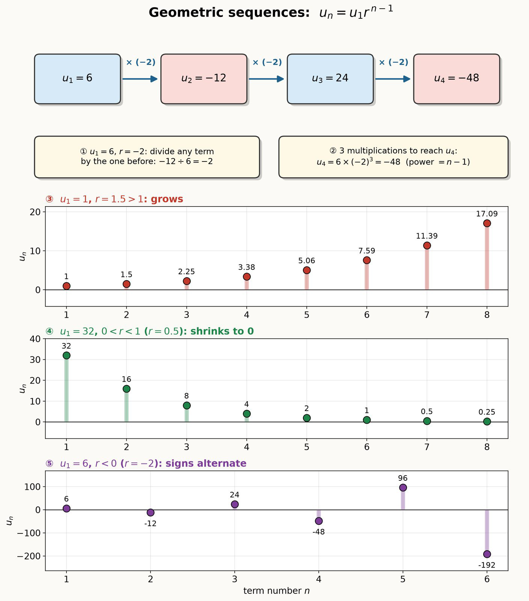
×r chain 6, −12, 24, −48 (u4=6×(−2)3); un plotted for r = 1.5, 0.5 and −2.
🟦Geometric sequence: each term is the previous term multiplied by a constant common ratior=un+1un.
🟧un=u1rn−1. u1 = first term, r = common ratio (no units), n = term number.
🟧Worked example: u1=6, r=−2, so u4=6×(−2)3=−48.
🟩Terms that aren't neighbours: divide the later term by the earlier one. The power of r is the gap in the term numbers. From u2 to u5 it's r3.
🟩Finding n:
Isolate the power, e.g. 3n−1=729.
Solve, giving n−1=6.
Add 1, so n = 7.
Check by substituting.
🟩Behaviour: if (r > 1) the terms grow; if (0 < r < 1) they shrink towards 0; if (r < 0) the signs alternate.
🟨To classify a list, test every consecutive difference (arithmetic: all equal) and every ratio (geometric: all equal).
🟨Keep a negative r in brackets inside the power.
🟥Zichen's slip: wrote un=u1×(n−1)×r, multiplying by the step count. The (n-1) is a power.
🟥Zichen's slip: solved 3x=729, got x = 6 and stopped. That 6 is (n-1).
🟥Zichen's slip: called 9, 12, 18, 27 geometric, then "both". The ratios and the differences are both unequal, so it's neither. Sharing a factor of 3 isn't enough.
🟥Zichen's slip (spaced review): wrote un=ru−1, then un=(n−1)rn−1. Secure by the third go.
🟪Link: SL 1.3 series and SL 1.8 sum to infinity (4 Oct). Growth and decay models (e.g. a 2% decline means r = 0.98).
Redraw: four boxes for u1 to u4 with "×r" arrows between them, and the last arrow labelled "power = n − 1". Sketch three un–n plots: growing (r > 1), decaying (0 < r < 1) and alternating (r < 0).
Recall questions
How do you find r from two neighbouring terms?
🔁 Retryu1=6, r=−2. Find u4.
u2 and u5 are known. What power of r links them?
🔁 Retry you solved and found the power is 6. What is n?
🔁 Retry is 9, 12, 18, 27 arithmetic, geometric or neither?
Exam-style questions
Q1 [5 marks] A geometric sequence has u3=12 and u6=−96. (a) Find r and u1. [3] (b) Find u10. [2]
Q2 [4 marks] The sequence 3, 6, 12, … is geometric. Find the first term that is greater than 1000, and state its term number.
Mark scheme
Q1(a): r3=−96/12=−8M1, r=−2A1, u1=12/(−2)2=3A1.
Q1(b): u10=3(−2)9M1, =−1536A1.
Q2: 3×2n−1>1000M1. 2n−1>333.3, so n−1=9A1. n = 10 A1, term = 1536 A1.
Flashcards
Most common way students lose marks on this: writing rn instead of rn−1, or stopping at the power instead of n.
Recall answers
Divide the later term by the earlier one.
−48.
r3.
n = 7.
Neither.
Sequences and series
Geometric series
📅 Sun 4 Oct 2026Lesson 3 of 8🃏 8 flashcards🔁 3 retries
SL 1.3 – Geometric series: the sum of the first n terms (SL + HL)
SL 1.8 – Sum of infinite convergent geometric sequences, using (|r| < 1) (SL + HL)
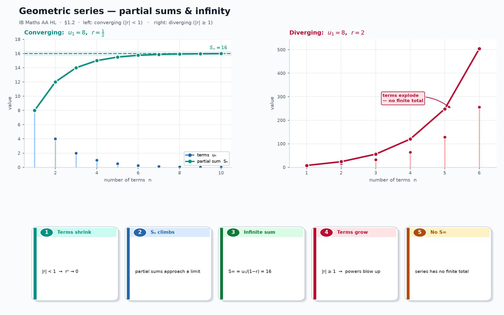
left, u1=8, r=12: the partial sums approach S∞=16. Right, u1=8, r=2: the terms grow, so there is no S∞.
🟦Sn = sum of the first n terms, not the nth term.
🟦Convergent: the partial sums approach a finite limit. This happens only when (|r| < 1).
🟧Sn=u1(rn−1)r−1=u1(1−rn)1−r, for r≠1. The power is n, the number of terms.
🟧Worked example: u1=4, r=3, so S5=4(35−1)2=484.
🟧S∞=u11−r, valid only if (|r| < 1).
🟧Worked example: u1=6, r=−12, so S∞=61.5=4.
🟩Derivation:
Write Sn.
Write rSn underneath.
Subtract: the middle terms cancel, leaving u1 and u1rn.
Divide by (r - 1).
🟩Because (|r| < 1), rn→0 as n→∞, so Sn→u11−r.
🟨Write "since (|r| < 1), the series converges" before you use S∞. It is often a mark.
🟥Zichen's slip: left out the "÷ (r − 1)". It only happened to work for r = 2.
🟥Zichen's slip: used power 5 for S3. The power is the number of terms.
🟥Zichen's slip: from rn→0 he concluded r = 0. It's the power that tends to 0. r stays the same.
🟥Zichen's slip: said the r = 2 formula answer isn't a sum "because it's negative". The real reason is that |r|≥1, so the terms don't shrink.
🟥Zichen's slip: after subtracting, he cancelled the first term. u1 has nothing to cancel with.
🟪Link: SL 1.4 financial applications (skipped for now). Recurring decimals as infinite series.
Redraw: a bar chart of the terms with a partial-sum line and a dashed horizontal line at S∞ for r = ½. A second chart for r = 2 with the bars growing and no limit line.
Recall questions
5, 15, 45: find S3 by adding, then with the formula.
🔁 Retryu1=4, r=3. Find S5. What power do you use?
🔁 Retry as n→∞, what tends to 0 in S∞? What does not?
🔁 Retry why does u1=8, r=2 have no infinite sum?
u1=6, r=−12. Find S∞.
Exam-style questions
Q1 [6 marks] A geometric series has first term 9 and sum to infinity 27. (a) Find r. [2] (b) Find the exact value of S6. [3] (c) Explain why the sum to infinity exists. [1]
Q2 [3 marks] Find ∑r=185×2r−1.
Mark scheme
Q1(a): 91−r=27M1, r=23A1.
Q1(b): S6=9(1−(2/3)6)1/3M1 A1, =66527A1.
Q1(c): |r|=23<1, so the series converges R1.
Q2: u1=5, r=2, n = 8 M1. S8=5(28−1)/1M1, =1275A1.
Flashcards
Most common way students lose marks on this: using S∞ without stating (|r| < 1), or using power (n - 1) in Sn.
Recall answers
65 both ways.
Power 5, S5=484.
rn→0; r does not.
|r|=2≥1, so the terms grow.
4.
Proof
Counterexamples and direct proof
📅 Wed 7 Oct 2026Lesson 4 of 8🃏 8 flashcards🔁 4 retries
AHL 1.15 – Use of a counterexample to show that a statement is not always true (HL only)
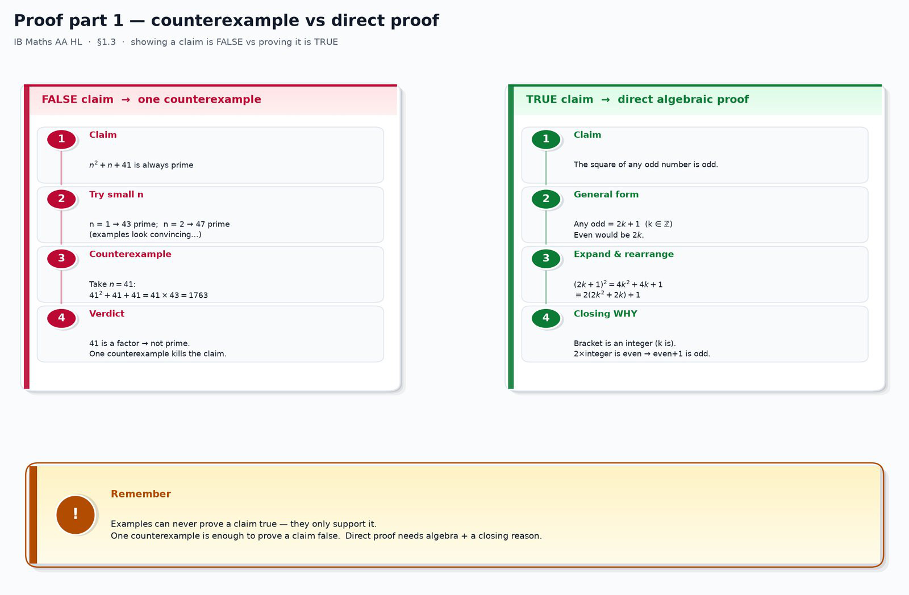
🟦Counterexample: one specific case where the statement is false. One is enough to disprove a claim.
🟦Even: (2k). Odd: (2k + 1), with k∈ℤ.
🟩Examples never prove a claim true. n2+n+41 is prime for n = 1 to 39, but n = 41 gives 1763=41×43.
🟩Direct proof:
Write the general form (2k or 2k + 1).
Expand.
Factor into 2(integer) or 2(integer) + 1.
State why the bracket is an integer.
Conclude.
🟧Worked example: the square of an odd number is odd. (2k+1)2=4k2+4k+1=2(2k2+2k)+1. Since 2k2+2k∈ℤ, this is odd.
🟨Mark-scheme closing words: "since … is an integer, … is even/odd". Algebra that stops at the expansion loses the final R1/A1.
🟨Use different letters for different numbers: (2a + 1) and (2b + 1).
🟥Zichen's slip: wrote 9=33 in a counterexample. 33=27.
🟥Zichen's slip: used the same odd number twice for "two odd numbers".
🟥Zichen's slip: called (n(n+2)) "the factor" instead of substituting and naming 41.
🟥Zichen's slip: stopped at 4k2+4k+1 with "which proves it is odd".
🟥Zichen's slip: factored 4k2+4k as (2k(k+2)). Expand back to check.
🟪Link: contradiction and identities (12 Oct). Induction later (AHL 1.15).
Redraw: a decision flowchart. "Read the claim" branches to "false? find ONE counterexample" or "true? direct proof with 2k / 2k + 1, then state the reason".
Recall questions
🔁 Retry disprove "every odd number is prime".
🔁 Retry prove that the sum of two odd numbers is even.
🔁 Retry prove that the square of an odd number is odd.
🔁 Retry show that n2+n+41 is not always prime.
How do you write a general even number and a general odd number?
Exam-style questions
Q1 [4 marks] Prove that the sum of any even number and any odd number is odd.
Q2 [2 marks] Show, using a counterexample, that "n2+1 is prime for all n∈ℤ+" is false.
Mark scheme
Q1: let the numbers be (2a) and (2b + 1), with a,b∈ℤM1. Sum =2a+2b+1=2(a+b)+1A1. Since (a + b) is an integer R1, the sum is odd A1.
Q2: e.g. n = 3 gives 10 A1, and 10=2×5 is not prime R1. (n = 5 gives 26 and n = 7 gives 50; any valid one scores.)
Flashcards
Most common way students lose marks on this: stopping after the algebra without the "since … is an integer, so …" conclusion.
Recall answers
9 = 3 × 3.
2(a+b+1), and the bracket is an integer.
2(2k2+2k)+1.
n = 41 gives 1763 = 41 × 43.
2k and 2k + 1.
Proof
Identities, divisibility and contradiction
📅 Mon 12 Oct 2026Lesson 5 of 8🃏 8 flashcards🔁 3 retries
SL 1.6 – Simple deductive proof: how to lay out a left-hand side to right- hand side proof; the symbols for equality and identity (SL + HL)
AHL 1.15 – Proof by contradiction (HL only)
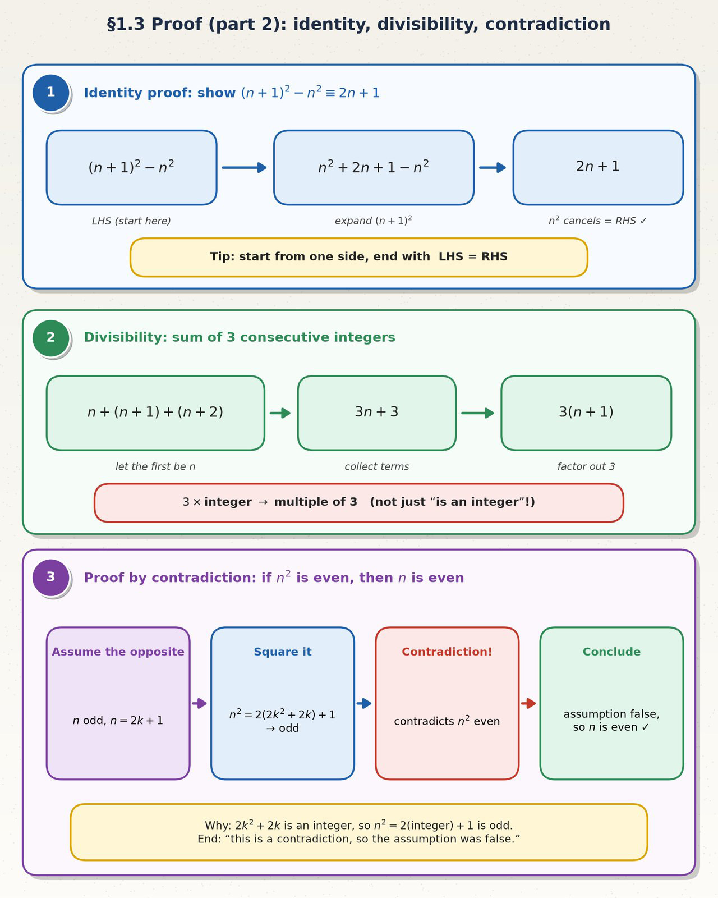
🟦Identity (≡): true for all values of the variable.
🟦Proof by contradiction: assume the negation of the statement, deduce something impossible, and conclude the assumption is false.
🟩LHS → RHS proof:
Start from one side (usually the messier one).
Simplify line by line.
Reach the other side.
Write "LHS = RHS".
Never work on both sides at once.
🟧Worked example: (n+1)2−n2=n2+2n+1−n2=2n+1= RHS.
🟩Divisibility: write consecutive integers as (n, n+1, n+2). Their sum is 3n+3=3(n+1). Since n + 1 is an integer, the sum is 3 × an integer, so it is a multiple of 3.
🟩Contradiction steps:
"Assume, for contradiction, that …"
Work forward.
Point out the contradiction.
"Hence the assumption is false, so …"
🟧Example: there is no largest integer. Assume N is the largest. Then N + 1 is an integer and N + 1 > N, a contradiction.
🟧Example: if n2 is even then n is even. Assume n is odd, n=2k+1. Then n2=2(2k2+2k)+1 is odd, which contradicts n2 being even, so n is even.
🟨"Is an integer" on its own proves nothing. Write "k × integer, so a multiple of k", and restate the full claim (including the word "consecutive").
🟥Zichen's slip: expanded (n+1)2 and dropped the −n2.
🟥Zichen's slip (recurring, also in the SME medium on 18 Oct, Q3): wrote "3(n + 1) is an integer".
🟥Zichen's slip: left out "since 2k2+2k is an integer" and the closing line.
🟥Zichen's slip: wrote 2(2k2+2) instead of 2(2k2+2k), and concluded "n is odd" instead of even.
🟥SME medium (18 Oct) slips: factored as (2k(2k+2) + 1) (Q11), and expanded n2−(n+1)2 the wrong way round (Q12).
🟪Link: counterexamples and direct proof (7 Oct). Divisibility returns in induction (AHL 1.15).
Redraw: three boxes joined by arrows: "Assume the opposite" → "Deduce something impossible" → "So the original statement is true".
Recall questions
🔁 Retry prove (n+2)2−n2≡4(n+1).
🔁 Retry prove that the sum of any 5 consecutive integers is a multiple of 5.
🔁 Retry prove by contradiction that if n2 is odd then n is odd.
What is the first line of every contradiction proof?
Why is "3(n + 1) is an integer" not enough?
Exam-style questions
Q1 [3 marks] Prove that (2n+1)2−(2n−1)2≡8n.
Q2 [4 marks] Prove by contradiction that there is no smallest positive rational number.
Q2: assume a smallest positive rational q exists M1. q2 is rational and positive A1, and q2<qA1. This contradicts q being the smallest, so there is no smallest positive rational R1.
Flashcards
Most common way students lose marks on this: a weak conclusion ("is an integer") instead of "k × integer, so a multiple of k", or no closing contradiction line.
Recall answers
LHS = n2+4n+4−n2=4n+4=4(n+1).
5n+10=5(n+2), and n + 2 is an integer.
Assume n = 2k, so n2=2(2k2) is even, a contradiction.
"Assume, for contradiction, that…"
Every integer is an integer. You must show it is 3 × an integer.
Counting principles
Product, factorials, permutations and combinations
📅 Wed 14 Oct 2026Lesson 6 of 8🃏 8 flashcards🔁 2 retries
AHL 1.10 – Counting principles, including permutations and combinations (HL only)
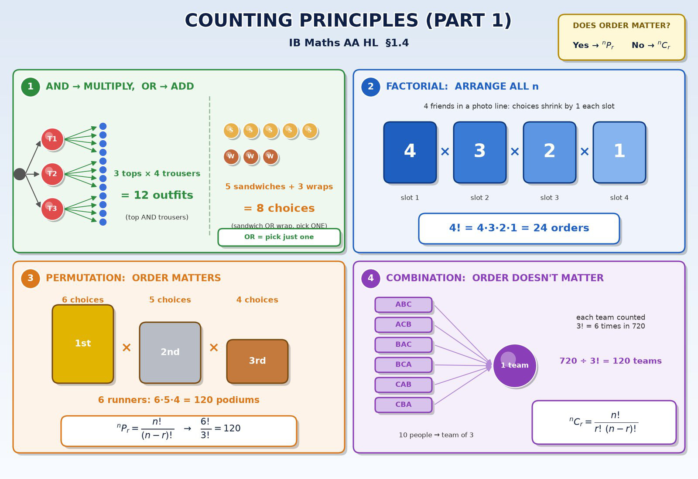
🟦Product principle: for "AND" (one choice then another), multiply.
🟦Addition principle: for "OR" (mutually exclusive options), add.
🟦Permutation: an arrangement where order matters. Combination: a selection where order doesn't matter.
🟧n!=n(n−1)⋯2·1, with 0!=1. This is the number of ways to arrange n different items in a line.
🟧nPr=n!(n−r)!. Example: 1st, 2nd and 3rd from 6 runners is 6×5×4=120.
🟧nCr=(nr)=n!r!(n−r)!. Example: a team of 3 from 10 is 720/3!=120.
🟩Why you divide by r!: each group of r is listed r! times in nPr, so nCr=nPr/r!.
🟩Method: draw the slots, then fill them in order with the number of choices for each.
🟨Ask "does order matter?" first. Roles, rankings and codes are P. Teams and groups are C.
🟨Not required by the spec: identical objects, circular arrangements.
🟥Zichen's slip: said 3 people can be ordered in 9 ways. It's 3! = 6.
🟥Zichen's slip: suggested "divide by 18". Divide by r! (here 3! = 6).
🟥Zichen's slip: several "idk"s on the slot method. Draw the slots first.
🟪Link: (nr) gives the binomial coefficients (SL 1.9, 18 Oct). Probability later.
Order matters?
Formula
Example
Permutation
Yes
(n!/(n-r)!)
Gold, silver, bronze from 8 = 336
Combination
No
(n!/(r!(n-r)!))
Choose 4 from 9 = 126
Redraw: a decision box, "Order matters?", with yes → nPr and no → nCr. Next to it, three slots labelled 6 × 5 × 4.
Recall questions
How many 3-digit codes from 0–9 with repeats allowed?
How many ways can 6 different books be arranged?
🔁 Retry gold, silver and bronze from 8 runners?
🔁 Retry choose 4 from 9?
One letter then one digit: how many codes?
Exam-style questions
Q1 [3 marks] A committee of 4 is chosen from 6 boys and 5 girls. Find the number of committees with exactly 2 girls.
Q2 [3 marks] A 4-digit code uses the digits 0–9 with no digit repeated and cannot start with 0. How many codes are possible?
Mark scheme
Q1: (52)and(62)M1, multiplied M1: 10×15=150A1.
Q2: 9 choices for the first digit A1, then 9×8×7M1. 9×9×8×7=4536A1.
Flashcards
Most common way students lose marks on this: using P when order doesn't matter (or C when it does).
Recall answers
1000.
720.
336.
126.
260.
Binomial theorem
General term and expansions
📅 Sun 18 Oct 2026Lesson 7 of 8🃏 8 flashcards🔁 2 retries
SL 1.9 – The binomial theorem: expansion of (a+b)n, n∈ℕ; use of Pascal's triangle and nCr (SL + HL)
(Started Sat 17 Oct, finished Sun 18 Oct.)
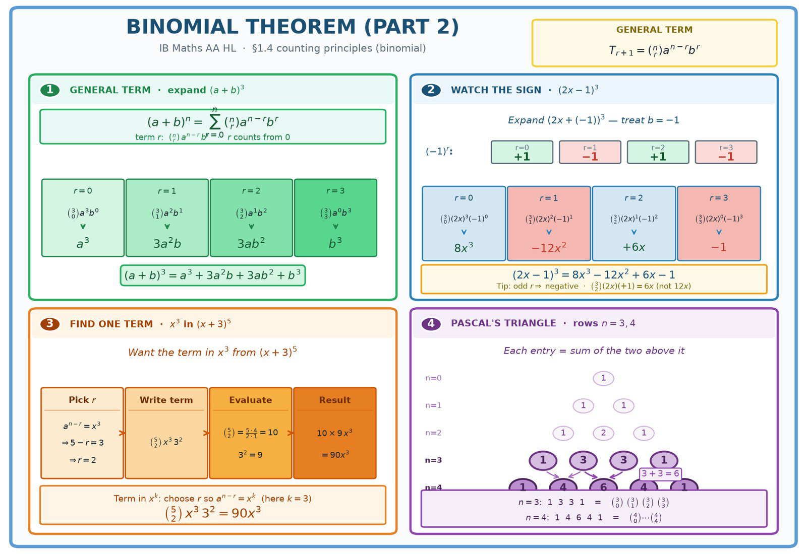
🟦Binomial expansion: (a+b)n written as a sum of (n + 1) terms.
🟧General term: (nr)an−rbr, for r = 0 to n. The powers of a fall from n, the powers of b rise from 0, and the two powers always add to n.
🟧Worked example: (2x−1)3=8x3−12x2+6x−1.
🟧Worked example: the x3 term in (x+3)5 needs r = 2: (52)x332=90x3.
🟩Pascal's triangle: each entry is the sum of the two above. n = 3 gives 1 3 3 1; n = 4 gives 1 4 6 4 1.
🟩Finding one term:
Write the general term.
Set the power of x equal to the target and solve for r.
Work out (nr) first.
Multiply everything in, including signs.
🟨Bracket the whole of b, with its coefficient and sign: (−1)r, (2x)r.
🟨Write (nr) and each power separately before multiplying.
🟥Zichen's slip: said (53)=40. It's 10.
🟥Zichen's slip: wanted to skip writing the terms. Write every term.
🟥Zichen's slip: wrote +12x instead of +6x in (2x−1)3. (32)(2x)(−1)2=6x.
🟥Zichen's slip: wrote 120/12 (9x3) on the way to 90x3. Work out (nr) cleanly first.
🟪Link: (nr) from counting (AHL 1.10). Fractional and negative indices are the AHL 1.10 extension, not taught yet.
Redraw: Pascal's triangle to n = 4. Next to it, the expansion of (a+b)4 with the falling powers of a and rising powers of b labelled under each term.
Recall questions
Expand (2x−1)3.
🔁 Retry expand (3x−2)2.
🔁 Retry find the x2 term in (x+4)6.
Write row n = 4 of Pascal's triangle.
How many terms does (a+b)7 have?
Exam-style questions
Q1 [4 marks] Expand (1−2x)4 fully, simplifying each term.
Q2 [3 marks] Find the coefficient of x2 in the expansion of (3+2x)5.
Mark scheme
Q1: coefficients 1, 4, 6, 4, 1 M1, with (−2x)r used M1. 1−8x+24x2−32x3+16x4A2 (A1 for 3 correct terms).
Q2: (52)33(2x)2M1 A1, =10×27×4=1080A1.
Flashcards
Most common way students lose marks on this: not raising the coefficient or the sign of b to the power r.
Recall answers
8x3−12x2+6x−1.
9x2−12x+4.
3840x2.
1 4 6 4 1.
8.
Chapter 1 review
Sequences and series, proof, counting principles, binomial theorem
📅 Wed 21 Oct 2026Lesson 8 of 8🃏 8 flashcards🔁 3 retries
Mixed review of SL 1.3, AHL 1.15, SL 1.9 and AHL 1.10 (textbook p.68 Q1, Q9, Q22, Q17, Q25). Coached review, so there is no score.
SL 1.3 – Geometric sequences from given conditions (SL + HL)
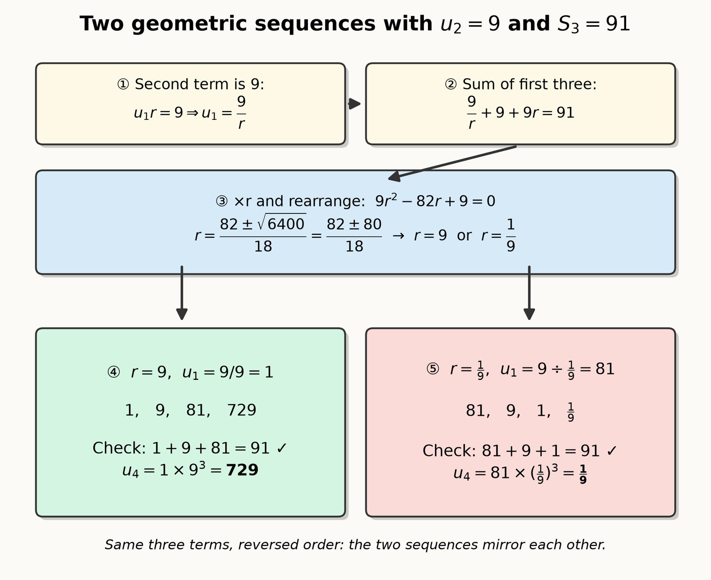
9r2−82r+9=0, so r = 9 or 19.
🟩Method:
Write each term using u1 and r if(u2=9),then(u1=9r).
Form an equation from the condition.
Clear the fractions.
Solve the quadratic in r.
🟧Q1: 9r+9+9r=91, so 9r2−82r+9=0 and r = 9 or 19.
🟧Sequences: 1, 9, 81, 729, and 81, 9, 1, 1/9. The fourth terms are 729 and 1/9.Correction:1is(u3)ofthesecondsequence,not(u4).
🟥Zichen's slips: wrote u1=r/9; wrote 93=273, then 723 (it's 729); gave 1 as the fourth term.
AHL 1.15 – Counterexamples and proof by contradiction (HL only)
🟧Q9 counterexamples:
a = 1, b = 2 gives a2−b2=−3<0 but a−b=−1.
n = 5 gives 35+2=245=5×49.
n = 1 gives √1=1, which is rational.
n = 4 gives 24−1=15.
🟧Q22: assume n is odd, n = 2k + 1. Then n3+3=8k3+12k2+6k+4=2(4k3+6k2+3k+2), which is even. That contradicts n3+3 being odd, so n is even.
🟨Assume the negation of the conclusion, and finish with the full contradiction line.
🟥Zichen's slips: restated a rule instead of giving numbers (Q9a); wrote 35=273 (it's 243); assumed n even instead of odd; concluded "it was true".
SL 1.9 – Binomial coefficient in a product (SL + HL)
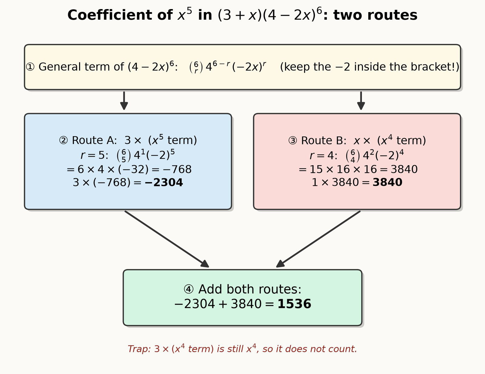
two routes to x5 in (3+x)(4−2x)6.
🟩For (p+qx)(…)n, find every pair of terms that makes the target power, then add them.
🟧Q17, x5: the x4 term is 15·16·16=3840 and the x5 term is 6·4·(−32)=−768. The coefficient is 3(−768)+3840=1536.
🟥Zichen's slips: left out (−2)4 and got 240; thought only the x4 term was needed.
AHL 1.10 – Arrangements in a row (HL only)
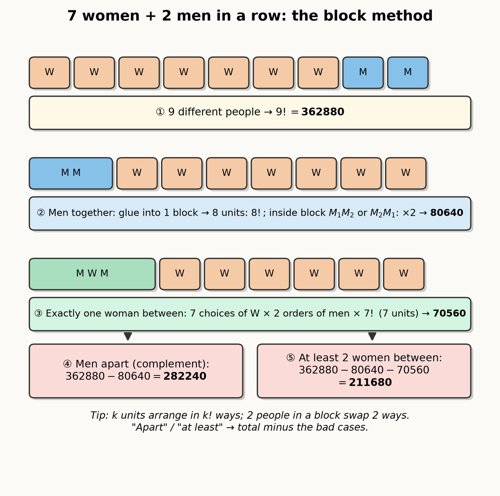
the block method: (9!), 8!×2, 7×2×7!, and complements.
🟩Together: glue the group into a block, arrange the units, then multiply by the arrangements inside the block.
🟩Apart: total minus together.
🟧Q25: the total is 9!=362880 and together is 8!×2=80640, so apart is (282240). Exactly one woman between is 7×2×7!=70560, so at least two women between is 362880−80640−70560=211680.
🟥Zichen's slips: said 8 ways inside a 2-person block (it's 2); said 7 units arrange in 7 ways (it's 7!).
Recall questions
🔁 Retryu2=6 and S3=26. Find r.
🔁 Retry find the coefficient of x3 in (2+x)(1−x)5.
🔁 Retry 5 boys and 2 girls sit in a row with the girls not next to each other. How many ways?
Prove by contradiction that if n2 is odd then n is odd.
What are the fourth terms of the two sequences in p.68 Q1?
Exam-style questions
Q1 [5 marks] Find the coefficient of x2 in the expansion of (1+2x)(3−x)4.
Q2 [3 marks] Five girls and three boys sit in a row. Find the number of arrangements in which the three boys sit together.
Mark scheme
Q1: x2 term of (3−x)4: (42)32=54M1 A1. x term: (41)33(−1)=−108A1. Coefficient =54+2(−108)M1, =−162A1.
Q2: block, so 6 units arranged in 6! ways M1, × 3! inside the block M1, =4320A1.
Flashcards
Most common way students lose marks on this: missing one of the routes to the target power, or dropping the sign of b.
Recall answers
r = 3 or 13.
2(−10)+10=−10.
7!−6!×2=3600.
Assume n = 2k, so n2=2(2k2) is even, a contradiction.
729 and 1/9.
Movement and position
Speed, distance and distance-time graphs
📅 Tue 22 Sep 2026Lesson 1 of 12
🟪The notes for this lesson are combined with the next entry (Thu 15 Oct 2026 — Movement and position: speed and motion graphs (catch-up)).
Movement and position
Speed and motion graphs (catch-up)
📅 Thu 15 Oct 2026Lesson 2 of 12🃏 8 flashcards🔁 2 retries
The Thu 15 Oct catch-up (Arnold/Johnson/Woolley) backs up the 22 Sep and 26 Sep lessons. Its v–t part is in the next section.
4PH1 1.3 – Plot and explain distance−time graphs
4PH1 1.4 – Know and use the relationship between average speed, distance moved and time taken
🟧average speed = distance moved ÷ time takenv=s/t.
v = speed (m/s), s = distance (m), t = time (s).
Worked example: 100 m in 20 s, so v = 100 ÷ 20 = 5 m/s.
🟨Balanced ≠ stopped. Balanced means the motion doesn't change.
🟥Slip (29 Sep): swapped tension (put it as non-contact) and electrostatic (put it as contact).
🟥Slip (29 Sep): listed time as a vector.
🟥Slip (29 Sep): got 10 N but gave the direction as right, when the left force was bigger.
🟥Slip (29 Sep): said a forward resultant on a moving car makes its speed decrease.
🟥Slip (29 Sep): used g = 8 instead of 10 N/kg. On 4 Oct he used g = 5, then fixed it.
🟥Slip (29 Sep): called the table's upward force a "resistance force". It's the normal contact force.
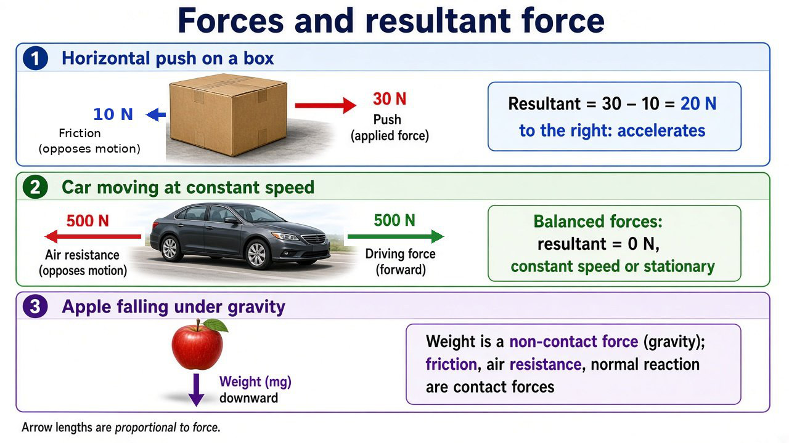
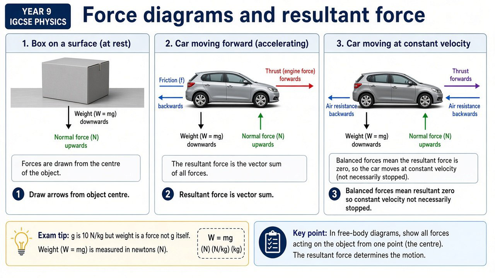
Diagram to draw: force arrows where length = size, labelled with size and direction. Draw a box pulled both ways, a tug of war, a car with driving and resistive forces, and a book on a table. 5 quick recall questions
Three effects of a force?
Is tension contact or non-contact?
18 N right and 10 N left: what is the resultant? Retry another day
Constant speed: what is the resultant? Retry another day
Weight of a 0.80 kg book on Earth?
Exam-style questions
Q1 (2 marks). A box is pushed with 30 N to the right, and friction is 10 N. Calculate the resultant force.
30 − 10 = 20 (N) (1)
to the right / in the direction of the push (1)
Q2 (3 marks). An astronaut has a mass of 70 kg. Calculate the weight on the Moon g=1.6N/kg, and state the mass on the Moon.
W = 70 × 1.6 (1)
= 112 N (1)
mass = 70 kg (unchanged) (1)
Flashcards
Most common way students lose marks on this: a resultant with no direction, or "balanced means stopped".
Recall answers
Change of speed, direction or shape.
Contact.
8 N right.
0 N.
8 N.
Forces and movement
F = ma
📅 Tue 6 Oct 2026Lesson 5 of 12🃏 8 flashcards🔁 2 retries
4PH1 1.17 – Know and use the relationship between unbalanced force, mass and acceleration
🟧F = m × a
F = resultant force (N), m = mass (kg), a = acceleration (m/s²).
Worked example: a 0.8 kg ball with 2 N of air resistance.
Weight = 0.8 × 10 = 8 N.
Resultant = 8 − 2 = 6 N down (why this step: F must be the resultant).
a = 6 ÷ 0.8 = 7.5 m/s² down.
🟩Same force, more mass → less accelerationa=F÷m.
🟩Slowing down → a is negative and the resultant points backwards.
🟩Resultant 0 → a = 0 → constant speed. It doesn't have to stop.
🟨Never put the weight, a single force, or g into F = ma. Find the resultant first. g is not a force.
🟥Slip (6 Oct): added g (10) as a force in the falling-ball resultant.
🟥Slip (6 Oct): put a force (2 N) in the mass slot, then used the weight instead of the resultant.
🟥Slip (6 Oct): called the 200 N push "the resultant".
🟥Slip (6 Oct): said a cyclist with balanced forces slows down. Balanced ≠ stopped.
Practical: trolley and light gates (CHECK: not a named 4PH1 practical; it supports 1.17)
🟩Trolley on a track, with a string over a pulley to hanging masses. Force = weight of the hanging masses.
🟩Two light gates + data logger give the speeds and the time → a = (v − u) ÷ t.
🟩Keep the total mass constant by moving masses from the trolley to the hanger.
🟩Same mass → a ∝ F → the a–F graph is a straight line through the origin.
🟨Use light gates, not a stopwatch, because a stopwatch adds reaction-time error.
🟥Slip (6 Oct): said "weight of the car" instead of the mass of the trolley, and suggested a stopwatch.
🟥Slip (6 Oct): first said the a–F line doesn't pass through the origin.
🟥Slip (6 Oct): wrote a capital A for acceleration, and spelt "troley" and "backwords".
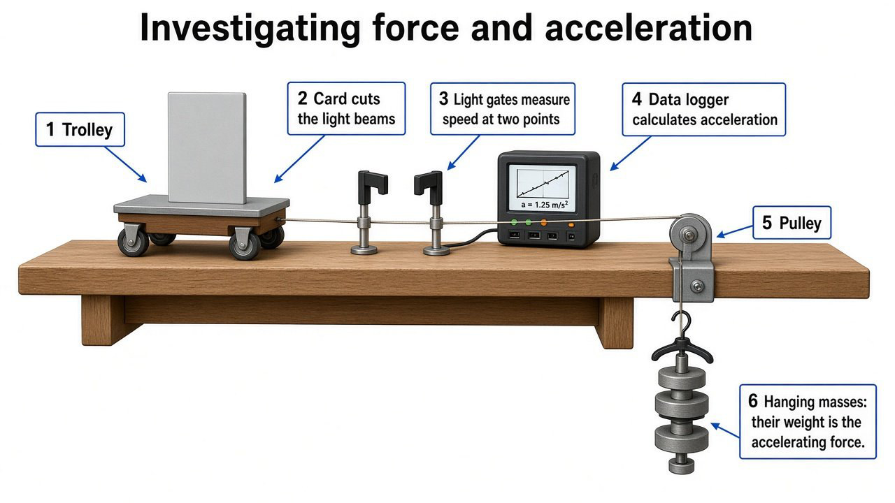
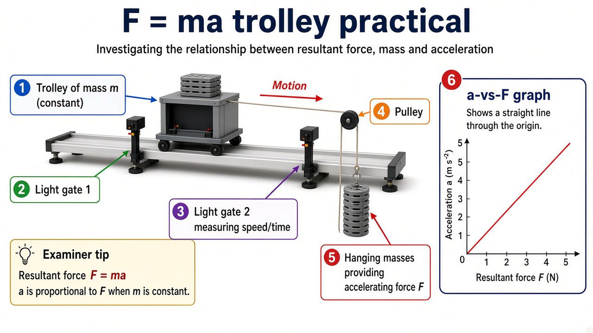
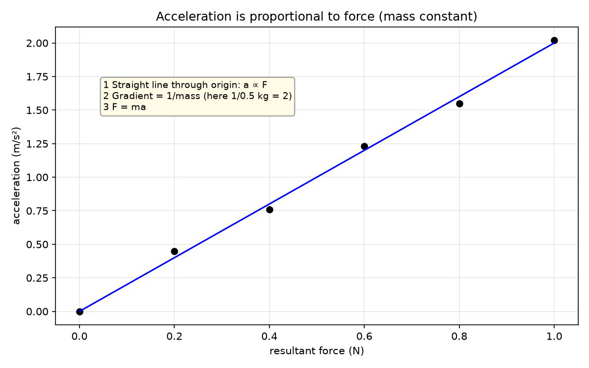
Diagram to draw: the trolley, 2 light gates, data logger, pulley and hanging masses, with the force labelled as the weight of the masses. Then an a–F graph: a straight line through the origin. 5 quick recall questions
What exactly is F in F = ma?
A 0.8 kg ball with 2 N drag: what is a? Retry another day
Push 200 N, resultant 75 N: what is the friction?
Balanced forces: what is a? Retry another day
Why use light gates?
Exam-style questions
Q1 (3 marks). A car of mass 1200 kg has a driving force of 3000 N and resistive forces of 600 N. Calculate its acceleration.
resultant = 3000 − 600 = 2400 N (1)
a = 2400 ÷ 1200 (1)
= 2 m/s² (1)
Q2 (2 marks). Explain why the student moves masses from the trolley to the hanger, rather than adding new masses.
keeps the total mass constant (1)
so only the force changes / it's a fair test (1)
Flashcards
Most common way students lose marks on this: using a single force or the weight instead of the resultant.
Recall answers
The resultant force.
7.5 m/s² down.
125 N.
0.
They avoid reaction-time error.
Forces and movement
Stopping distance
📅 Thu 8 Oct 2026Lesson 6 of 12
🟪The notes for this lesson are combined with the next entry (Sat 10 Oct 2026 — Forces and movement: hard review (stopping distance and F = ma)).
Ends the Ch3 chunk (F = ma + stopping distance).
Forces and movement
Hard review (stopping distance and F = ma)
📅 Sat 10 Oct 2026Lesson 7 of 12🃏 8 flashcards🔁 3 retries
A review sitting, not a new lesson. It's merged with Thu 8 Oct here.
4PH1 1.19 – Know that the stopping distance of a vehicle is made up of the sum of the thinking distance and the braking distance
4PH1 1.20 – Describe the factors affecting vehicle stopping distance, including speed, mass, road condition and reaction time
Worked example: 20 m/s, 0.6 s reaction time, 30 m braking.
Thinking = 20 × 0.6 = 12 m. Stopping = 12 + 30 = 42 m.
🟦Thinking distance: covered during the reaction time, at steady speed (not accelerating).
🟦Braking distance: covered while the brakes are on and the car decelerates.
Factor
Thinking distance
Braking distance
tiredness, alcohol, drugs, distraction (phone)
↑
same
wet / icy road, worn tyres or brakes
same
↑
heavier car (more mass)
same
↑
higher speed
↑
↑ (even more)
🟩Thinking distance doubles when speed doubles. Braking distance increases even more.
🟩Heavier car, same braking force → a = F ÷ m is smaller → longer time to stop → longer braking distance.
6000 N ÷ 1500 kg = 4 m/s² deceleration.
Add 500 kg: 6000 ÷ 2000 = 3 m/s².
🟩Same braking force and mass → same deceleration at any speed.
🟨Say which distance changes and which stays the same. Don't just write "stopping distance increases".
🟨Name the cause (wet road, worn tyres), not just "friction".
🟥Slip (8 Oct): said the car is still accelerating during the reaction time.
🟥Slip (8 Oct): said the slower car has the bigger deceleration.
🟥Slip (10 Oct): gave "friction" as a braking factor. That's too vague.
🟥Slip (10 Oct): said the heavier car stops in a shorter distance, using s = vt (a constant-speed equation).
🟥Slip (18 Oct review): said "stopping distance: friction" for icy roads. Say braking distance.
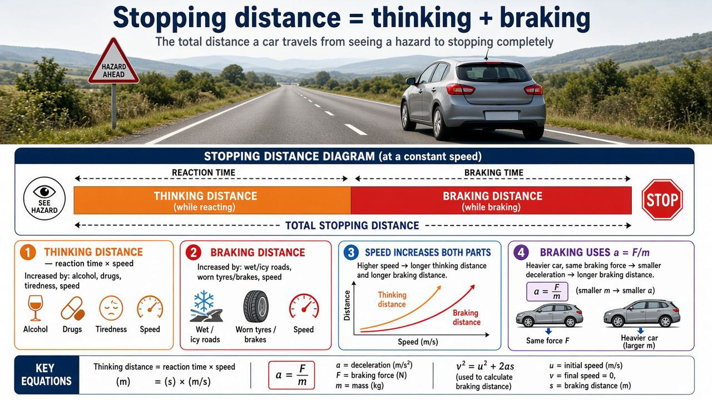
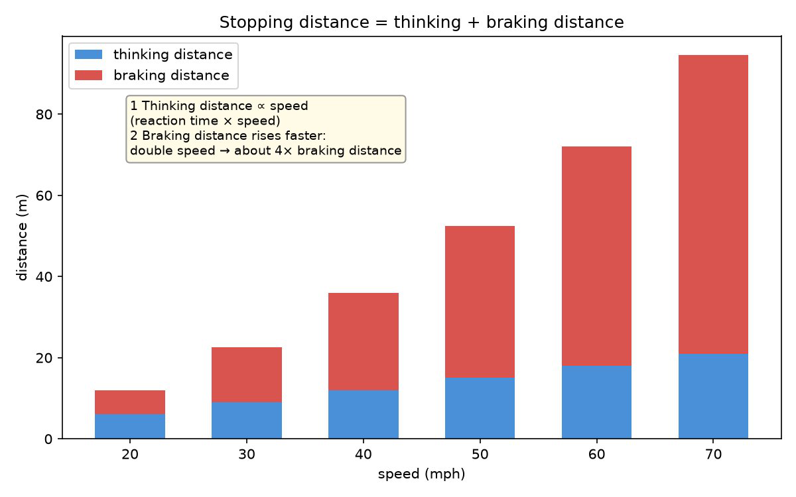
Diagram to draw: one bar split into thinking + braking distance, with the factors written above each part and speed under both. Add two cars with the same braking arrow (1500 kg and 2000 kg), labelled with their decelerations. 5 quick recall questions
Stopping distance = ?
Speed during the reaction time? Retry another day
A driver on their phone: which distance changes?
Icy road: which distance changes?
Same force on a heavier car: what happens to the braking distance? Retry another day
Two cars of the same mass brake with the same force. One is travelling faster. Which car has the bigger deceleration? Explain. [2] Retry another day
Exam-style questions
Q1 (3 marks). A car travels at 25 m/s. The driver's reaction time is 0.8 s and the braking distance is 48 m. Calculate the stopping distance.
thinking = 25 × 0.8 (1)
= 20 m (1)
stopping = 20 + 48 = 68 m (1)
Q2 (3 marks). Explain how increasing the mass of a car affects its braking distance, for the same braking force.
a = F ÷ m, so the deceleration is smaller (1)
it takes longer to stop (1)
braking distance increases (1)
Reject: "uses s = vt".
Flashcards
Most common way students lose marks on this: saying "stopping distance increases" without naming which part.
Recall answers
Thinking + braking distance.
Steady.
Thinking distance.
Braking distance.
It gets longer.
Neither: same deceleration (1), because a = F/m is the same; speed doesn't matter (1).
Forces and movement
Terminal velocity
📅 Tue 13 Oct 2026Lesson 8 of 12
🟪The notes for this lesson are combined with the next entry (Thu 8 Oct 2026 — Forces and movement: SME retrieval (F = ma and stopping)).
Forces and movement
SME retrieval (F = ma and stopping)
📅 Thu 8 Oct 2026Lesson 9 of 12🃏 8 flashcards🔁 3 retries
A retrieval sitting on the Ch3 chunk, with a terminal-velocity preview. Not a new lesson. Its Qs are merged into this section.
4PH1 1.21 – Describe the forces acting on falling objects (and explain why falling objects reach a terminal velocity)
🟩Falling object:
At the start v = 0 → no air resistance → resultant = weight → acceleration is at its maximum.
🟨At terminal velocity, write "weight = air resistance, resultant = 0, a = 0".
🟥Slip (13 Oct): thought the skydiver stops when the parachute opens.
🟥Slip (8 Oct SME): said "stable" instead of "constant", and didn't explain why acceleration decreases.
🟥Slip (15 Oct SME): said a increases. Speed ↑ → drag ↑ → acceleration decreases.
🟥Slip (15 Oct SME): called the upward force "upthrust". Say drag / air resistance.
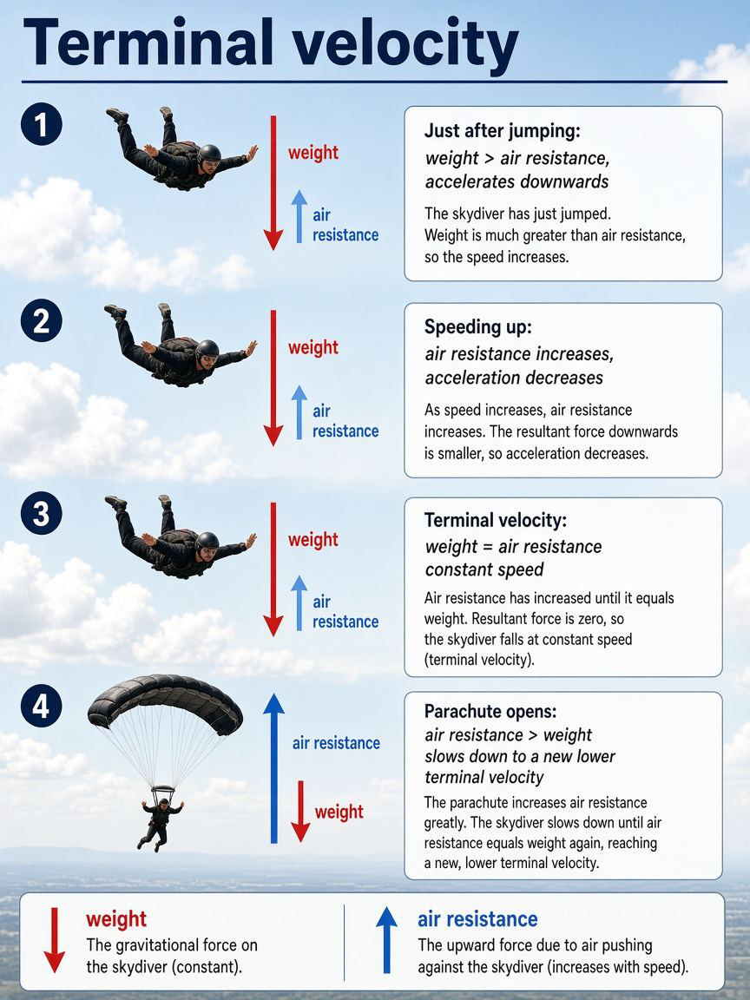
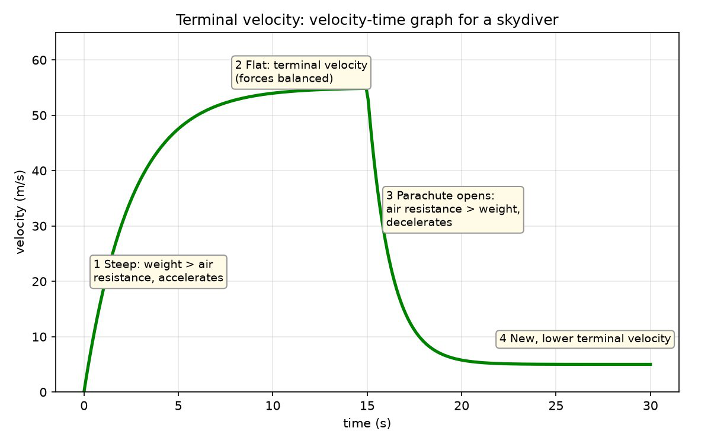
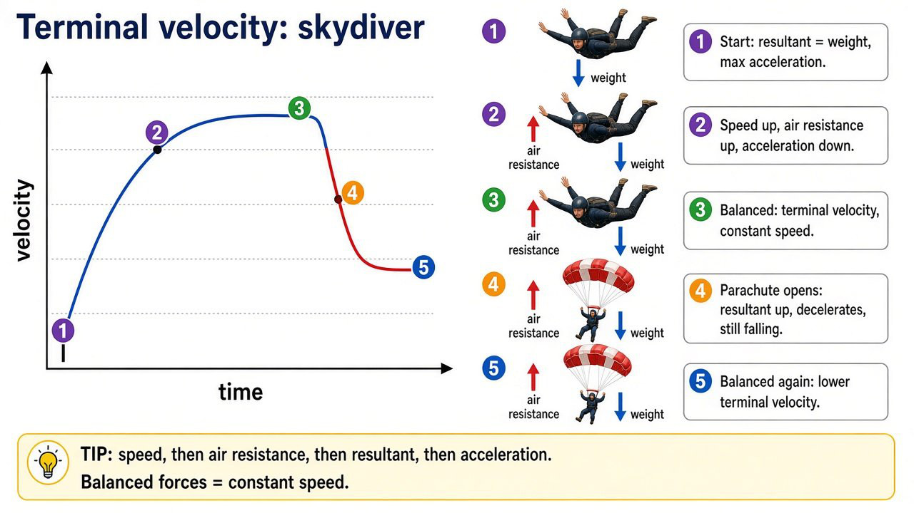
Diagram to draw: a skydiver v–t graph with 5 numbered stages, with weight and air- resistance arrows at each stage, drawn to scale. 5 quick recall questions
Why is acceleration greatest at the start?
What happens to a as speed increases? Retry another day
What is the resultant at terminal velocity? Retry another day
Parachute opens: which way is the resultant?
Head-first or flat: which has the higher terminal velocity?
A skydiver falls at terminal velocity. Compare the size of the drag force with the weight, and explain what this means for the resultant force. [2] Retry another day
Exam-style questions
Q1 (4 marks). Explain why a skydiver reaches terminal velocity.
at first only weight acts / air resistance is small, so they accelerate (1)
as speed increases, air resistance increases (1)
the resultant force decreases, so the acceleration decreases (1)
when air resistance = weight, resultant = 0, so they move at constant speed (1)
Q2 (2 marks). Explain why opening the parachute reduces the skydiver's speed.
larger surface area, so air resistance increases (above weight) (1)
the resultant force is upwards, so they decelerate (1)
Flashcards
Most common way students lose marks on this: not explaining why acceleration decreases (air resistance rises with speed).
Recall answers
There's no air resistance, so the resultant is the weight.
It decreases.
0.
Upwards.
Head-first.
Drag = weight (1), so the resultant force is 0 and there is no acceleration (1).
Forces and shape
Hooke's law
📅 Thu 1 Oct 2026Lesson 10 of 12🃏 8 flashcards🔁 3 retries
4PH1 1.22 – Practical: investigate how extension varies with applied force for helical springs, metal wires and rubber bands
4PH1 1.23 – Know that the initial linear region of a force-extension graph is associated with Hooke's law
4PH1 1.24 – Describe elastic behaviour as the ability of a material to recover its original shape after the forces causing deformation have been removed
🟦Extension: new length − original length. It is not the total length.
🟦Elastic behaviour: the material recovers its original shape after the deforming forces are removed.
🟦Limit of proportionality: where the F–x graph stops being straight. Past it, F = kx no longer works.
🟦Elastic limit: past it, the spring is permanently deformed and doesn't return to its original length.
🟧F = k × x (Hooke's law, the initial linear region)
F = force (N), k = spring constant (N/m), x = extension (m).
Force = weight of the masses, W = mg g=10N/kg.
Worked example: k = 200 N/m, F = 6 N → x = 6 ÷ 200 = 0.03 m = 3 cm. Why this step: divide by k, and the result is already in metres.
🟩Bigger k → stiffer spring (more force for the same extension).
🟨Convert cm → m (÷ 100) before using F = kx.
🟨Measuring: read the ruler at eye level to avoid parallax, and repeat the measurements.
🟥Slip (1 Oct): calling the end of the straight line the "elastic limit".
🟥Slip (1 Oct): leaving x in cm.
🟥Slip (12 Oct SME): said "start at the 0 mark" / "place it closer to the ruler", and missed parallax and repeats.
🟥Slip (15 Oct SME): said it "returns to shape". The exam wants "original length / shape".
CHECK the spec only says Hooke's law is the "initial linear region". F = kx and the spring constant come from the textbook, not the spec wording.
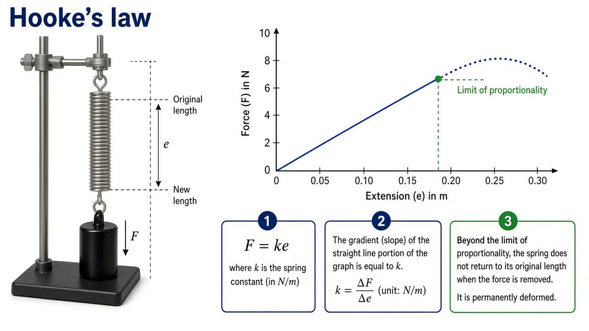
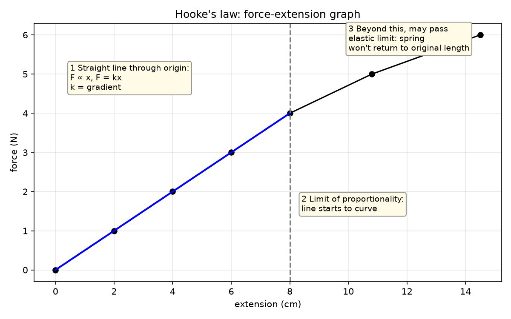
Diagram to draw: a force–extension graph: a straight line from the origin, then a curve. Label the limit of proportionality. Axes: force (N) up, extension (m) along. 5 quick recall questions
Define extension.
A 4 cm reading: what x goes into F = kx? Retry another day
What does a bigger k mean?
Where does F = kx stop working? Retry another day
Elastic limit vs limit of proportionality?
A spring has k = 200 N/m. A force of 6 N is applied. Calculate the extension in cm. [2] Retry another day
Exam-style questions
Q1 (3 marks). A spring has k = 40 N/m. Calculate the extension, in cm, when a 2.0 N force is applied.
x = F ÷ k = 2.0 ÷ 40 (1)
= 0.05 m (1)
= 5 cm (1)
Q2 (2 marks). Give two ways to make the extension readings more accurate.
read the ruler at eye level / avoid parallax (1)
use a pointer fixed to the spring / repeat and average (1)
Flashcards
Most common way students lose marks on this: confusing the limit of proportionality with the elastic limit, or leaving x in cm.
Recall answers
New length − original length.
0.04 m.
A stiffer spring.
At the limit of proportionality.
Past the elastic limit, the spring is permanently deformed.
x = F/k = 6/200 = 0.03 m = 3 cm.
Forces and movement
Momentum
📅 Thu 15 Oct 2026Lesson 11 of 12
🟪The notes for this lesson are combined with the next entry (Tue 20 Oct 2026 — Forces and movement: momentum — conservation of momentum and force as rate of change of momentum).
Forces and movement: momentum
Conservation of momentum and force as rate of change of momentum
📅 Tue 20 Oct 2026Lesson 12 of 12🃏 8 flashcards
Exit check: 1.5/4 first try (20 Oct 2026). Physics only.
4PH1 1.25P – Know and use the relationship between momentum, mass and velocity
🟧p = m × v
p = momentum (kg m/s), m = mass (kg), v = velocity (m/s).
Worked example: 2 kg at 4 m/s → p = 8 kg m/s to the right.
🟦Momentum is a vector, so always give the direction (set right = +).
🟥Slip (15 Oct): gave the momentum unit as m/s. It's kg m/s.
4PH1 1.27P – Use the conservation of momentum to calculate the mass, velocity or momentum of objects
🟦Conservation of momentum: with no external forces (closed system), total momentum before = total momentum after.
🟧Stick together: p_before = (m₁ + m₂) × v.
Worked example: 2 kg at 3 m/s hits 1 kg at rest → 6 = 3v → v = 2 m/s.
🟧Explosion from rest: total = 0 → momenta after are equal and opposite.
Worked example: 0.5 kg ball at 6 m/s left → the 1.5 kg trolley gets 3 = 1.5v → 2 m/s right.
🟨Watch the signs when objects move towards each other.
🟥Slip (20 Oct): used the wrong combined mass after a stick-together collision.
🟥Slip (20 Oct): multiplied p × m instead of dividingv=p÷m.
🟥Slip (20 Oct): gave 0 m/s and no direction.
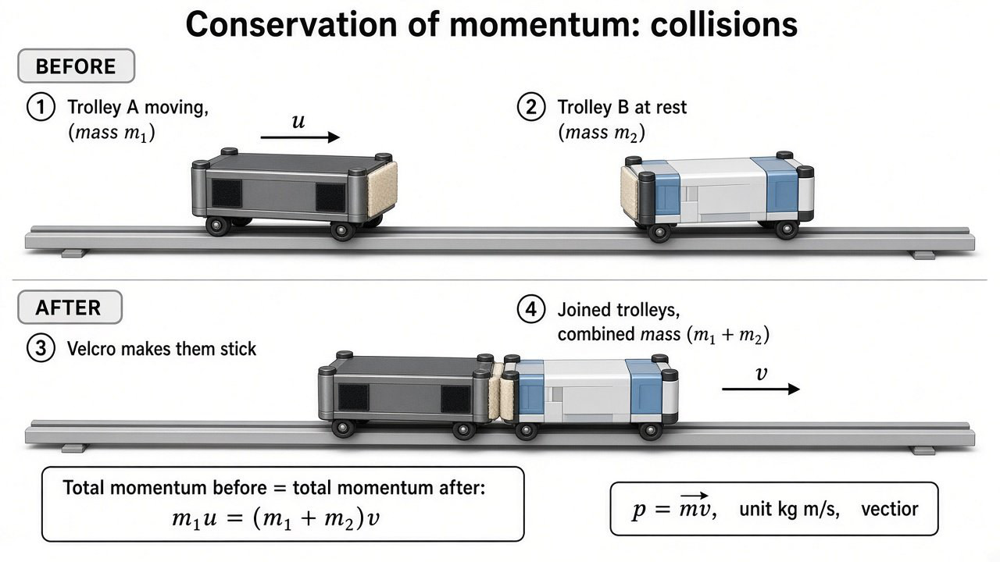
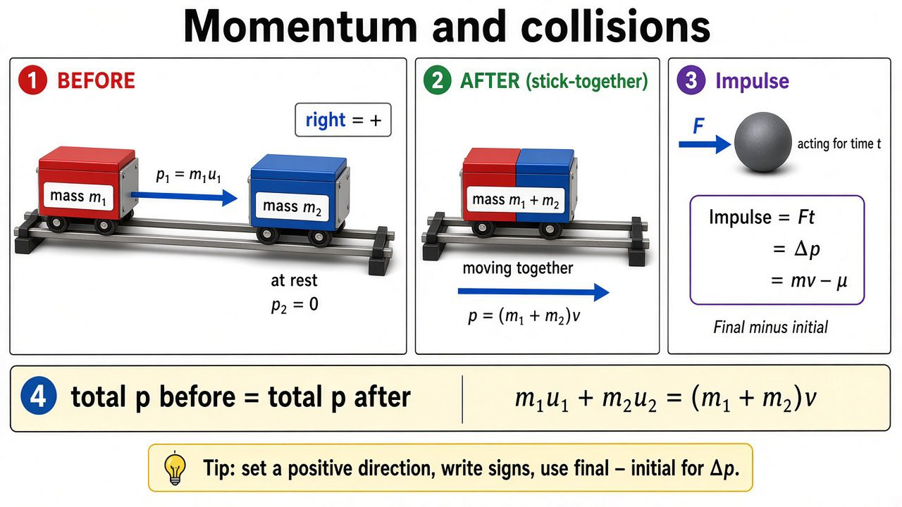
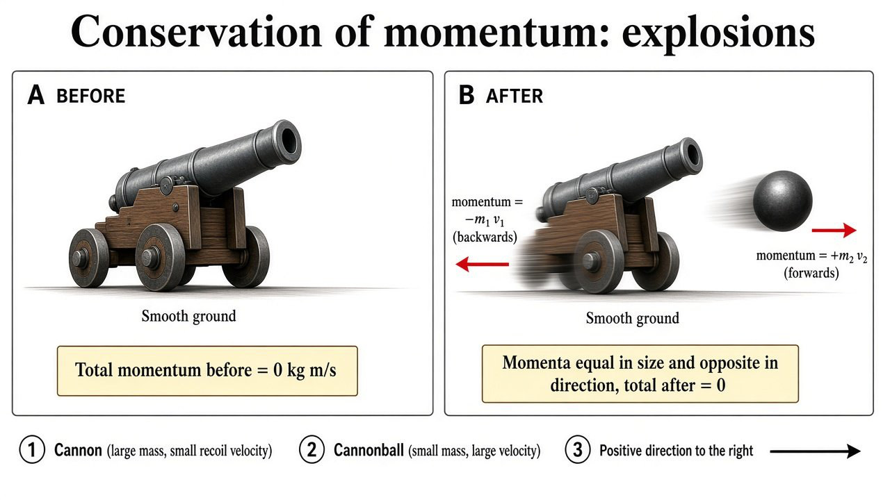
4PH1 1.28P – Use the relationship between force, change in momentum and time taken
🟧F = (mv − mu) / t
F = force (N), mv − mu = change in momentum (kg m/s), t = time (s).
Worked example: 0.2 kg ball at 10 m/s stopped in 0.05 s → Δp = 0 − 2 = −2 kg m/s → F = −2 ÷ 0.05 = −40 N (40 N opposing the motion).
🟩Δp = final − initial.
Beyond the spec: impulse = F × t = Δp.
🟥Slip (15 Oct): did initial − final (4 − 3) at first. Fixed to final − initial = −7 kg m/s.
🟥Slip (20 Oct): gave the force unit as kg m/s. It's N.
🟥Slip (20 Oct): arithmetic slip on 1200 × 15.
🟥Slip (22 Oct SME easy): wrote 20 × 15 000 = 30 000. It's 300 000 kg m/s. Count the zeros.
4PH1 1.26P – Use the idea of momentum to explain safety features
🟩Airbag / crumple zone / seat belt → time for the momentum to change increases → for the same Δp, F = Δp / t is smaller → less injury.
🟨Link time to force. "Increases the time" on its own scores nothing.
🟥Slip (20 Oct): said "increase time" with no link to force.
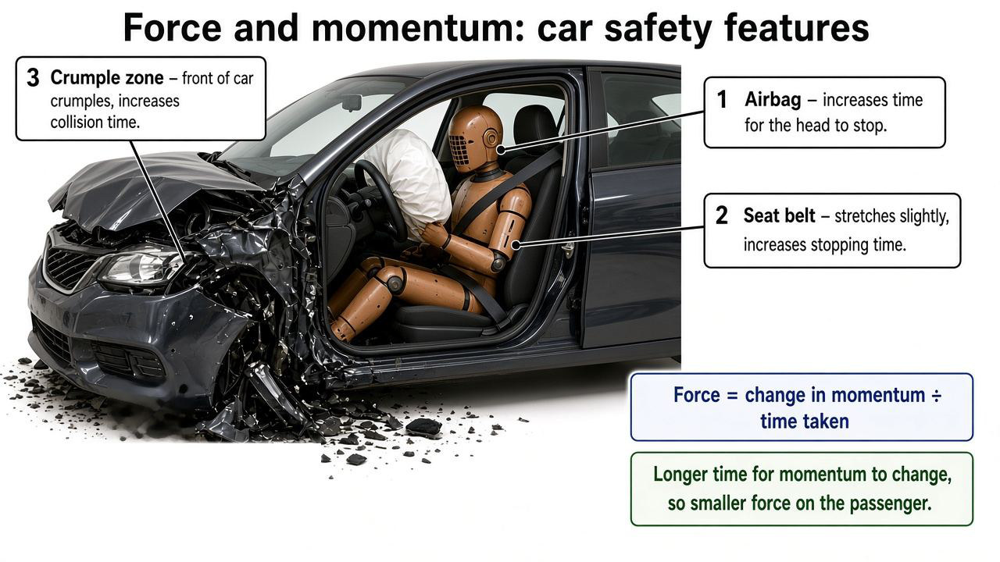
Diagram to draw: two trolleys before and after a collision, with momentum arrows and a sign convention (right = +). Add a recoiling cannon for an explosion.
5 quick recall questions
Momentum equation and unit?
When is momentum conserved?
2 kg at 3 m/s hits 1 kg at rest and they stick: what is v?
Equation linking force and momentum?
Why do airbags reduce force?
Exam-style questions
Q1 (3 marks). A 1200 kg car moving at 15 m/s collides with a stationary 800 kg car. They move off together. Calculate their velocity.
momentum before = 1200 × 15 = 18 000 kg m/s (1)
18 000 = (1200 + 800) × v (1)
v = 9 m/s (in the original direction) (1)
Q2 (4 marks). Explain how a crumple zone reduces the force on a passenger in a crash.
the crumple zone increases the time of the collision (1)
the change in momentum is the same (1)
force = change in momentum ÷ time (1)
so the force is smaller (1)
Flashcards
Most common way students lose marks on this: "increases the time" with no link to a smaller force, and missing directions.
Recall answers
p = mv, in kg m/s.
When there are no external forces.
2 m/s.
F = (mv − mu)/t.
They increase the time, so F = Δp/t is smaller.
Biology
Life processes and cell structure
📅 Mon 21 Sep 2026Lesson 1 of 14🃏 8 flashcards
4BI1 1.1 – Understand how living organisms share the following characteristics (nutrition, respiration, excretion, response, movement, control of internal conditions, reproduction, growth and development)
🟦Cell membrane: controls what enters and leaves the cell.
🟦Cell wall (plants, made of cellulose): strengthens the cell and keeps its shape.
🟩The wall holds the shape → the membrane decides what goes in and out. These are two different jobs.
🟨Plant cell shape question → answer "cell wall", never "membrane".
🟥Slip (21 Sep): said the membrane controls in/out and holds the cell's shape. That mixes up the membrane's job with the wall's.
CHECK only the membrane and the wall were taught on 21 Sep. The other organelle functions listed in 2.3 still need a lesson.
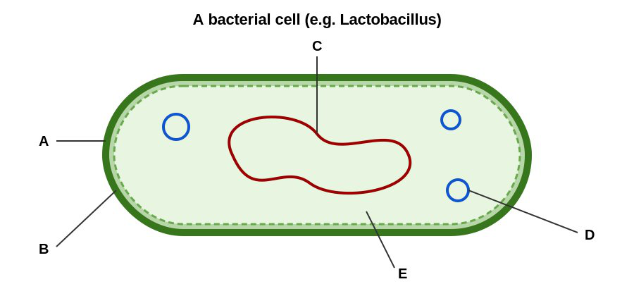
Diagram to draw: a plant cell and an animal cell side by side. Label the nucleus, cytoplasm, cell membrane, cell wall (plant only), mitochondria, chloroplasts (plant only), ribosomes, and the permanent vacuole (plant only).
5 quick recall questions
What does MRS GREN stand for?
Which characteristic in the spec is missing from MRS GREN?
What does the cell membrane do?
Which structure keeps a plant cell's shape?
What is the plant cell wall made of?
Exam-style questions
Q1 (2 marks). Give two functions of the cell wall and the cell membrane. (1 each)
cell membrane controls what enters and leaves the cell (1)
cell wall strengthens / gives shape / support (1)
Reject: "the membrane gives shape".
Q2 (1 mark). Which structure is found in a plant cell but not in an animal cell? A cell membrane, B cytoplasm, C cell wall, D nucleus.
C (1)
Flashcards
Most common way students lose marks on this: giving the cell membrane the cell wall's job (shape or support).
4BI1 1.2 – Describe the common features shown by eukaryotic organisms: plants, animals, fungi and protoctists
4BI1 1.3 – Describe the common features shown by prokaryotic organisms such as bacteria
4BI1 1.4 – Understand the term pathogen and know that pathogens may include fungi, bacteria, protoctists or viruses
🟦Prokaryotic / eukaryotic describe cells. A virus is not a cell, so it is neither.
🟦Pathogen: a microorganism that causes disease.
🟦Saprotrophic nutrition (fungi): extracellular secretion of digestive enzymes onto food, then absorption of the small soluble molecules made.
🟩Bacteria are the only prokaryotes here. Protoctists are eukaryotic.
🟩Bacterial DNA = a circular chromosome in the cytoplasm, plus plasmids (extra small rings). Bacteria have no nucleus.
🟩Bacteria have a cell wall. Viruses have no cellular structure: a protein coat and one type of nucleic acid (DNA or RNA).
🟩Viruses are parasitic and reproduce only inside living cells, using the host's materials and machinery.
🟩TMV (tobacco mosaic virus) → prevents the formation of chloroplasts → less chlorophyll → less light absorbed → less photosynthesis → poorer growth and discoloured (mosaic) leaves.
Group
Nucleus?
Cell wall
How it feeds
Example (spec)
Plants
yes
cellulose
photosynthesis
maize, peas/beans
Animals
yes
none
eat other organisms
humans, housefly, mosquito
Fungi
yes
chitin
saprotrophic
Mucor, yeast
Protoctists
yes
some
varies
Amoeba, Chlorella, Plasmodium (malaria)
Bacteria
no (circular chromosome + plasmids)
yes
most feed off other organisms; some photosynthesise
Lactobacillus bulgaricus, Pneumococcus
Viruses
not a cell
reproduce only inside living cells
TMV, influenza, HIV
none (protein coat)
🟨Say a virus uses the host's materials and machinery. Don't say it uses the host's "energy".
🟥Slip (28 Sep): called a virus "prokaryotic because there's no nucleus".
🟥Slip (28 Sep): said plasmids are the bacterium's DNA, and left out the circular chromosome.
🟥Trap: giving a virus a cell wall.
🟥Trap: saprotrophs feed on "nutrients". Write "small soluble molecules".
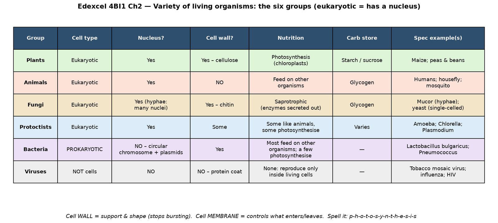
Diagram to draw: the six-group table above, then a bacterium next to a virus. Label the bacterium's cell wall, cell membrane, cytoplasm, circular chromosome and plasmids, and the virus's protein coat and nucleic acid.
5 quick recall questions
Is a virus prokaryotic, eukaryotic or neither?
Where is a bacterium's DNA?
What is a pathogen?
What are fungal cell walls made of?
How does TMV reduce growth?
Exam-style questions
Q1 (3 marks). Describe three structural features of a bacterial cell.
cell wall (1)
circular chromosome / DNA in the cytoplasm / no nucleus (1)
plasmids (1)
Also accept: cell membrane, cytoplasm. Reject: nucleus.
(TMV prevents) formation of chloroplasts / less chlorophyll (1)
less light absorbed, so less photosynthesis (1)
less glucose for growth / respiration (1)
Flashcards
Most common way students lose marks on this: calling a virus prokaryotic or giving it cell structures.
Recall answers
Neither. It isn't a cell.
A circular chromosome in the cytoplasm, plus plasmids.
A microorganism that causes disease.
Chitin.
It stops chloroplasts forming → less photosynthesis.
Biological molecules
Enzymes
📅 Mon 28 Sep 2026Lesson 3 of 14🃏 8 flashcards
Started Sun 27 Sep and finished Mon 28 Sep. The temperature and pH practicals weren't taught that day. They're covered in Sat 10 Oct below.
4BI1 2.10 – Understand the role of enzymes as biological catalysts in metabolic reactions
🟦Enzyme: a biological catalyst. It speeds up reactions and is not used up (unchanged, so it can be reused).
🟩Lock and key steps:
Substrate fits into the active site (shapes are complementary).
Enzyme–substrate complex forms.
Substrate → products.
Products leave, and the enzyme is unchanged.
🟨The enzyme is specific: only one substrate is complementary to its active site.
🟥Slip (28 Sep): said the enzyme can't be reused because "it became the product". The substrate becomes the product, not the enzyme.
🟥Trap: "same shape" or "exact shape". Write "complementary".
4BI1 2.11 / 2.13 – Understand how temperature changes and pH can affect enzyme function, including changes to the shape of the active site
🟦Denatured: the active site permanently changes shape, so the substrate no longer fits.
🟩Temperature ↑ → more kinetic energy → more collisions → faster rate, up to the optimum.
🟩Above the optimum → bonds holding the enzyme's shape break → denatured → rate falls.
🟩pH away from the optimum pH → active site shape changes → substrate can't bind → rate falls.
🟨Read the optimum off the peak of the graph.
🟥Slip (SME, 28 Sep): defined denaturing as only "enzyme shape changes" (1/3). It needs active site + permanently + substrate no longer fits.
🟥Slip (SME, 28 Sep): gave the optimum temperature of the "cell". It is the enzyme's optimum.
🟥Trap: "destroyed", "killed", or "the shape is denatured".
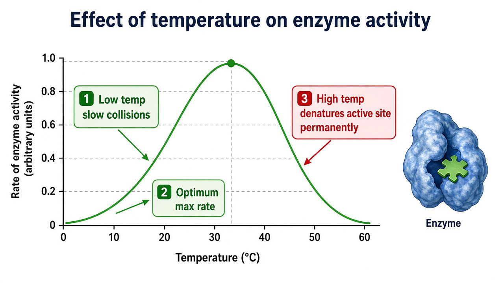
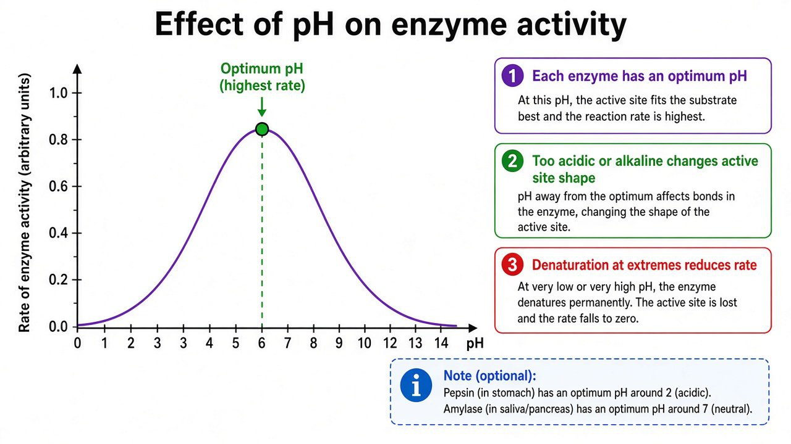
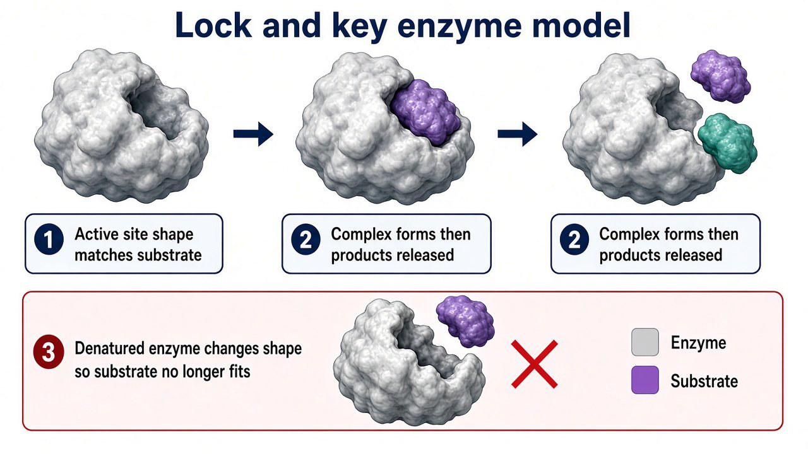
Diagram to draw: lock and key in 3 panels (substrate + active site → enzyme– substrate complex → products + unchanged enzyme), then a rate vs temperature graph. Label the optimum and "denatured". 5 quick recall questions
What is an enzyme?
What happens to the enzyme after the reaction?
Which word describes the shapes of the active site and substrate?
Define denatured.
What happens to the rate above the optimum temperature?
Exam-style questions
Q1 (3 marks). Explain why the rate of an enzyme-controlled reaction falls above 45 °C.
enzyme is denatured (1)
active site changes shape (permanently) (1)
substrate no longer fits / fewer enzyme–substrate complexes (1)
Reject: "the enzyme is killed" / "the cell is denatured".
Q2 (2 marks). Describe the lock and key model.
active site is complementary to the substrate (1)
forms an enzyme–substrate complex (1)
Flashcards
Most common way students lose marks on this: saying "shape changes" without active site and substrate no longer fits.
Recall answers
A biological catalyst.
It's unchanged and can be reused.
Complementary.
The active site permanently changes shape, so the substrate no longer fits.
It falls (the enzyme is denatured).
Animal physiology: gas exchange
Hard review (ventilation + amylase practical)
📅 Sat 10 Oct 2026Lesson 4 of 14🃏 8 flashcards
The morning review stopped mid-practical. This entry is the finished version, after the late- evening finish.
4BI1 2.12 – Practical: investigate how enzyme activity can be affected by changes in temperature
4BI1 2.14B – Practical: investigate how enzyme activity can be affected by changes in pH (Biology only)
🟩Method:
Put drops of iodine in a spotting tile.
Mix starch + amylase in a water bath at a set temperature (or pH buffer).
Every 30 s, add 1 drop of mixture to the iodine.
End-point: the drop stays orange-brown (starch all gone).
Record the time, and repeat at other temperatures (or pH values).
🟦Iodine: blue-black = starch present. Orange-brown = no starch.
🟩Temperature as IV: fastest near about 40 °C (optimum). At 60 °C the enzyme is denatured, so the active site changes shape and the rate falls.
🟩pH as IV: keep the temperature constant (control), plus the volumes and concentrations of amylase and starch.
🟩Extreme pH → enzyme denatured → rate very low or zero.
🟨A DV needs its end-point: "time until a sample stays orange-brown with iodine".
🟥Slip (10 Oct): said "the cell will be denatured" twice. It's the enzyme.
🟥Slip (10 Oct): gave "time with a stopwatch" as the DV with no end-point.
🟥Slip (10 Oct): spelt "amalyse". The correct spelling is amylase.
🟪Link: the ventilation chain was redone and is secure (muscles → volume → pressure → air flow). See Fri 9 Oct.
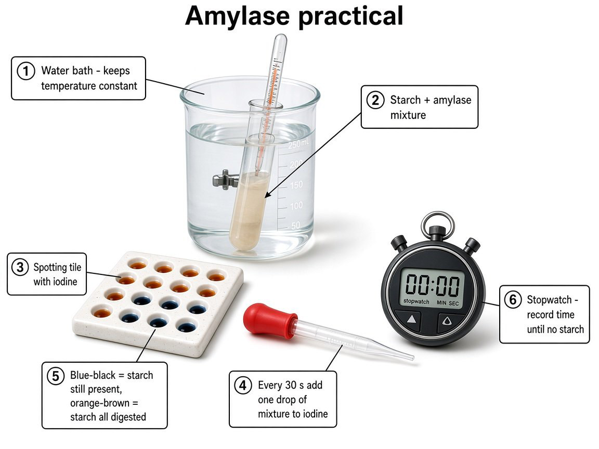
Diagram to draw: a spotting tile with wells going from blue-black to orange-brown. Next to it, a rate vs temperature graph peaking near 40 °C and falling by 60 °C, labelled "enzyme denatured — active site shape changes".
5 quick recall questions
Iodine colour with starch, and without?
What is the end-point?
Why is 60 °C slow?
In the pH practical, which variable becomes a control?
Give two other control variables.
Exam-style questions
Q1 (6 marks). Describe how you would investigate the effect of pH on the activity of amylase.
amylase + starch mixed with a buffer at a range of pH values (1)
water bath to keep temperature constant (1)
sample a drop onto iodine in a spotting tile at regular intervals (e.g. 30 s) (1)
end-point = iodine stays orange-brown / no blue-black (1)
record the time taken (1)
same volume / concentration of starch and amylase, and repeat (1)
Q2 (2 marks). Explain why no end-point was reached at pH 1.
amylase denatured (1)
active site shape changed, so starch can't bind and stays present / blue-black (1)
Flashcards
Most common way students lose marks on this: a DV with no end-point, or writing "the cell is denatured".
Recall answers
Blue-black, orange-brown.
The iodine stays orange-brown.
Amylase is denatured.
Temperature.
Volume and concentration of starch and amylase.
Biology
Movement of substances
📅 Fri 25 Sep 2026Lesson 5 of 14🃏 8 flashcards
4BI1 2.15 – Understand the processes of diffusion, osmosis and active transport by which substances move into and out of cells
🟦Diffusion: net movement of particles from a higher to a lower concentration (down a concentration gradient). Passive.
🟦Osmosis: net movement of water from a dilute solution to a more concentrated solution through a partially permeable membrane.
🟦Active transport: movement of substances against a concentration gradient, using energy from respiration and carrier proteins in the membrane.
Diffusion
Osmosis
Active transport
What moves
any particles
water only
ions / molecules
Direction
high → low conc.
dilute → concentrated
low → high (against gradient)
Membrane needed?
no
yes (partially permeable)
yes (carrier proteins)
Energy?
no
no
yes (respiration)
Example
O₂ into blood
water into root hair
mineral ions into root hair
🟩Root hair: water enters by osmosis. Mineral ions enter separately by active transport.
🟨Osmosis wording: "from a dilute to a more concentrated solution". Don't write "low to high".
🟨Never write that water moves "in order to" do something. Particles don't have a purpose.
🟥Slip (25 Sep): gave the correct definition, then moved water the wrong way (to the dilute side).
🟥Slip (25 Sep): said only osmosis needs a membrane. Active transport needs one too. Only diffusion can happen with no membrane.
🟥Slip (25 Sep): said water enters the root hair "to help absorb minerals" / "to dilute the solution".
🟥Slip (5 Oct warm-up): said water enters a root hair by active transport, then got the osmosis direction backwards. It took 3 tries.
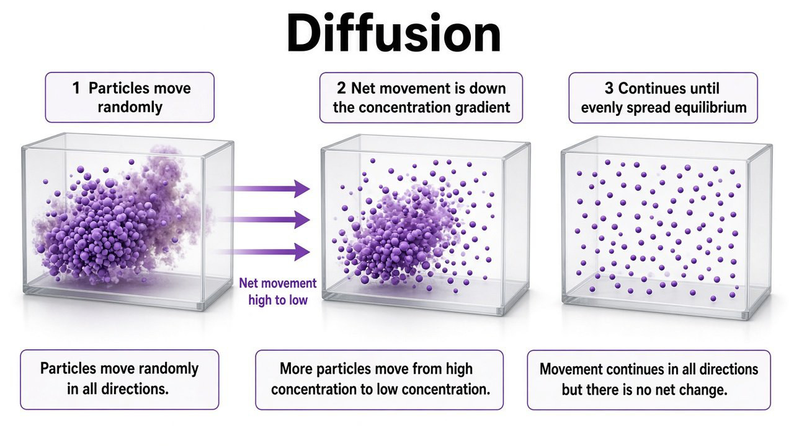
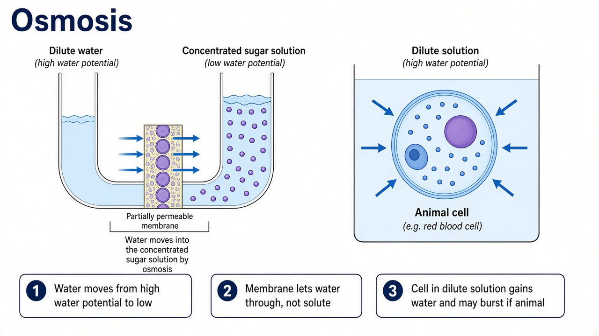
Diagram to draw: a U-tube with a partially permeable membrane, dilute sugar on side A and concentrated on side B, and an arrow showing water A → B. Then a root hair cell with arrows for water (osmosis) and mineral ions (active transport).
5 quick recall questions
Define osmosis.
Which process can happen with no membrane?
What does active transport need?
How does water enter a root hair?
How do mineral ions enter a root hair?
Exam-style questions
Q1 (3 marks). Explain how water moves from the soil into a root hair cell.
by osmosis (1)
from a dilute solution (soil water) to a more concentrated solution (cell sap) (1)
through a partially permeable membrane (1)
Q2 (2 marks). Give two differences between diffusion and active transport.
active transport goes against the concentration gradient, and diffusion goes down it (1)
active transport needs energy (from respiration) / carrier proteins, and diffusion doesn't (1)
Flashcards
Most common way students lose marks on this: reversing the osmosis direction, or missing "partially permeable membrane".
Recall answers
The net movement of water from a dilute to a more concentrated solution through a partially permeable membrane.
Diffusion.
Energy from respiration, and carrier proteins.
By osmosis.
By active transport.
Animal physiology: food and digestion
Balanced diet and food tests
📅 Mon 19 Oct 2026Lesson 6 of 14🃏 8 flashcards
Exit check: 4/4 (19 Oct 2026).
4BI1 2.24 – Understand that a balanced diet should include appropriate proportions of carbohydrate, protein, lipid, vitamins, minerals, water and dietary fibre
🟦Balanced diet: the 7 groups in the right proportions: carbohydrates, lipids, proteins, vitamins, mineral ions, fibre, water.
🟩Carbohydrates and lipids → mainly energy.
🟩Protein → growth and repair.
CHECK vitamins A, C and D, calcium and iron (spec 2.25) weren't covered in this lesson.
4BI1 2.9 – Practical: investigate food samples for the presence of glucose, starch, protein and fat
Test
Reagent / method
Positive result
Starch
iodine
blue-black
Reducing sugar (glucose)
Benedict's + heat (water bath)
brick-red / orange
Protein
Biuret
purple
Lipid
ethanol emulsion (shake with ethanol, pour into water)
milky / cloudy emulsion
🟨Benedict's: say you heat it, and name the colour (brick-red / orange).
🟥Slip (19 Oct): first answered "copper oxide" instead of the colour result.
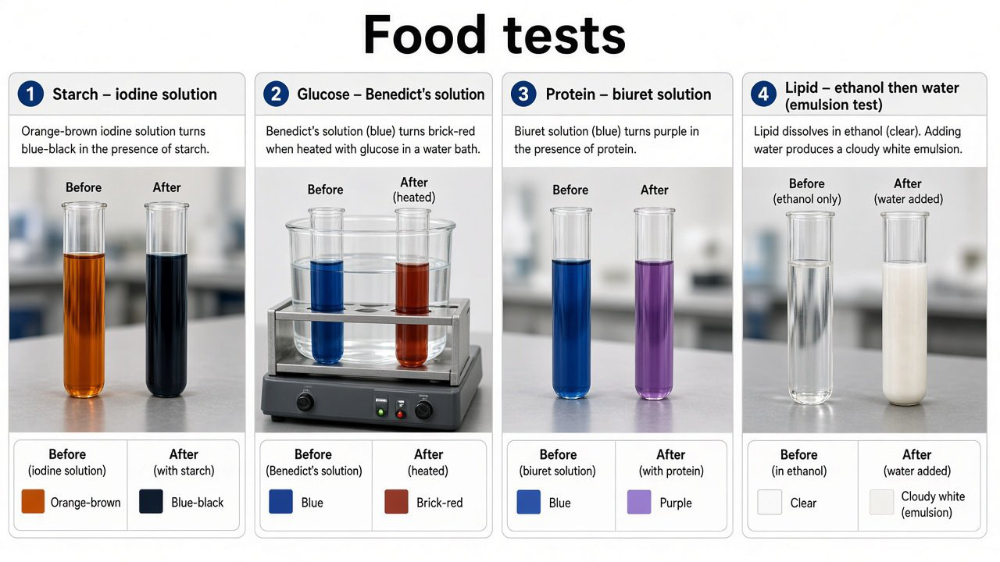
4BI1 2.33B – Practical: investigate the energy content in a food sample (Biology only)
🟩Burn the food under a tube of water → measure the temperature rise (ΔT) of the water.
🟩Keep the same: mass of water, starting temperature, mass of food.
🟩Bigger ΔT → more energy transferred from that food.
🟧Energy (J) = mass of water (g) × 4.2 × temperature rise (°C).
4.2 J/g °C is the specific heat capacity of water.
Worked example: 20 g of water rises by 15 °C, so energy = 20 × 4.2 × 15 = 1260 J.
CHECK the equation was shown on the figure, but the calculation itself wasn't practised in the lesson.
🟨Energy per gram = energy ÷ mass of food burned.
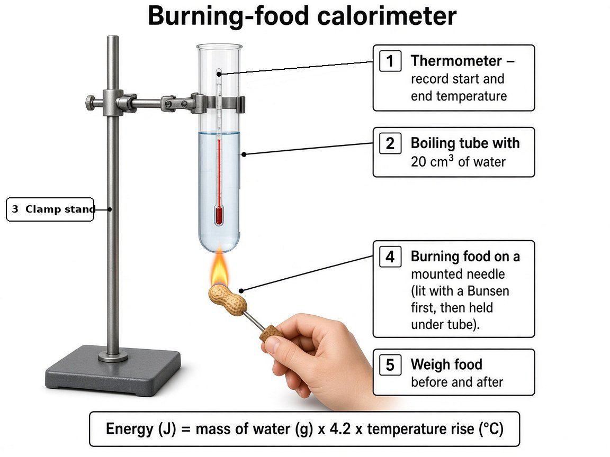
Diagram to draw: a food-test colour strip (iodine, Benedict's, Biuret, emulsion) showing before and after colours. Then a calorimeter: clamp stand, boiling tube of water, thermometer, food on a mounted needle.
5 quick recall questions
List the 7 food groups.
Benedict's: what must you do, and what is the positive colour?
Biuret positive colour?
Positive result for the emulsion test?
Calorimeter: what do you measure?
Exam-style questions
Q1 (3 marks). Describe how to test a food sample for reducing sugar.
add Benedict's solution (1)
heat in a water bath (1)
positive = brick-red / orange (precipitate) (1)
Reject: "copper oxide" as the result.
Q2 (2 marks). Give two variables that must be controlled when comparing the energy in two foods.
mass / volume of water (1)
mass of food / starting temperature / distance of food from the tube (1)
Flashcards
Most common way students lose marks on this: forgetting to heat Benedict's, or giving a chemical name instead of the colour.
Recall answers
Carbohydrates, lipids, proteins, vitamins, mineral ions, fibre, water.
Heat it, and it turns brick-red / orange.
Purple.
A milky / cloudy emulsion.
The temperature rise of the water.
Animal physiology: food and digestion
The digestive system and digestive enzymes
📅 Thu 22 Oct 2026Lesson 7 of 14🃏 8 flashcards
Challenge Q: 1/2 first try (22 Oct 2026).
4BI1 2.27 – Describe the structure and function of the human alimentary canal, including the mouth, oesophagus, stomach, small intestine (duodenum and ileum), large intestine (colon and rectum) and pancreas
🟦Ingestion: taking food into the mouth.
🟦Digestion: breaking large insoluble molecules into small soluble molecules.
🟦Absorption: small soluble molecules move from the gut into the blood (mostly in the small intestine).
🟦Assimilation: cells use the absorbed molecules, which become part of the body.
🟦Egestion: removal of undigested food (mostly fibre) as faeces through the anus.
🟩Organ order: mouth → oesophagus → stomach → small intestine → large intestine → rectum → anus.
🟨Egestion ≠ excretion. Excretion = removal of metabolic waste made by cells (e.g. CO₂, urea).
🟥Slip (22 Oct): said excretion, then "exgestion", for removing faeces.
🟥Slip (22 Oct): called egestion removal of "digested" food. It's undigested.
🟥Slip (22 Oct): said "transportation" for both digestion and absorption.
🟥Slip (22 Oct): spelt "oesophogus". The correct spelling is oesophagus.
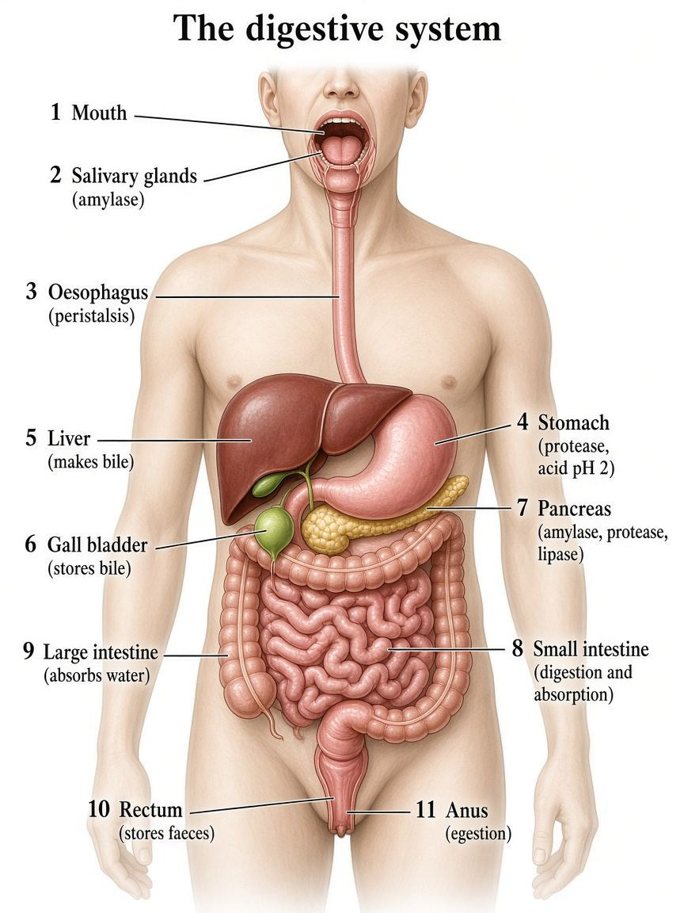
4BI1 2.28 – Understand how food is moved through the gut by peristalsis
🟦Peristalsis: waves of muscle contraction in the gut wall that push food along.
🟩Circular muscles contract behind the food → gut narrows → food is squeezed forward.
🟩Longitudinal muscles contract in front → that section gets shorter and wider → food moves in.
🟨It works whichever way up you are, because muscles do the pushing, not gravity.
🟥Slip (22 Oct): explained peristalsis as "anti-gravity". Name the muscle contraction.
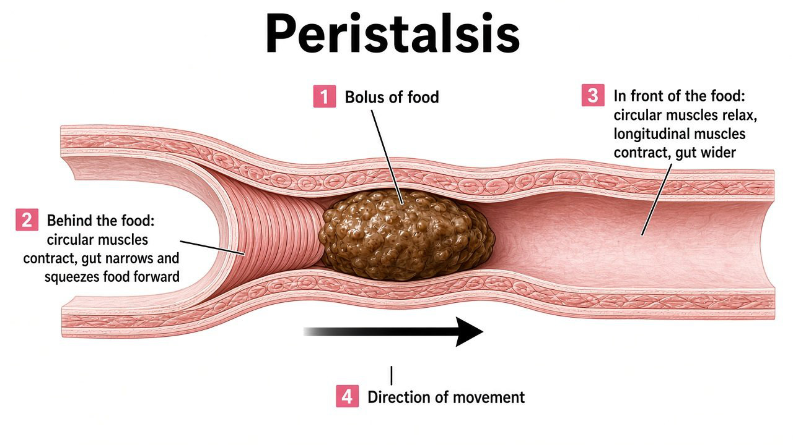
4BI1 2.29 – Understand the role of digestive enzymes, including the digestion of starch to glucose by amylase and maltase, the digestion of proteins to amino acids by proteases and the digestion of lipids to fatty acids and glycerol by lipases
🟩Stomach acid (pH about 2) → salivary amylase denatured → active site changes shape → starch no longer fits.
🟨Naming rule: -ase = enzyme, -ose = sugar.
🟥Slip (22 Oct): said amylase makes glucose. For Edexcel it makes maltose.
🟥Slip (22 Oct): spelt "maltese". The enzyme is maltase and the sugar is maltose.
🟥Slip (22 Oct, challenge Q 1/2): wrote "denatured" and "shape destroyed" but no consequence. The 2nd mark needs "starch no longer fits the active site".
🟪Link: enzymes and denaturing (Mon 28 Sep).
Diagram to draw: the gut outline with every organ labelled. Mark where each enzyme is made, and add a peristalsis panel showing the circular muscle contracting behind the bolus. 5 quick recall questions
Name the 5 processes in order.
Egestion vs excretion?
What does amylase make?
Where is lipase made?
What is peristalsis?
Exam-style questions
Q1 (2 marks). Suggest why salivary amylase stops working in the stomach.
acid / low pH denatures amylase (1)
active site changes shape, so starch no longer fits / can't bind (1)
Q2 (3 marks). Describe how starch is digested to glucose.
amylase (1)
breaks starch into maltose (1)
maltase breaks maltose into glucose (1)
Also accept: amylase from the salivary glands / pancreas.
Flashcards
Most common way students lose marks on this: mixing up egestion and excretion, or stopping at "denatured" with no consequence.
Egestion removes undigested food; excretion removes metabolic waste made by cells.
Maltose.
The pancreas.
Waves of muscle contraction that push food along the gut.
Animal physiology: food and digestion
Bile, absorption and villi
📅 Fri 23 Oct 2026Lesson 8 of 14🃏 8 flashcards
Challenge Q: 1/3 (23 Oct 2026).
4BI1 2.30 – Understand that bile is produced by the liver and stored in the gall bladder
🟦Bile: an alkaline liquid made in the liver, stored in the gall bladder, and released into the small intestine (duodenum) through the bile duct.
🟩Liver makes bile → gall bladder stores it → bile duct → small intestine.
🟥Trap: the gall bladder stores bile. It does not make it.
4BI1 2.31 – Understand the role of bile in neutralising stomach acid and emulsifying lipids
🟦Emulsification: breaking large fat droplets into many small droplets.
🟩Bile emulsifies fats → small droplets → larger surface area for lipase → fats digested faster.
🟩Bile is alkaline → neutralises stomach acid → optimum pH for small-intestine enzymes.
🟨Full-mark emulsification answer: small droplets + larger surface area + for lipase + faster digestion.
🟥Slip (23 Oct): left "more surface area for lipase" out of the emulsification answer.
🟥Slip (23 Oct): said bile leaves the small intestine "slightly acidic". Bile is alkaline.
🟥Trap: bile is not an enzyme.
Bile
Lipase
Made in
liver
pancreas
Enzyme?
no
yes
Effect on fat
emulsifei s it (physical)
digests it (chemical: fatty acids + glycerol)
pH role
alkaline, neutralises acid
needs the right pH
4BI1 2.32 – Understand how the small intestine is adapted for absorption, including the structure of a villus
🟦Villus: a finger-like fold of the small-intestine lining.
🟩Absorption happens mainly in the small intestine. The large intestine absorbs mostly water.
Feature
Factor improved
So…
many villi + microvilli
large surface area
more absorption
wall one cell thick
short diffusion distance
faster diffusion
good capillary network
steep concentration gradient
products carried away
lacteal
absorbs fatty acids + glycerol
into the lymph
🟥Slip (23 Oct): gave "very concentrated" as a villus feature. It's the gradient that is steep.
🟥Slip (23 Oct): forgot the one-cell-thick wall until hinted.
🟪Link: alveoli. Same three factors (Mon 12 Oct).
Beyond the spec: some products (e.g. glucose) are also absorbed by active transport.
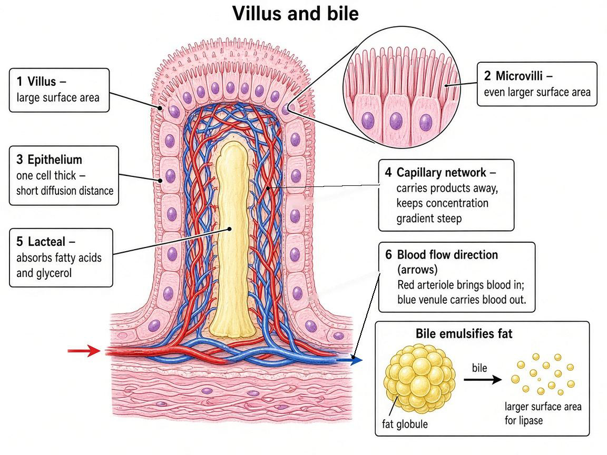
Diagram to draw: one villus. Label the microvilli, one-cell-thick epithelium, capillary network, lacteal and blood-flow arrows. Add an inset showing a fat globule → bile → small droplets.
🟩Anaerobic releases less energy, because energy is left in the lactic acid / ethanol.
🟩The energy is used for active transport, movement (muscle contraction), and more.
🟩After a sprint → panting takes in extra oxygen → breaks down lactic acid → pays the oxygen debt.
🟨Respiration is not breathing.
🟨Say "ethanol", not "alcohol".
🟥Slip (25 Sep): gave yeast "alcohol" only, and forgot CO₂.
🟥Slip (25 Sep): reversed an exit-check question and answered "lactic acid" instead of water.
🟥Slip (25 Sep): oxygen debt was vague at first ("regulate the oxygen gradient").
🟥Slip (5 Oct): spelt "oxygen dept". The correct spelling is debt.
🟥Slip (3 Oct SME): said yeast makes "energy" instead of CO₂, and gave muscle CO₂ too. CHECK: ATP (spec 2.34 / 2.35) wasn't taught in these lessons.
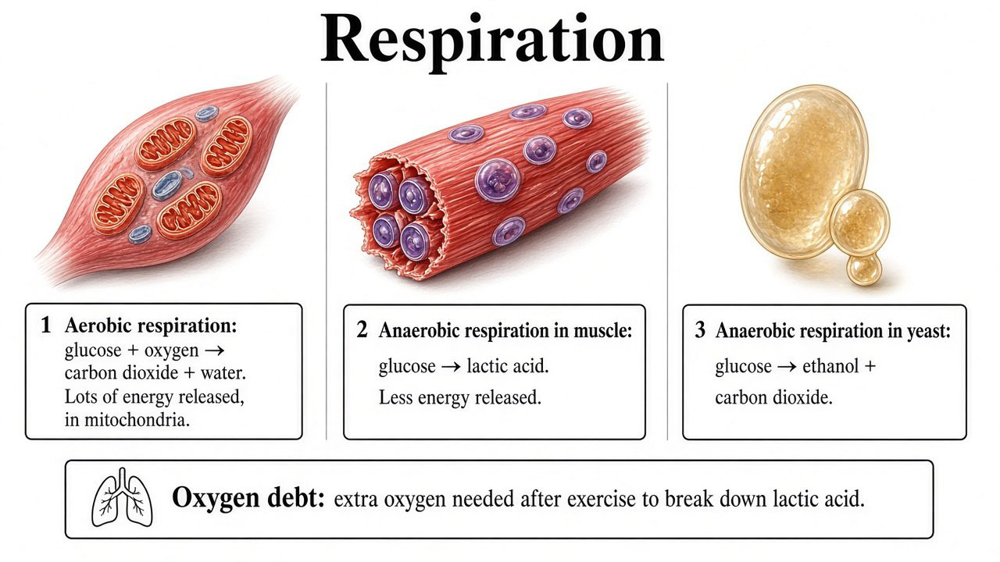
Diagram to draw: the three-column comparison table above, with a mitochondrion sketched beside the aerobic column.
5 quick recall questions
Aerobic word equation?
Where does aerobic respiration happen?
Muscle anaerobic product?
Yeast anaerobic products?
What is oxygen debt?
Exam-style questions
Q1 (3 marks). Compare aerobic respiration with anaerobic respiration in muscle.
aerobic uses oxygen, and anaerobic doesn't (1)
aerobic makes carbon dioxide and water, and anaerobic makes lactic acid (1)
aerobic releases more energy (1)
Q2 (2 marks). Explain why a runner continues to breathe deeply after a race.
to take in extra oxygen / repay the oxygen debt (1)
to break down lactic acid (1)
Flashcards
Most common way students lose marks on this: giving muscle the yeast products, or adding CO₂ to muscle.
Recall answers
Glucose + oxygen → carbon dioxide + water.
In the mitochondria.
Lactic acid.
Ethanol and carbon dioxide.
The extra oxygen needed after exercise to break down lactic acid.
Animal physiology: gas exchange
Thorax and path of air
📅 Mon 5 Oct 2026Lesson 11 of 14🃏 8 flashcards
4BI1 2.46 – Describe the structure of the thorax, including the ribs, intercostal muscles, diaphragm, trachea, bronchi, bronchioles, alveoli and pleural membranes
🟩Path of air: nose / mouth → trachea → bronchus → bronchiole → alveoli.
🟩Gas exchange happens in the alveoli.
🟩Cartilage rings hold the trachea open so it doesn't collapse.
🟩Diaphragm: a sheet of muscle forming the floor of the thorax.
🟩Intercostal muscles: between the ribs. They move the ribcage.
🟩Big animals need a breathing system: their surface area to volume ratio is too small, and the diffusion distance to deep cells is too long.
🟨The ribs protect the lungs. The intercostals move the ribs. They don't protect anything.
🟥Slip (5 Oct): said the intercostal muscles protect the lungs.
🟥Slip (5 Oct): spelt "tranchea". The correct spelling is trachea.
CHECKpleural membranes are in spec 2.46, but they weren't covered in this lesson.
🟪Link: SA:V and diffusion distance (spec 2.16, movement of substances).
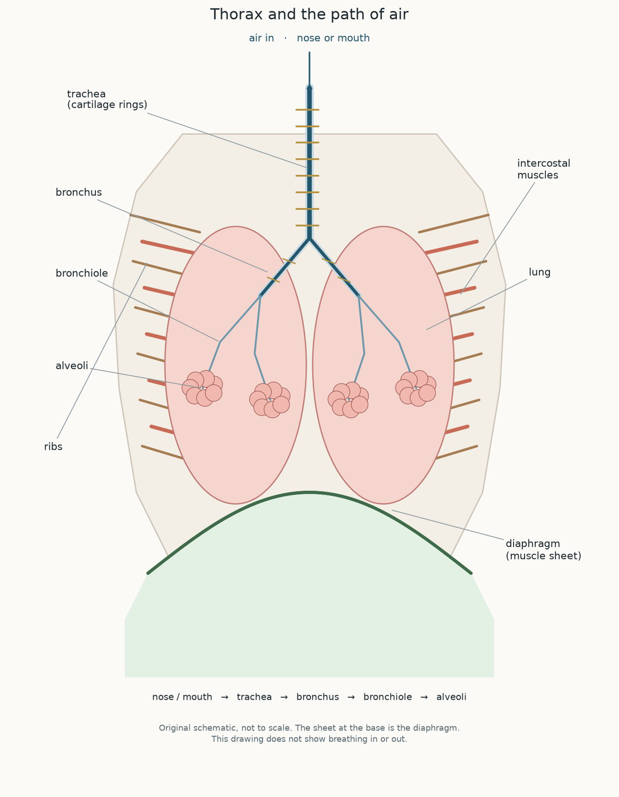
Diagram to draw: a thorax cross-section. Label the ribs, intercostal muscles, lungs, trachea with cartilage rings, bronchus, bronchiole, alveoli and diaphragm, with an arrow tracing the path of air. 5 quick recall questions
Path of air?
What keeps the trachea open?
What is the diaphragm?
What do the intercostals do?
Why do big animals need lungs?
Exam-style questions
Q1 (2 marks). Give the function of (i) the cartilage rings, (ii) the ribs.
(i) keep the trachea open / stop it collapsing (1)
(ii) protect the lungs / heart (1)
Q2 (2 marks). Explain why large organisms need a gas exchange system.
small surface area to volume ratio (1)
diffusion distance too long / diffusion too slow to reach inner cells (1)
Flashcards
Most common way students lose marks on this: giving the intercostals a protective role, or swapping bronchus and bronchiole.
A sheet of muscle forming the floor of the thorax.
They move the ribcage.
Small SA:V and a long diffusion distance.
Animal physiology: gas exchange
Ventilation
📅 Fri 9 Oct 2026Lesson 12 of 14🃏 8 flashcards
4BI1 2.47 – Understand the role of the intercostal muscles and the diaphragm in ventilation
🟩Breathing in (inspiration):
Diaphragm contracts and flattens.
External intercostals contract → ribs move up and out.
Thorax volume increases.
Pressure decreases below atmospheric.
Air flows in.
🟩Quiet breathing out:
Diaphragm and external intercostals relax. The diaphragm returns to a dome.
Ribs move down and in.
Volume decreases.
Pressure increases above atmospheric.
Air flows out.
🟩Forced breathing out: the internal intercostals contract → ribs pulled down and in.
Breathing in
Quiet out
Forced out
Diaphragm
contracts, fal ttens
relaxes, domes
relaxes
Intercostals
external contract
relax
internal contract
Ribs
up and out
down and in
down and in
Volume / pressure
↑ / ↓
↓ / ↑
↓ / ↑
🟨Always write the full chain: muscles → volume → pressure (vs atmospheric) → air flow.
🟨Air moves from high to low pressure. Lungs never suck air in.
🟥Slip (9 Oct): said the diaphragm relaxes and becomes flat, and the ribs go "down and out".
🟥Slip (9 Oct): said quiet breathing out needs the diaphragm to contract.
🟥Slip (9 Oct): named the external intercostals for forced breathing out.
🟥Slip (18 Oct review): said "volume above atmospheric". It's pressure that's compared with atmospheric.
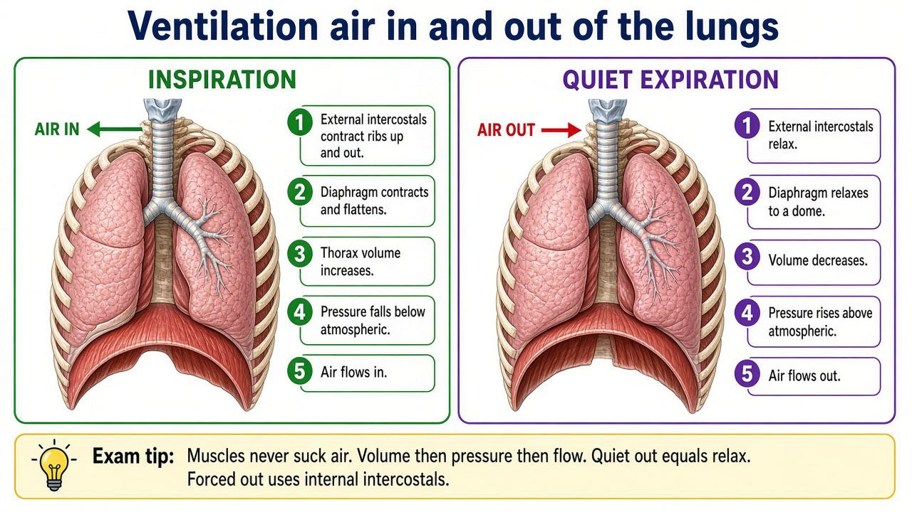
Diagram to draw: two thorax diagrams side by side. Breathing in: flat diaphragm, ribs up and out. Quiet breathing out: domed diaphragm, ribs down and in. Number the 5 steps on each.
5 quick recall questions
Diaphragm in breathing in?
Muscles in quiet breathing out?
Volume up, so pressure ___?
Which intercostals work in forced breathing out?
Why is "the lungs suck air in" wrong?
Exam-style questions
Q1 (4 marks). Explain how air is drawn into the lungs.
diaphragm contracts / flattens (1)
external intercostals contract, ribs up and out (1)
volume of the thorax increases (1)
pressure decreases (below atmospheric), so air flows in (1)
Q2 (2 marks). Describe the role of the internal intercostal muscles.
contract during forced exhalation (1)
pull the ribs down and in (1)
Flashcards
Most common way students lose marks on this: skipping volume or pressure, or saying quiet exhalation uses contraction.
Recall answers
It contracts and flattens.
They relax.
Pressure goes down.
The internal intercostals.
Muscles change the volume and the pressure; air flows down the pressure gradient.
Animal physiology: gas exchange
Alveoli adaptations
📅 Mon 12 Oct 2026Lesson 13 of 14🃏 8 flashcards
4BI1 2.48 – Explain how alveoli are adapted for gas exchange by diffusion between air in the lungs and blood in capillaries
🟩Rate of diffusion ↑ with a larger surface area, a shorter diffusion distance, and a steeper concentration gradient.
Adaptation
Factor improved
millions of alveoli
large surface area
walls one cell thick, capillaries pressed close
short diffusion distance
good blood supply (carries O₂ away, brings CO₂)
steep concentration gradient
ventilation (keeps alveolar O₂ high, CO₂ low)
steep concentration gradient
moist lining
gases dissolve before they diffuse
🟨Link each adaptation to the factor it improves. Say "large surface area", not SA:V.
🟥Slip (12 Oct): used SA:V for the alveoli.
🟥Slip (12 Oct): couldn't say why the lining is moist.
🟥Slip (12 Oct): said blood has "very little oxygen". Say it has a lower O₂ concentration than alveolar air.
🟪Link: villi (Fri 23 Oct) use the same three factors.
Worked example (3/3, 12 Oct): large surface area from millions of alveoli; thin walls give a short distance; a good blood supply keeps the gradient steep.
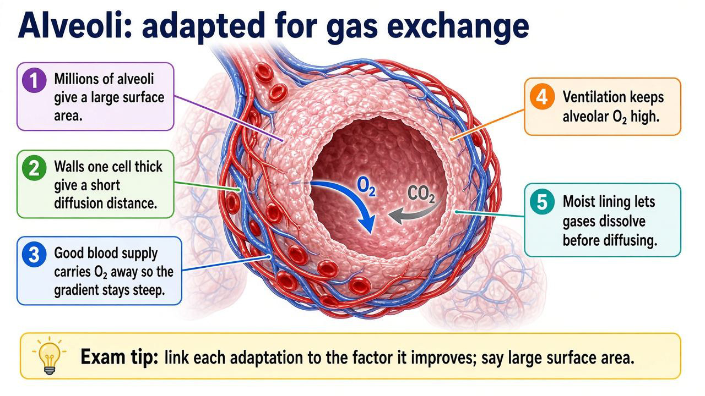
Diagram to draw: one alveolus with a capillary wrapped around it, an O₂ arrow in and a CO₂ arrow out. Label adaptations 1–5.
5 quick recall questions
Three factors affecting the rate of diffusion?
How does wall thickness help?
Why does blood flow matter?
Why is the lining moist?
What gives the large surface area?
Exam-style questions
Q1 (3 marks). Explain how alveoli are adapted for gas exchange.
millions of alveoli → large surface area (1)
walls one cell thick → short diffusion distance (1)
good blood supply / ventilation → steep concentration gradient (1)
Q2 (2 marks). Explain why blood flow through the lung capillaries increases the rate of oxygen uptake.
oxygenated blood is carried away / replaced by deoxygenated blood (1)
keeps the concentration gradient steep (1)
Flashcards
Most common way students lose marks on this: listing features without naming the factor each improves.
🟩Emphysema: alveolar walls break down → less surface area for gas exchange → breathless.
🟩Bronchitis: inflamed airways + mucus.
🟩Also lung cancer and coronary heart disease (CHD).
🟩Pregnancy: CO → less O₂ reaches the foetus → foetal cells respire less → lower birth mass.
🟨Breathlessness answers: link emphysema (less SA) and/or CO (less O₂ to muscles).
🟨Data questions: mention a large sample size, and describe every trend (including any fall).
🟥Slip (16 Oct): didn't know what tar does to cilia.
🟥Slip (16 Oct): gave only emphysema for breathlessness, and missed CO binding to haemoglobin.
🟥Slip (21 Oct SME): no biology explaining the link, and didn't mention the large sample size.
🟥Slip (21 Oct SME): said only "increasing", and missed the fall in 2016.
🟥Slip (21 Oct SME): repeated the carcinogens point as lung cancer.
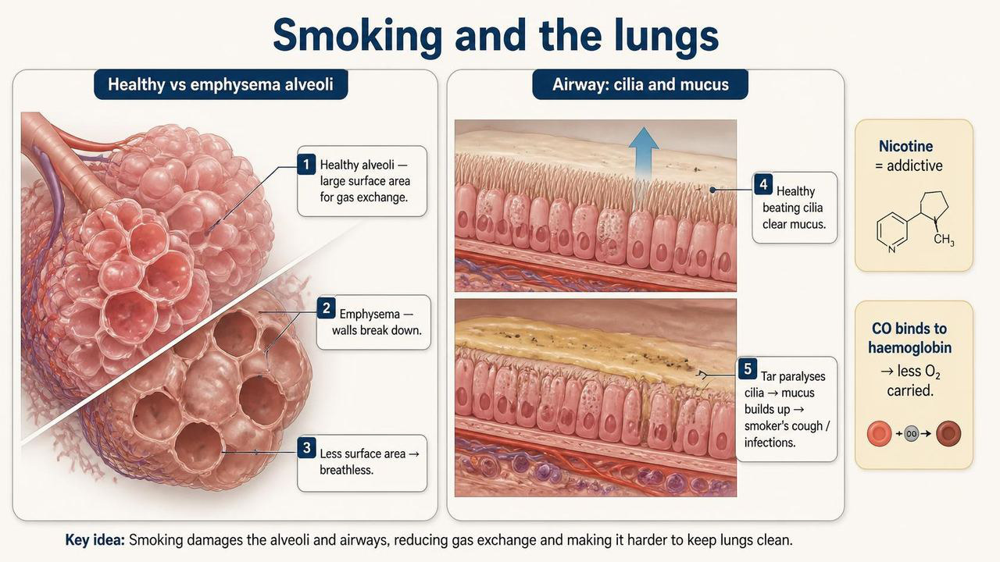
Diagram to draw: healthy vs emphysema alveoli side by side, plus an airway with cilia and mucus (healthy vs paralysed).
5 quick recall questions
Which substance is addictive?
How does CO reduce O₂ delivery?
What does tar do to cilia?
How does emphysema cause breathlessness?
Name two other smoking diseases.
Exam-style questions
Q1 (3 marks). Explain why smokers often become breathless during exercise.
carbon monoxide binds to haemoglobin (1)
less oxygen carried to muscles / less aerobic respiration (1)
emphysema → alveoli break down → smaller surface area for gas exchange (1)
Q2 (2 marks). Explain why babies of mothers who smoke may have a lower birth mass.
CO → less oxygen reaches the foetus (1)
less respiration / less energy for growth (1)
Flashcards
Most common way students lose marks on this: giving only emphysema for breathlessness and missing CO.
Recall answers
Nicotine.
It binds to haemoglobin, so less O₂ is carried.
It paralyses or destroys them, so mucus builds up.
The alveoli break down, so there's less surface area for gas exchange.
Bronchitis, lung cancer, CHD (any two).
Molecules: water
Hydrogen bonding, properties and water as a habitat
📅 Tue 20 Oct 2026Lesson 1 of 1🃏 8 flashcards
Covers L1 Mon 19 Oct + L2 Tue 20 Oct 2026.
Exit check: 2.5/4 (20 Oct 2026). SME easy: 17/20 (21 Oct 2026). The IB SMEs are now paused until the whole textbook is done.
A1.1.1 – Water as the medium for life (SL + HL)
🟩The first cells originated in water, and water remains the medium in which most processes of life occur.
A1.1.2 – Hydrogen bonds as a consequence of the polar covalent bonds within water molecules (SL + HL)
🟦Polar covalent bond: electrons are shared unequally. O pulls the electrons harder, so O = δ− and each H = δ+.
🟦Hydrogen bond: a weak attraction between molecules, from the δ+ H of one water molecule to the δ− O of another.
🟩Water is a bent (V-shaped) molecule → one δ− end and one δ+ end → polar.
🟨Covalent bonds are inside a molecule. Hydrogen bonds are between molecules.
🟨When you draw an H-bond, use a dashed line from H to O. Never H–H, never O–O.
🟥Slip (20 Oct): said O is δ+. Electrons are negative, so the atom that pulls them is δ−.
🟥Slip (20 Oct): called the bond between molecules "covalent".
🟥Slip (21 Oct SME): picked the O···O dashed diagram instead of H···O.
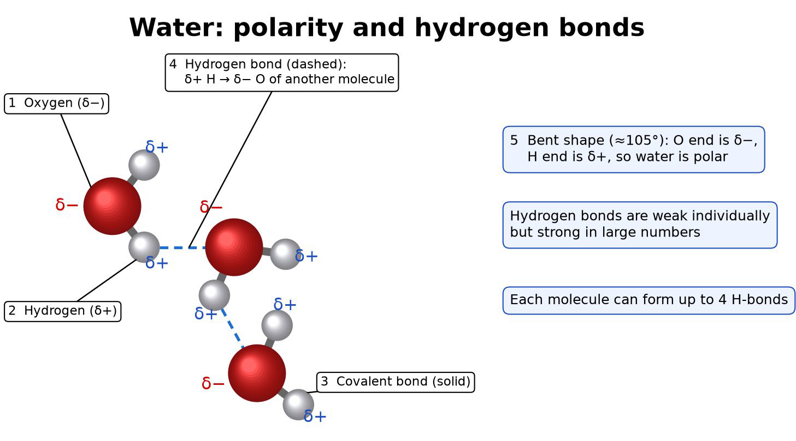
A1.1.3 – Cohesion of water molecules due to hydrogen bonding and consequences for organisms (SL + HL)
A1.1.4 – Adhesion of water to materials that are polar or charged and impacts for organisms (SL + HL)
🟦Cohesion: water–water attraction by hydrogen bonds.
🟦Adhesion: water attracted to other polar or charged surfaces (e.g. cellulose).
🟩Cohesion → a continuous column of water is pulled up the xylem under tension. It also gives surface tension (pond skaters).
🟩Adhesion → capillary action in soil and in plant cell walls.
🟨Adhesion needs a polar surface. Fats are hydrophobic, so they're never the example.
🟥Slip (20 Oct): said adhesion is "water–fat".
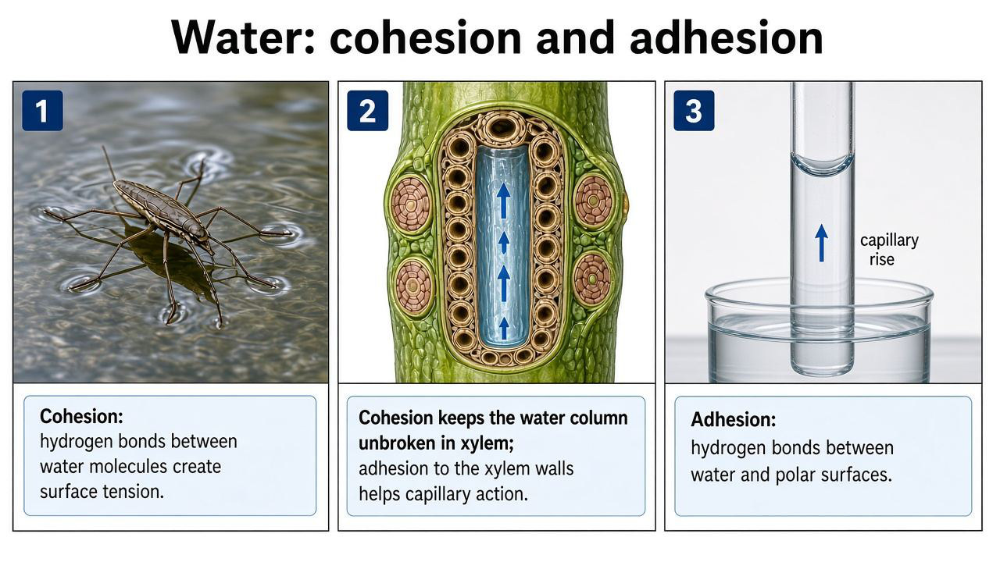
A1.1.5 – Solvent properties of water linked to its role as a medium for metabolism and for transport in plants and animals (SL + HL)
🟦Hydrophilic: polar or charged, so it dissolves in water. Hydrophobic: non-polar, so it doesn't.
🟩Glucose (polar, hydrophilic) → dissolves in plasma.
🟩Fats / cholesterol (non-polar, hydrophobic) → carried in lipoproteins.
🟨The guide also wants: most enzymes catalyse reactions in aqueous solution, and some molecules work because they are hydrophobic and insoluble.
🟨Transport answers: name dissolved solutes (glucose, amino acids, salts). Don't use O₂ gas as the example.
🟥Slip (20 Oct): named nitrogen, then water, as a plasma solute.
🟥Slip (21 Oct SME): gave oxygen as the transported metabolite, and missed polarity and cohesion / adhesion (4/7 on that part).
A1.1.6 – Physical properties of water and the consequences for animals in aquatic habitats (SL + HL)
Property
Water vs air
Example
So what
Buoyancy (density)
much denser
whale
less skeletal support needed → can grow huge
Viscosity
about 55× air
black- throated loon
streamlined → less drag, less energy
Thermal conductivity
about 24× air
ringed seal
blubber insulates → less heat loss
high
lake vs air
Specific heat capacity
lots of energy to break H-bonds before the temperature rises → stable temperature
🟩High specific heat capacity: lots of energy is needed to break hydrogen bonds before the temperature rises → water temperatures stay stable.
🟨The guide lists exactly 4 properties for A1.1.6: buoyancy, viscosity, thermal conductivity, specific heat capacity. Contrast each one with air. The guide's named examples are the black-throated loon (Gavia arctica) and the ringed seal (Pusa hispida), and either the common or the scientific name is accepted.
Beyond the spec: 🟩 High latent heat of vaporisation: sweat evaporating absorbs body heat → cooling. Latent heat and sweating aren't anywhere in the 2025 guide. CHECK: the "about 55×" and "about 24×" figures come from the lesson. The guide gives no numbers, so confirm them against the Pearson textbook.
Beyond the spec: the whale example (the guide names the loon and the ringed seal).
🟥Slip (20 Oct): forgot specific heat capacity on the lake question.
🟥Slip (20 Oct): first said sweat is "cooler than blood". It cools because evaporation (liquid → gas) absorbs heat from the skin.
AHL: A1.1.7 – Extraplanetary origin of water on Earth and reasons for its retention (HL only)
🟨The guide limits this to: origin = asteroids; retention = gravity and temperatures low enough to condense water.
🟩Water was delivered by asteroids.
🟩It was kept because:
gravity holds the atmosphere on.
temperatures were low enough for water to condense.
Beyond the spec: comets as a source, and the deuterium : hydrogen ratio evidence (both from the lesson). Write asteroids in the exam.
AHL: A1.1.8 – Relationship between the search for extraterrestrial life and the presence of water (HL only)
🟩Goldilocks zone: the distance from a star where temperatures allow liquid water. Too close and it evaporates. Too far and it freezes. The search for life looks for planets in this zone.
CHECK A1.1.8 only came up inside the origin-of-water lesson. It hasn't had its own lesson.
🟥Slip (20 Oct): needed a hint for gravity, and said the distance only stops evaporation. He missed that too far = frozen.
Diagram to draw: two water molecules with δ+ / δ− labels and a dashed H-bond from H of one to O of the other. Then a xylem panel showing cohesion (water–water) and adhesion (water–cellulose wall).
5 quick recall questions
Bond inside vs between water molecules?
Which atom is δ−?
Cohesion vs adhesion, with an example of each?
Why does glucose dissolve in plasma but cholesterol doesn't?
Why can whales grow so large?
Exam-style questions
Q1 (3 marks). Explain how the properties of water allow it to move up the xylem. a. water molecules are polar / form hydrogen bonds; b. cohesion between water molecules forms a continuous column (under tension); c. adhesion of water to the (cellulose / lignin) walls of the xylem; d. capillary action helps draw water up;
Award any three. Accept "H-bonds" for hydrogen bonds.
Q2 (4 marks). Outline how the physical properties of water affect animals in aquatic habitats. a. buoyancy supports body weight, so less need for a skeleton / animals can grow larger; b. high viscosity increases drag, so a streamlined body shape, e.g. black-throated loon; c. high thermal conductivity means heat is lost quickly, so insulation / blubber, e.g. ringed seal; d. high specific heat capacity gives a stable water temperature / a stable habitat;
Award any four. Each point needs a property and its consequence.
Flashcards
Most common way students lose marks on this: drawing or choosing an O–O "hydrogen bond", or naming a property without its consequence for the organism.
Recall answers
Covalent inside, hydrogen bonds between.
Oxygen.
Cohesion = water– water (xylem column); adhesion = water–polar surface, e.g. cellulose (capillary action).
Glucose is polar/hydrophilic; cholesterol is non-polar/hydrophobic, so it travels in lipoproteins.
Water's buoyancy supports their weight.
Language A · R1
Skim, scan, explicit vs implicit
📅 Mon 21 Sep 2026Lesson 1 of 31🃏 8 flashcards
Spec: 4EA1 AO1 – Read and understand a variety of texts, selecting and interpreting information, ideas and perspectives. (Paper 1 Section A, short questions.)
4EA1 AO1 · Skim and scan
🟦Skim = reading quickly for the gist (the overall idea).
🟦Scan = hunting for one fact.
🟩Skim first to know what the text is about, then scan for the line the question points to.
4EA1 AO1 · Explicit vs implicit
Explicit
Implicit
Meaning
stated in the text
worked out from a clue
Example
the table was laid for two at seven → time is stated
(clue → inference)
So what
selecting information
interpreting information
🟨selecting = finding explicit facts; interpreting = inferring implicit meaning (both are in the AO1 wording).
4EA1 AO1 · Inference
🟦Inference = a meaning worked out from a clue in the text.
🟩Clue (quote) → what it suggests → so what.
🟥An inference with no quote is a guess.
🟥Do not quote a fact the text never states (e.g. inventing that the sun came out).
Why: an inference needs a quote. It is not a guess.
Worked example
🟩Question: the table was laid for two at seven. Explicit or implicit?
🟩Answer: explicit, because the time is stated.
🟥Wrong: calling it a guess, or inventing extra details.
🟪Link: Literature reading toolkit (Mon 28 Sep) uses the same skills on prose.
Recall (answers at the bottom)
What is skim?
What is scan?
What is the difference between explicit and implicit?
What does an inference need?
Which two AO1 words match explicit and implicit?
Exam-style questions (own extract)
Extract: "Mia checked the clock again. The kettle had boiled twice, but she had not made any tea."
From the extract, give one thing Mia does. (1 mark)
What can you infer about how Mia is feeling? Use a quotation. (2 marks)
Mark scheme
🟨Q1: 1 mark for either: checks the clock / boils the kettle (accept "the kettle had boiled"). No mark for feelings.
🟨Q2: 1 mark for a valid inference (anxious / waiting / distracted / restless), 1 mark for a supporting quote ("checked the clock again" / "had not made any tea"). Inference with no quote = max 1.
Flashcards
🟥Most common way students lose marks on this: quoting or "inferring" something the text never says.
Recall answers
Reading for the gist.
Hunting one fact.
Explicit is stated; implicit is worked out from a clue.
A quote.
Selecting (explicit), interpreting (implicit).
Language A · R1
PEE and the effects bank
📅 Sat 26 Sep 2026Lesson 2 of 31🃏 8 flashcards
Spec: 4EA1 AO2 – Understand and analyse how writers use linguistic and structural devices to achieve their effects. (Paper 1 Section A Q4.)
Taught across Wed 23 Sep and Sat 26 Sep.
4EA1 AO2 · Point, Quote, Effect
🟦PEE = Point → exact Quote → Effect on the reader.
🟩The writer chooses the words → so the reader feels the effect.
🟥Naming a technique with no effect scores nothing.
🟥Never write "makes the author feel", and never "makes it seems".
🟨Copy the quote letter for letter, including numbers as written. Mark schemes reward references that are appropriate and relevant to the points being made.
Why: the writer chooses the words. The reader feels the effect.
Worked example
🟩Question: effect of the metaphor "swallowed" in a flood report.
🟩Answer: the water seems to eat the street, so the reader feels the town is helpless.
🟥Wrong: saying the author is sad, or quoting a word that is not in the text.
Redraw
🟩Three boxes: Point → Quote → Effect on the reader.
4EA1 AO2 · Effects bank
🟥The short-sentence row on this bank uses the older wording. The later rule is that a short sentence stops the pace.
🟪Link: Literature effects flash (Thu 1 Oct) reuses this bank.
Recall (answers at the bottom)
What are the three parts of PEE, in order?
Who feels the effect?
What scores nothing?
How must a quote be copied?
What does a short sentence do to the pace?
Exam-style questions (own extract)
Extract: "The flood swallowed the high street. Shops vanished under brown water."
Identify one word the writer uses to show the flood's power. (1 mark)
Explain how the writer uses language to show the power of the flood. Use a quotation. (4 marks)
Mark scheme
🟨Q1: "swallowed" or "vanished" (1).
🟨Q2: 1 point about power/danger; 1 exact quote; 1 explanation of the word (e.g. "swallowed" = metaphor, the water eats the street); 1 effect on the reader (helpless/shocked). Some understanding … including use of vocabulary = L2; clear explanation of effect needed for the top.
Flashcards
🟥Most common way students lose marks on this: spotting a technique but never saying its effect on the reader.
Recall answers
Point, exact quote, effect on the reader.
The reader.
Naming a technique with no effect.
Letter for letter, including numbers as written.
It stops the pace.
Language A · R2
Connotations
📅 Wed 30 Sep 2026Lesson 3 of 31🃏 8 flashcards
Spec: 4EA1 AO2 – Understand and analyse how writers use linguistic and structural devices to achieve their effects. Word level (use of vocabulary).
4EA1 AO2 · Denotation and connotation
🟦Denotation = the dictionary meaning.
🟦Connotation = the extra feeling or idea a word carries.
🟩Chain: word class → exact short quote → two connotations → effect on the reader.
🟨A short quote of the key word beats a long one. Do not invent words inside quote marks.
🟨L2 already asks for comment on use of vocabulary; connotations are how you do it.
4EA1 AO2 · Spectrum
🟩Words with the same denotation sit on a spectrum (gathering vs mob).
🟩Redraw: a line from positive to negative. Labels: slender, slim, thin, skinny, scrawny.
Worked example
🟩Question: why "throne", not "bed", for a thin mattress?
🟩Answer: "throne" suggests luxury, so the reader sees how exhausted he is.
🟥Wrong: giving only the dictionary meaning (a chair for a king).
4EA1 AO2 · Simile vs metaphor
🟦Simile = a comparison using like or as.
🟦Metaphor = says something is something else.
Why: "crouched" and "prowled" are not just actions. They make a building or the wind seem like an animal, so the feeling changes.
🟥Prepositions: disappointed in/with, hurt by, zoom in on.
Recall (answers at the bottom) — 1 and 4 retry on another day
What is a connotation?
Fill: disappointed ___ someone, hurt ___ someone, zoom in ___ a word.
Who feels the effect, the writer or the reader?
Is "like tired animals" a simile or a metaphor?
Why is "throne" stronger than "bed" for a thin mattress?
Exam-style questions (own extract)
Extract: "A mob pushed against the gates. The building crouched in the dark."
Give one connotation of "mob". (1 mark)
Explain how the writer uses language to create a threatening mood. Use two quotations. (4 marks)
Mark scheme
🟨Q1: disorder / violence / anger / out of control (1). Not "a group of people" (denotation).
🟨Q2: up to 2 marks per quote: exact quote + connotation linked to threat (e.g. "mob" = violent crowd; "crouched" = personification, building like an animal about to pounce → reader uneasy).
Flashcards
🟥Most common way students lose marks on this: giving the dictionary meaning instead of the connotation.
Recall answers
The extra feeling, not the definition.
in/with, by, on.
The reader.
Simile.
Luxury and comfort show how exhausted he is.
Language A · R2
Sentence types and structure
📅 Tue 6 Oct 2026Lesson 4 of 31🃏 8 flashcards
Spec: 4EA1 AO2 – Understand and analyse how writers use linguistic and structural devices to achieve their effects. Mark-scheme wording: use of vocabulary and sentence structure. Not his exam answer.
Closest reading: no textbook page taught; original mini extracts only (Leo on the bus, the café). Closest = R2 lesson file part 1 Q5 structure preview.
4EA1 AO2 · Simple
🟦Simple sentence = one main clause.
🟩A short simple sentence stops the pace.
4EA1 AO2 · Compound
🟦Compound sentence = two main clauses joined by and / but / so.
🟩"But" sets up a contrast.
4EA1 AO2 · Complex
🟦Complex sentence = main clause + a part that cannot stand alone (when / because / although).
🟩"Although the bus was warm, Leo shivered." → warm is set up → shivered goes against it → reader wonders if he is scared or sick.
Why: compound and complex are easy to mix up. If one part cannot stand alone (because / although / when), it is complex; two full clauses with and / but / so is compound.
Type
Rule
Example
Efefct
Simple
1 main clause
"Nobody spoke."
stops the pace
Compound
2 main clauses + and/ but/so
"The phone buzzed, so Ana grabbed it."
links / contrasts equal ideas
Complex
main + because/when/ although
"Although the bus was warm, Leo shivered."
sets up then twists
4EA1 AO2 · Structure (focus shift)
🟦Structure = the order of the whole text: opening, where the focus shifts, ending.
🟩Café: busy and cosy → "Then the door opened." → "Nobody spoke." → mood shifts to tense.
🟨Command word: Analyse / Explain (how the sentence or structure affects the reader).
🟨Name the precise feeling. Gloomy = sad and dark; a sudden silence where everyone waits = tense.
Worked example
🟩Question: how does "Nobody spoke." affect the reader?
🟩Answer: the short simple sentence "Nobody spoke." makes the reader feel tense because it stops the pace without explanation, so we want to know who came in.
🟥Wrong: "it makes the author feel tense" (the reader feels it); "gloomy" (wrong mood word).
Redraw
🟩Three rows: type | rule | example | effect. Then the café focus-shift arrow.
🟨R2 easy SME (original set, as Save My Exams has no tiered R2 questions): 4/4 (6 Oct 2026). Q4 quote copied exactly. Stretch: explain why "Too silent." feels wrong (repeated fragment sounds unnatural).
Recall (answers at the bottom) — 4 retry on another day
What is a simple sentence, and what does a short one do to pace?
Compound or complex: "The phone buzzed, so Ana grabbed it."?
Compound or complex: "Because the road was icy, the bus crawled."?
Why does "Although the bus was warm, Leo shivered." make the reader wonder?
Café extract: what is the better mood word than gloomy after "Nobody spoke."?
Exam-style questions (own extract)
Extract: "The café hummed with chatter and the clink of cups. Then the door opened. Nobody spoke."
Identify the sentence type of "Nobody spoke." (1 mark)
Explain how the writer uses structure to change the mood. (4 marks)
Mark scheme
🟨Q1: simple (1).
🟨Q2: opening mood busy/cosy with a quote (1); shift at "Then the door opened." (1); short simple sentence "Nobody spoke." stops the pace (1); mood becomes tense / reader wants to know who came in (1). Clear explanation … of sentence structure = top.
Flashcards
🟥Most common way students lose marks on this: mixing up compound and complex.
Recall answers
One main clause; it stops the pace.
Compound.
Complex.
Warm is set up, then he shivers anyway, so maybe he is scared or sick.
Tense.
Language A · R2
Medium practice (sentence types and structure)
📅 Wed 7 Oct 2026Lesson 5 of 31🃏 8 flashcards
Spec: 4EA1 AO2 – Understand and analyse how writers use linguistic and structural devices to achieve their effects. Original medium set (Save My Exams has no tiered R2 questions). Not his exam answer.
Closest reading: no textbook page; original Maya extract. Closest = R2 lesson file.
4EA1 AO2 · Compound-complex
🟦Compound-complex = and / but joining main clauses plus a because / when / although part.
🟩A short opener ("Maya ran.") drops the reader into action before we know why.
Why: compound vs compound-complex. If there is also a part that cannot stand alone, it is not just compound.
4EA1 AO2 · Focus shift
🟦Focus shift = where the "camera" moves to something new.
🟩Maya: her body (lungs, legs) → "Then she saw the gate." → mood: rushing → stuck.
🟩The writer chooses what to leave out → the reader feels the effect.
🟨Find the shift by the word that turns the camera, often "Then", not the line that only explains why.
Worked example
🟩Question: where does the focus shift in the Maya extract?
🟩Answer: at "Then she saw the gate." Her body is replaced by the locked gate, so rushing becomes stuck.
🟥Wrong: at "the bell would ring any second" (that explains why she runs; the camera has not moved).
🟥Slips: "makes makes" (again); "the author" for who leaves things out.
Recall (answers at the bottom) — 1 and 3 retry on another day
What do you call a compound sentence that also has a because part?
What does a short opener like "Maya ran." do?
Which word often signals a focus shift?
Who leaves details out, and who feels it?
Mood before and after the Maya shift?
Exam-style questions (own extract)
Extract: "Lena ran and her bag bounced because she was late. Then she saw the bus pull away."
Identify the type of the first sentence. (1 mark)
Explain where the focus shifts and how it changes the mood. (3 marks)
Mark scheme
🟨Q1: compound-complex (1). "Compound" alone = 0.
🟨Q2: shift at "Then she saw the bus pull away." (1); camera moves from her running body to the bus (1); mood rushing → defeated/stuck (1).
Flashcards
🟥Most common way students lose marks on this: picking a line that explains instead of the line where the camera moves.
Recall answers
Compound-complex.
Drops us into action before we know why.
Then.
The writer leaves it out; the reader feels it.
Rushing → stuck.
English
Literature · reading toolkit
📅 Mon 28 Sep 2026Lesson 6 of 31🃏 8 flashcards
Spec: 4ET1 AO2 – Analyse the language, form and structure used by a writer to create meanings and effects. (Prose extract practice; same reading skills as 4EA1 AO1.)
4ET1 AO2 · Skim, scan, explicit, implicit, infer
🟪Same skim, scan, explicit, implicit and infer as Language A (Mon 21 Sep), now on a prose extract.
4ET1 AO2 · Pathetic fallacy
🟦Pathetic fallacy = weather or setting that mirrors a character's feeling.
🟩Rain stops → curtains stay shut → the feeling has not passed.
🟥Disappointed in someone, hurt by something. Only quote words that are in the text.
Why: the weather can change while the feeling stays. The shut curtains are the clue.
Worked example
🟩Question: curtains stay shut after the rain stops. What can the reader infer?
🟩Answer: she will not let the better weather in.
🟥Wrong: claiming the sun came out, or quoting "storm" if it is not there.
Extract: "Grey clouds sat low over the village. Anna stared at the empty chair."
Name the technique in the first sentence. (1 mark)
Explain how the setting reflects Anna's feelings. (3 marks)
Mark scheme
🟨Q1: pathetic fallacy (1).
🟨Q2: quote "Grey clouds sat low" (1); grey/low = gloom, heaviness (1); mirrors her sadness/loss linked to "empty chair" (1). Links these to their effect on the reader for full marks.
Flashcards
🟥Most common way students lose marks on this: describing the weather without linking it to the character's feeling.
Recall answers
Weather or setting that mirrors a feeling.
She will not let the better weather in.
in, by.
Skim, scan, explicit, implicit, infer.
Words that are not in the text.
English
Literature · sentence types for effect
📅 Wed 30 Sep 2026Lesson 7 of 31🃏 8 flashcards
Spec: 4ET1 AO2 – Analyse the language, form and structure used by a writer to create meanings and effects.
4ET1 AO2 · Simple
🟦Simple sentence = one main clause (one idea).
🟩After longer sentences, a short one stops the pace.
🟥A short sentence does not speed the pace up.
Why: a short sentence does not speed the pace up. It stops it.
4ET1 AO2 · Compound
🟩"And" adds. "But" contrasts.
Worked example
🟩Question: label "The rain stopped, but she kept the curtains shut."
🟩Answer: compound, because "but" joins two equal ideas and shows contrast.
🟥Wrong: calling it complex.
4ET1 AO2 · Complex
🟩A when or because clause can show a cause or link two moments.
Redraw
🟩Three rows: simple / compound / complex, each with its joining word.
Recall (answers at the bottom) — 1 and 2 retry on another day
Is "The rain stopped, but she kept the curtains shut" compound or complex?
What does a short simple sentence do to the pace?
What does "but" do that "and" does not?
In "When Tom came in whistling, Mara scraped the plates", what does "when" link?
Which joining words make a sentence complex?
Exam-style questions (own extract)
Extract: "When Tom came in whistling, Mara scraped the plates. She said nothing."
Identify the sentence type of the first sentence. (1 mark)
Explain how the writer uses sentence structure to show tension. (3 marks)
Mark scheme
🟨Q1: complex (1).
🟨Q2: "when" links his cheerful arrival to her scraping (1); contrast whistling vs scraping (1); short simple "She said nothing." stops the pace / silence = tension (1).
Flashcards
🟥Most common way students lose marks on this: saying a short sentence speeds the pace up.
Recall answers
Compound.
It stops the pace.
Contrast.
His arrival to her scraping the dinner away.
when / because / although.
Literature · Reading Skills
Fiction methods
📅 Mon 5 Oct 2026Lesson 8 of 31🃏 8 flashcards
Spec: 4ET1 AO1 – Demonstrate a close knowledge and understanding of texts … (Paper 1 Section C, Of Mice and Men). CHECK: textbook calls this "Reading Skills — fiction methods"; method terms are AO2 language that supports AO1. Not his exam answer.
Closest reading: Of Mice and Men, Chapter 2 bunkhouse opening ("long, rectangular building").
4ET1 AO1 · Setting
🟦Setting = where and when, and the mood the place makes.
🟩Bunkhouse walls and floor = setting, not character.
4ET1 AO1 · Character
🟦Character (method) = what a person says or does that shows who they are.
🟩Lennie's "big paw" dabbling = character → big and childish.
Worked example
🟩Question: "dabbled his big paw" — which method, and what does it show?
🟩Answer: character. Big and childish (size + play).
🟥Wrong: narrative voice — nobody is "telling"; we are watching what he does.
Claim / evidence / why
🟩Claim: Steinbeck shows Lennie as childlike as well as large.
🟩Evidence: "big paw"; the water "arose in little splashes".
🟩Why: paw = animal/size → dabbling = play → the reader sees strength mixed with innocence.
4ET1 AO1 · Narrative voice
🟦Narrative voice = who tells the story, and how close we feel.
🟩Of Mice and Men is third person → we watch from outside.
🟩The river opening starts on place → we are watched into the story, not told by an "I".
🟨Command word: Identify (which method), then Explain (what it shows / effect on the reader).
🟥Do not call an action "narrative voice". Voice = who is telling; a character method = what someone does.
Why: mixing up character and narrative voice loses marks — if a body is acting, name character first.
Method
Question to ask
OMAM example
So what
Setting
Where/when? mood?
bunkhouse walls
place, not person
Character
What does someone say/do?
"big paw"
strong but childish
Narrative voice
Who tells it?
third person, river first
we watch from outside
Redraw
🟩Three boxes: Setting | Character | Narrative voice, with the OMAM tip line under them.
Homework (student to finish): two method → effect lines (bunkhouse = setting; paw = character).
Recall (answers at the bottom) — 4 and 5 retry on another day
Name the three fiction methods from §1.3.
Is Of Mice and Men first person or third person?
Bunkhouse walls whitewashed — setting or character?
What method is Lennie's "big paw", and what does it show?
Why is "narrative voice" wrong for the paw line?
Exam-style questions
Identify the fiction method in "dabbled his big paw" and explain what it shows about Lennie. (3 marks, own short question)
Explore how Steinbeck presents Lennie in Of Mice and Men. You must refer to the context of the novel in your answer. (40 marks — Section C style, CHECK: exact wording varies by paper)
Mark scheme
🟨Q1: character (1); "paw" = animal/size (1); "dabbled" = play → strong but innocent (1).
🟨Q2 indicative (AO1/AO4): Lennie's strength vs childlike innocence; his dependence on George; context of itinerant ranch workers. Levels: L3 Sound knowledge and understanding of the text … clearly relevant examples; L4 Thorough … sustained critical style; L5 Assured … perceptive critical style. CHECK: AO4 context points were not taught in this lesson.
Flashcards
🟥Most common way students lose marks on this: calling a character's action "narrative voice".
Recall answers
Setting, character, narrative voice.
Third person.
Setting.
Character; big and childish.
Nobody is telling; we are watching what he does.
English
Literature · effects flash and Of Mice and Men cards
📅 Thu 1 Oct 2026Lesson 9 of 31🃏 8 flashcards
Spec: 4ET1 AO1 – Demonstrate a close knowledge and understanding of texts … (Paper 1 Section C; claim + evidence).
Closest reading: Of Mice and Men — bunkhouse, Slim's entrance, Candy offering his savings.
4ET1 AO2 · Effects flash
🟩Short sentence stops the pace. "But" contrasts. The reader feels the effect. Disappointed in, hurt by.
🟪Link: effects bank (Sat 26 Sep).
4ET1 AO1 · Slim
🟩"prince" = reputation. Driving "twenty mules" = the skill that makes him able.
Why: prince is the reputation. The mule line is the skill.
Worked example
🟩Question: why is Slim powerful?
🟩Answer: he can drive twenty mules with one line, so he is the best at the job.
🟥Wrong: only quoting "prince" and not the skill.
4ET1 AO1 · Candy
🟩One hand → he can only swamp. "can" (be fired) → he fears being fired.
🟨Do not stop at a title word. Use the line that shows the work — clearly relevant examples.
Redraw
🟩Two cards: Who | Quote | Why.
Recall (answers at the bottom)
What does a short sentence do to the pace?
Why is Slim powerful, beyond the word "prince"?
What two things does Candy's one hand show?
Which word is Slim's reputation?
What does "but" do?
Exam-style questions
Using one short reference, explain why Slim is respected on the ranch. (3 marks, own)
Discuss the importance of Slim in Of Mice and Men. You must refer to the context of the novel in your answer. (40 marks — Section C style)
Mark scheme
🟨Q1: claim (respected/most able) (1); reference "twenty mules" or "prince" (1); explanation skill vs reputation (1).
🟨Q2 (Aug 2025 mark scheme indicative points, AO1): Slim is the skilled jerkline skinner; natural leader of the ranch whom everyone admires. Levels as in the header ladder.
Flashcards
🟥Most common way students lose marks on this: quoting a label ("prince") without the evidence that explains it.
Recall answers
Stops the pace.
He can drive twenty mules with one line, so he is the best at the job.
He can only swamp, and he fears being fired.
prince.
Contrasts.
English
Literature · SPaG redo and Of Mice and Men mini-PEE
📅 Sat 3 Oct 2026Lesson 10 of 31🃏 8 flashcards
Spec: 4ET1 AO1 – Demonstrate a close knowledge and understanding of texts … plus writing accuracy (🟪 4EA1 AO5 accurate spelling, grammar and punctuation; CHECK: whether 4ET1 awards separate SPaG marks). He asked to do the missed Friday block today, then the Saturday cards. Not his exam answer.
Closest reading: Of Mice and Men — bunkhouse, Slim's entrance, Candy offering his money. Not a textbook page.
4EA1 AO5 · SPaG
🟥A plural subject takes "show", not "shows".
🟥Spellings to lock: swamper, respected.
🟥"Most able", not "most powerful". "On the ranch", not "in".
4ET1 AO1 · Explain match
🟩Explain stays on the question. "Destructive" means wiped out, not hard to remember.
🟨A right quote with the wrong so-what still misses.
Why: the so-what has to match the question. A quote about Slim is not enough if the point still says powerful, or stops at prince.
Worked example
🟩Question: which Explain fits "swallowed" for a destructive flood?
🟩Answer: the water eats the street, so the town is wiped out.
🟥Wrong: the buildings are hard to remember.
4ET1 AO1 · Slim
🟩"twenty mules" = the skill. "prince" = only reputation.
4ET1 AO1 · Candy
🟩One hand → can only swamp. "can" = fired, and only when he can no longer swamp.
Redraw
🟩Two cards: Who | Quote | Why.
Recall (answers at the bottom) — 1, 3, 4 retry on another day
Does a plural subject take show or shows?
Spell the bunkhouse cleaning job, and the word for people looking up to Slim.
What does "destructive" mean when a flood has swallowed a street?
Is Slim the most powerful man in the ranch?
When does Candy fear being fired?
Exam-style questions
Correct the three errors: "The men in the bunkhouse shows that Slim is the most powerful in the ranch." (3 marks, own)
Explain how Steinbeck presents Candy's fear of the future, using one short reference. (4 marks, own)
Mark scheme
🟨Q1: shows → show (1); most powerful → most able/respected (1); in → on (1).
🟨Q2: claim (afraid of being useless/fired) (1); reference "can" or one hand (1); explain: can only swamp, so fired when he can no longer swamp (1); link to reader/insecurity (1).
Flashcards
🟥Most common way students lose marks on this: an Explain that doesn't answer the question asked.
Recall answers
Show.
Swamper. Respected.
Wiped out, not hard to remember.
No — most able, and "on" the ranch.
Only when he can no longer swamp.
English
Literature · effects and Of Mice and Men flash
📅 Sun 4 Oct 2026Lesson 11 of 31🃏 8 flashcards
Spec: 4ET1 AO2 (language for effect) + 4ET1 AO1 (Section C claim and evidence). Recap only, not a new textbook page. Not his exam answer.
Closest reading: Of Mice and Men — bunkhouse, Slim's entrance, Candy on being canned.
4ET1 AO2 · Short sentence (pace)
🟩A short simple sentence stops the pace.
4ET1 AO2 · Reader vs writer
🟩The reader feels the effect. The writer picks the word.
4ET1 AO1 · Slim
🟩Most able because he can drive twenty mules. "prince" = only reputation.
🟥The book writes "twenty", not 20.
4ET1 AO1 · Candy (when vs where)
🟩Candy is canned when he can no longer swamp. That is not "the start of chapter 2".
🟨If the question asks when something happens, do not answer with where the line sits in the chapter.
Why: "when" asks for the moment in the story. The start of chapter 2 only says where the line is printed.
Worked example
🟩Question: when will they can Candy?
🟩Answer: when he can no longer swamp.
🟥Wrong: the beginning of chapter 2.
Redraw
🟩A short line after a long one, labelled "stops the pace". No new picture this time. The effects bank and the connotation spectrum stay on the earlier lessons.
Recall (answers at the bottom) — 5 retry on another day
What does a short simple sentence do to the pace?
Who feels the effect, and who picks the word?
Why is Slim most able, and what is "prince"?
Does the book write 20 or twenty?
When is Candy canned?
Exam-style questions
"When will Candy be canned?" Answer in one sentence. (1 mark, own)
Explain why Slim is respected, using one short exact reference. (3 marks, own)
Mark scheme
🟨Q1: when he can no longer swamp (1). "Start of chapter 2" = 0.
🟥Most common way students lose marks on this: answering "when" with a page/chapter location.
Recall answers
Stops the pace.
Reader feels it; writer picks the word.
He can drive twenty mules; prince is reputation.
Twenty.
When he can no longer swamp.
Literature · Of Mice and Men
PEE rebuild (Explain)
📅 Wed 7 Oct 2026Lesson 12 of 31🃏 8 flashcards
Spec: 4ET1 AO1 – Demonstrate a close knowledge and understanding of texts … (Section C, point–evidence–explain on character). Carried over from Tue 6. Not his exam answer.
Closest reading: Of Mice and Men Chapter 1, river scene where Lennie drinks.
4ET1 AO1 · Explain drift
🟦Explain drift = the Explain wanders from the quoted words to something else.
🟩"Big" is flat; "strong but innocent" names Steinbeck's contrast.
🟨If the Explain could be written without the quote, it has drifted.
Why: repeating the point is not the same as explaining it. Each word needs a how.
4ET1 AO1 · Word-level Explain
🟩Give each key word its own job: "paw" → animal, not human; "dabbled" → playful, not serious.
🟩Link back to the point: together they show he is strong but innocent.
Worked example
🟩Question: fix the Explain for "dabbled his big paw" (point: Lennie is childlike).
🟩Answer: "Paw" makes Lennie sound like an animal rather than a human. "Dabbled" suggests he is playful and not serious. Together these words show the reader that Lennie is strong but innocent.
🟥Wrong: "This shows Lennie likes water and the river is a nice place to stay." (setting, not the words)
🟥Wrong: "The reader understands he is childlike and big." (only repeats the point)
Redraw
🟩PEE ladder: Point → Evidence → word 1 job → word 2 job → Link back.
🟥Slips: "suggest" for "suggests" (subject–verb). First rewrite repeated the point without word-level explanation.
Recall (answers at the bottom) — 1 and 5 retry on another day
What is Explain drift?
What does "paw" make Lennie sound like?
What kind of action is "dabbled"?
Better phrase than "big and childlike"?
Test for drift?
Exam-style questions
Rewrite this Explain so it stays on the quote: "'big paw' shows Lennie likes the river." (2 marks, own)
Explore how Steinbeck presents Lennie as both strong and innocent. You must refer to the context of the novel. (40 marks — Section C style)
Mark scheme
🟨Q1: word-level comment on "paw" (animal) or "big" (size) (1); link to strong/innocent (1). Setting comments = 0.
🟨Q2 indicative: animal imagery for Lennie; childlike actions; dependence on George; context of vulnerable workers. Levels: clearly relevant examples (L3) → fully relevant examples (L4).
Flashcards
🟥Most common way students lose marks on this: an Explain that talks about the story or setting instead of the quoted words.
Recall answers
The Explain wanders from the quote to something else.
An animal, not a human.
Playful, not serious.
Strong but innocent.
Could you write it without the quote? If yes, it drifted.
Literature · Writing Skills
A strong Point (partial)
📅 Wed 7 Oct 2026Lesson 13 of 31🃏 8 flashcards
Spec: 4ET1 AO1 – … maintaining a critical style … (opening a paragraph with a claim that answers the question). Not his exam answer. Partial: P done, E + Explain still open.
Closest reading: Of Mice and Men Chapter 1, George and Lennie by the river (George: "God, you're a lot of trouble").
4ET1 AO1 · Retell vs claim
🟦Retell = says what happens (plot summary).
🟦Claim = a point about the writer's choices that you can prove and someone could disagree with.
🟩Use "presents": Steinbeck presents George as careful but bad-tempered.
🟩A "but" claim sets up a contrast to prove in two halves.
🟥Steinbeck is one person → the verb takes -s (presents, represents, suggests).
🟨If your Point could be a plot summary line, it is a retell — no critical style.
Why: retell vs claim is easy to mix up. Ask whether someone could disagree. If they could, it is a claim.
Retell
Claim
Example
Lennie drinks from the river.
Steinbeck presents Lennie as strong but innocent.
Can you disagree?
No
Yes
Marks
little
shows critical style
Worked example
🟩Question: how does Steinbeck present Lennie in chapter 1?
🟩Strong: Steinbeck presents Lennie as strong but innocent.
🟥Wrong: Lennie drinks from the river.
Redraw
🟩Two boxes: Retell vs Claim, with one example each.
🟥Slips: "represent" for "represents" (third -s slip today, after "suggest").
Open: write E + Explain on "God, you're a lot of trouble," zooming in on "trouble".
Recall (answers at the bottom) — 1 and 3 retry on another day
What is the difference between a retell and a claim?
Which verb do exams usually use for "Steinbeck ___ George as…"?
Fix: "Steinbeck represent George as careful."
Quote for George being bad-tempered in chapter 1?
What does a "but" claim set up?
Exam-style questions
Turn this retell into a claim: "George tells Lennie off by the river." (2 marks, own)
Write the opening Point only for: "How does Steinbeck present George in Of Mice and Men?" (2 marks, own)
Mark scheme
🟨Q1: writer + verb (Steinbeck presents) (1); a quality that can be argued (impatient / bad-tempered) (1).
🟥Most common way students lose marks on this: opening with a retell instead of an arguable claim.
Recall answers
A retell says what happens; a claim is a point you can prove.
Presents.
Steinbeck represents (or presents) George as careful.
"God, you're a lot of trouble".
A contrast to prove in two halves.
Literature · Writing Skills
Evidence and Explain
📅 Thu 8 Oct 2026Lesson 14 of 31🃏 8 flashcards
Spec: 4ET1 AO1 – Demonstrate a close knowledge and understanding of texts … (finish the Point from Wed 7 with evidence and explain). Not his exam answer. Closest reading: Of Mice and Men Chapter 1, George by the river.
4ET1 AO1 · Evidence + Explain ("trouble")
🟩Quote: "God, you're a lot of trouble".
🟩"trouble" → George is impatient and annoyed by Lennie.
🟥Do not add "not very intelligent". The word only means a burden.
🟨If a word means "burden", do not stretch it to "stupid".
Why: an extra idea that the quote cannot prove is still Explain drift.
Worked example
🟩Question: what does "trouble" show?
🟩Answer: "Trouble" makes the reader feel that George is impatient and annoyed by Lennie.
🟥Wrong: George thinks Lennie is not very intelligent (not in the word).
🟥Wrong: "George is thinks" (drop "is").
🟥Slips: "is thinks"; "not very intelligent" added, then cut when prompted.
Recall (answers at the bottom) — 2 retry on another day
What does "trouble" show about George?
Why is "not very intelligent" wrong here?
Fix "George is thinks".
What is it called when the Explain adds an idea the quote can't prove?
What does "trouble" mean, in one word?
Exam-style questions
Explain what "trouble" suggests about George's feelings. (2 marks, own)
Find the drift: "'trouble' shows George thinks Lennie is stupid and the ranch is dangerous." (2 marks, own)
Mark scheme
🟨Q1: impatient / annoyed / frustrated (1); because Lennie is a burden (1).
🟨Q2: "stupid" not in the word (1); "ranch is dangerous" not in the quote (1).
Flashcards
🟥Most common way students lose marks on this: stretching a word to mean something it doesn't.
Recall answers
He is impatient and annoyed by Lennie.
The word only means a burden.
George thinks.
Explain drift.
Burden.
English
Literature · light retrieval
📅 Thu 8 Oct 2026Lesson 15 of 31🃏 8 flashcards
Spec: 4ET1 AO1 recap of §1.3 fiction methods, Explain drift, and the George "trouble" line. Not his exam answer.
Closest reading: Of Mice and Men Chapter 1 river scene and Chapter 2 bunkhouse opening.
4ET1 AO1 · Retrieval (cover and recall)
🟦The three methods are setting, character and narrative voice.
🟩Of Mice and Men is third person.
🟩Whitewashed bunkhouse walls = setting.
🟩"big paw" = character: animal-like and large, plus playful → strong but innocent.
🟦Explain drift = the Explain says something the quote never said. • 🟩 "trouble" → George is impatient and annoyed.
🟨Name the method, not just what it shows.
Why: "fiction method" is the topic name, not the third method. The third is narrative voice.
Worked example
🟩Question: what is Explain drift?
🟩Answer: the Explain mentions things the quote did not say.
🟥Wrong: "idk".
🟨Result: 4/6 (8 Oct 2026). Missed narrative voice (said "fiction method"). Named the paw effect but not the method "character". Drift was unknown, then restated correctly.
Recall (answers at the bottom) — 1 and 4 retry on another day
Name the three fiction methods.
First or third person?
Bunkhouse walls: setting or character?
Method for "big paw"?
What is Explain drift?
Exam-style questions
Name the method and what it shows: "dabbled his big paw". (2 marks, own)
Name the method: the bunkhouse is a "long, rectangular building". Explain its effect. (2 marks, own)
Mark scheme
🟨Q1: character (1); strong but innocent (1).
🟨Q2: setting (1); plain/bare place, workers' basic lives (1). CHECK: effect not taught in detail.
Flashcards
🟥Most common way students lose marks on this: describing the effect without naming the method.
Recall answers
Setting, character, narrative voice.
Third person.
Setting.
Character.
The Explain says something the quote never said.
Language A · R2
Hard practice (own set)
📅 Tue 13 Oct 2026Lesson 16 of 31🃏 8 flashcards
Spec: 4EA1 AO2 – Understand and analyse how writers use linguistic and structural devices to achieve their effects. Connotations, sentence types, focus shift, effect on the reader. Closes the connotations + sentences chunk. Not a past-paper paste. Closest reading: original corridor extract (Sam / creaking door).
🟩"Sam walked slowly, although every part of him wanted to run." = complex ("although" starts the dependent clause).
🟩Shows Sam is nervous but holds the urge in and walks slowly.
🟥Do not say he is "willing to run" as if he is already fleeing.
4EA1 AO2 · Simile: "like tired eyes"
🟦Simile (not metaphor). 🟥 Spelling: simile, not "similar".
🟩"Tired" → the lights may fail soon.
🟩"Eyes" → the corridor feels watched → reader uneasy.
4EA1 AO2 · Focus shift (how to find it)
🟩Ask what the camera is looking at.
🟩Find where that changes (new place, person, sound, or time).
🟩Signal words: Then, Suddenly, Behind him, Later.
🟩Name mood before → after.
🟩In this extract: camera on corridor + Sam → "Behind him, a door creaked." swings behind him. Mood: eerie/uneasy → sudden fear. "He froze." shows the shock.
4EA1 AO2 · Effect sentence on "He froze."
🟩Name the type: short simple sentence.
🟥Exact quote: "He froze." (capital H, full stop inside quotes).
🟩Model: The short simple sentence "He froze." stops the pace and makes the reader feel nervous.
🟩Sharper reason: the reader is left waiting to see what is behind him.
🟥Grammar: "makes the reader feel" (not feels).
🟨For focus shift, name the camera move and the mood change; do not say "idk".
Why: focus shift is where the camera moves, often marked by "Behind him" / "Then", not just any short sentence.
Worked example
🟩Question: where does the focus shift?
🟩Answer: at "Behind him, a door creaked." The camera moves behind Sam; mood goes from eerie to sudden fear.
🟥Wrong: no location named.
🟨Result: about 4/5 (13 Oct 2026). Focus shift needed a full teach. • 🟥 Slips: similE/"similar"; "makes the reader feels"; Sam "willing to run"; missing "know"; quote case; type name "simple" added on rewrite.
Recall (answers at the bottom) — 4 and 5 retry on another day
What is the connotation chain for "creaked"?
Is the "although" sentence simple, compound, or complex?
Simile or metaphor: "like tired eyes"?
Where is the focus shift in the Sam extract?
Fix: makes the reader feels.
Exam-style questions (own extract)
Extract: "The lights flickered like tired eyes. Sam walked slowly, although every part of him wanted to run. Behind him, a door creaked. He froze."
Identify the technique in "like tired eyes". (1 mark)
How does the writer use language and structure to create tension? (12 marks — Q4 style)
Mark scheme
🟨Q1: simile (1).
🟨Q2 indicative: simile + "tired"/"eyes"; complex sentence holding back the urge to run; focus shift at "Behind him"; "creaked" connotation; short simple "He froze." Levels: L3 (5–7) Clear understanding and explanation of language and structure … including use of vocabulary and sentence structure, references appropriate and relevant; L4 (8–10) Thorough understanding and exploration; L5 (11– 12) Perceptive understanding and analysis, references discriminating.
Flashcards
🟥Most common way students lose marks on this: naming the shift without saying the mood before and after.
Recall answers
Unpleasant noise → reader unsettled/scared.
Complex.
Simile.
"Behind him, a door creaked." Camera behind Sam; eerie → fear.
feel (not feels).
English
Literature · SPaG and mistake-book
📅 Tue 13 Oct 2026Lesson 17 of 31🃏 8 flashcards
Spec: 🟪 4EA1 AO5 – … accurate spelling, grammar and punctuation. Recurring writing slips from R2 and OMAM PEEs (CHECK: 4ET1 SPaG weighting). Not his exam answer.
Closest reading: own effect/PEE lines from recent lessons.
4EA1 AO5 · Third-person -s and doubles
🟥Steinbeck represents George (not represent).
🟥One "stops" only: "it stops the pace" (not "stops stops").
4EA1 AO5 · Makes + base verb
🟩"makes the reader feel" (not feels). After "makes", no -s on the next verb.
🟨After "makes", use the base form (feel, stop, go).
Why: "makes" already carries the third-person -s; the next verb stays bare.
4ET1 AO1 · Writer, not author
🟨Prefer writer (or Steinbeck / the narrator), not "author", so author and narrator stay separate.
4EA1 AO5 · "Is thinks"
🟥Drop "is": George thinks (not "is thinks").
Model rewrite
🟩The short simple sentence "He froze." stops the pace and makes the reader feel nervous.
Worked example
🟩Question: fix "This makes the reader feels tense."
🟩Answer: This makes the reader feel tense.
🟥Wrong: leaving "feels".
🟨Result: 4/5 (13 Oct 2026) on the five fixes; clean model rewrite on first try.
Recall (answers at the bottom) — 3 and 4 retry on another day
Fix: Steinbeck represent George.
Fix: It stops stops the pace.
Fix: makes the reader feels.
Prefer writer or author in exam answers?
Fix: George is thinks.
Exam-style questions
Correct: "Steinbeck represent Lennie as a child, which make the reader feels sorry." (3 marks, own)
Correct: "The author show that George is thinks Lennie is a burden." (3 marks, own)
Mark scheme
🟨Q1: represents (1); makes (1); feel (1).
🟨Q2: writer/Steinbeck (1); shows (1); George thinks (1).
Flashcards
🟥Most common way students lose marks on this: "makes the reader feels".
Recall answers
represents.
stops (once).
feel.
writer.
George thinks.
Literature · Of Mice and Men
Mini-PEE, SPaG and flash
📅 Wed 14 Oct 2026Lesson 18 of 31🃏 8 flashcards
Spec: 4ET1 AO1 – Demonstrate a close knowledge and understanding of texts … (Lennie presentation, Chapter 1 pool). Not his exam answer (coached). Closest reading: Of Mice and Men Chapter 1, the pool opening.
4ET1 AO1 · Point + Evidence
🟩Steinbeck presents Lennie as large and animal-like.
🟩Quote: "dabbled his big paw".
4ET1 AO1 · Zoom + Explain
🟩"Paw" → animal-like hands. "Big" → his size.
🟩Together: strong but innocent (stays on the quote, no drift).
4ET1 AO1 · Effect on the reader
🟩The reader feels worried for him, because he might hurt someone without meaning to.
🟥Weak/drift version: "might misbehave" (cut).
Why: Explain + reader effect must grow from the words in the quote.
4EA1 AO5 · SPaG
🟥Steinbeck (not Steinback). "Zooming in on" (not "in in").
🟥Copy the quote exactly: "big paw", not "big paws" (slipped twice in the zoom sentence).
🟨The zoom word must match the quote letter for letter.
Worked example
🟩Question: what does "big paw" suggest about Lennie?
🟩Answer: he is strong but innocent, so the reader worries he could hurt someone without meaning to.
🟥Wrong: "might misbehave" (the quote doesn't show it).
🟨Result: mini-PEE strong, top band except the "paws" copy slip. Flash 4/4 (14 Oct 2026): paw = character; "He froze." = short simple sentence; feel; writer.
Recall (answers at the bottom) — 3 and quote copying retry on another day
Fiction method for "big paw"?
Two ideas from "big paw"?
Why worried for Lennie?
Spell the author's name.
"big paw" or "big paws"?
Exam-style questions
Zoom in on one word in "dabbled his big paw" and explain its effect. (2 marks, own)
Explore how Steinbeck presents Lennie in Chapter 1 and elsewhere in the novel. You must refer to context. (40 marks — Section C style)
Mark scheme
🟨Q1: exact word (paw/big/dabbled) (1); effect grounded in the word (1).
🟨Q2: as header ladder; reward exact short references (clearly relevant examples) and reader effect that grows from them.
Flashcards
🟥Most common way students lose marks on this: misquoting the zoom word.
Recall answers
Character.
Strong (big) and animal-like (paw) → strong but innocent.
He might hurt someone without meaning to.
Steinbeck.
"big paw".
English
Literature · Unit 1 wrap (partial)
📅 Thu 15 Oct 2026Lesson 19 of 31🃏 8 flashcards
Spec: 4ET1 AO1 reading skills recap — fiction methods, Explain drift, retell vs claim. Not his exam answer.
Closest reading: Of Mice and Men Chapter 1, the pool opening.
4ET1 AO1 · Warm-up retrieval
🟩Three methods: setting, character, narrative voice. OMAM is third person. "big paw" = character.
🟦Explain drift = the Explain says something the quote (evidence) never said.
🟥Slip: "evident" → evidence.
4ET1 AO1 · Retell vs claim
🟩Picked A (retell) first; the claim is B, "Steinbeck presents George as impatient with Lennie."
🟩A claim needs a quality you can prove, not just a place: "a pool" → "a peaceful pool".
🟩His claim: Steinbeck presents the setting as a peaceful pool, which makes the reader feel safe and calm. (🟥 Slip: "feels".)
🟨A claim = writer + verb + a quality + reader.
Why: a place on its own can't be argued; a quality can.
🟨Result: warm-up 4/4 (15 Oct 2026). Retell vs claim 0/1 first try, fixed on the second. Still open: picking a quote for the "peaceful" claim (carried).
Recall (answers at the bottom) — 1 and 2 retry on another day
Retell or claim: "George and Lennie stop by a pool."
Make it a claim about the setting.
Fix: makes the reader feels.
Four parts of a claim?
"evident" or "evidence" for a quote?
Exam-style questions
Turn into a claim: "The story starts by a river." (2 marks, own)
Explain how Steinbeck presents the setting at the start of the novel. (4 marks, own)
🟥Most common way students lose marks on this: a "claim" that only names a place, with no quality to prove.
Recall answers
Retell.
e.g. Steinbeck presents the setting as peaceful.
feel.
Writer + verb + quality + reader.
evidence.
English
Literature · Unit 1 wrap and Writing Skills (peaceful setting)
📅 Fri 16 Oct 2026Lesson 20 of 31🃏 8 flashcards
Spec: 4ET1 AO1 — finish Thu wrap quote for peaceful-setting claim, then Writing Skills mini-PEE. Not his exam answer.
Closest reading: Of Mice and Men Chapter 1 opening, Salinas River (point to the opening description; quote only a few words).
4ET1 AO1 · Peaceful setting quote (carried from Thu)
🟩Claim: Steinbeck presents the setting as peaceful.
🟩Quote chosen (short): "runs deep and green" (Salinas River, opening paragraph).
🟩Effect word: serene.
4ET1 AO1 · Writing Skills mini-PEE
🟩Zoom: "deep and green" → water still and calm → reader feels serene.
🟥Drift caught and cut: "dark pale colour of green" (not in the quote).
🟨Only explain words that are in the quote.
Why: a colour shade the quote never names is invented → drift.
🟨Result: wrap leftover closed. Writing Skills clean after the drift fix.
Recall (answers at the bottom)
Best peaceful quote from the Salinas opening?
Why not invent a colour shade the quote never names?
Effect word for "deep and green"?
What is the claim?
Where in the novel is the quote from?
Exam-style questions
Explain how "deep and green" helps present the setting as peaceful. (2 marks, own)
Examine the importance of setting in Of Mice and Men. You must refer to context. (40 marks — Section C style)
Mark scheme
🟨Q1: still/calm water (1); reader feels serene/safe (1).
🟨Q2: as header ladder. CHECK: other settings (bunkhouse, ranch) only touched briefly so far.
Flashcards
🟥Most common way students lose marks on this: explaining details that aren't in the quote.
Recall answers
"runs deep and green".
That is Explain drift.
Serene.
Steinbeck presents the setting as peaceful.
The opening of the novel (Salinas River).
Language A · R2
Analytical paragraph
📅 Fri 16 Oct 2026Lesson 21 of 31🃏 8 flashcards
Spec: 4EA1 AO2 – Understand and analyse how writers use linguistic and structural devices to achieve their effects. Claim → quote → zoom → reader in one short paragraph. Own gate/Maya extract.
Closest reading: original extract ("The gate slammed. Maya stood still. Then footsteps faded down the corridor.")
4EA1 AO2 · Structure of an analytical paragraph
🟩Claim: The writer presents the mood as tense and unsettling.
🟩Quote + type: short simple sentence "The gate slammed." (he first named "Maya stood still.", then switched).
🟩Zoom word: "slammed".
🟩Reader: feels tense because the sudden noise is unexplained.
4EA1 AO2 · Effect / slips
🟥First Explain: "really powerful" (stretch / drift) → fix: reader feels tense because the sudden noise is unexplained.
🟨After "makes", keep "the reader feel" and a because-clause that stays on the word.
Why: the because-clause proves the effect from the word itself.
🟨Result: first analytical paragraph completed with coaching. No mark total (taught, not an SME sitting).
Recall (answers at the bottom) — 2 and 3 retry on another day
Order of an R2 analytical paragraph?
Fix: it make the reader feel.
Why is "powerful" weak for "slammed"?
Sentence type of "The gate slammed."?
Spell "beacause" correctly.
Exam-style questions (own extract)
Extract: "The gate slammed. Maya stood still. Then footsteps faded down the corridor."
Identify the sentence type of "Maya stood still." (1 mark)
How does the writer create a tense mood? (6 marks, own, scaled from Q4)
Mark scheme
🟨Q1: simple (1).
🟨Q2: 2 marks per developed point (exact quote + word-level effect): "slammed" sudden force/noise; short simple sentences stop the pace; focus shift at "Then" to fading footsteps → unknown. Clear explanation … of vocabulary and sentence structure for 5–6.
Flashcards
🟥Most common way students lose marks on this: a vague effect word ("powerful") not tied to the quote.
Recall answers
Claim → quote (+ type) → zoom → reader.
makes.
The word mainly shows sudden force/noise, not a person's power.
Simple.
because.
Language A · R2
Analytical easy practice (own set)
📅 Sat 17 Oct 2026Lesson 22 of 31🃏 8 flashcards
Spec: 4EA1 AO2 – Understand and analyse how writers use linguistic and structural devices to achieve their effects. Connotation, sentence type, focus shift, mini paragraph. Own extract ("Rain hammered the roof. Leo pulled the blanket tighter.
Somewhere outside, a dog howled.").
Closest reading: own storm extract.
4EA1 AO2 · Connotation
🟩"Hammered" = hitting hard → reader feels the storm is huge and violent. (🟥 typo: storn → storm)
4EA1 AO2 · Sentence type + focus shift
🟩"Leo pulled the blanket tighter." = simple.
🟩Focus shift at "Somewhere outside, a dog howled." → camera moves from Leo inside to outside. Mood: cosy → uneasy.
4EA1 AO2 · Mini paragraph
🟩Used "pathetic fallacy" (new technique word, good). 🟪 Link: Lit reading toolkit (Mon 28 Sep).
🟥Slips: "which make" → makes; "gloomy" didn't match his "uneasy" claim; "shows there is a storm" is a retell.
🟩Better: makes the reader feel uneasy because the violent storm feels threatening.
🟨The reader-effect word should match your claim.
Why: a mismatched mood word breaks the line of argument.
🟨Result: 3.5/4 (17 Oct 2026).
Recall (answers at the bottom)
Connotation of "hammered"?
Where is the focus shift?
Fix: which make the reader feel.
Sentence type of "Leo pulled the blanket tighter."?
Why was "gloomy" marked down?
Exam-style questions (own extract)
Extract: "Wind clawed at the windows. Ava hugged her knees. Far away, a siren wailed."
Give one connotation of "clawed". (1 mark)
Explain where the focus shifts and the mood change. (3 marks)
Mark scheme
🟨Q1: animal attack / violence / scratching to get in (1).
🟨Q2: shift at "Far away, a siren wailed." (1); inside → far outside (1); mood huddled/ anxious → alarmed/uneasy (1).
Flashcards
🟥Most common way students lose marks on this: a reader-effect word that doesn't match the claim.
Recall answers
Hitting hard/violently → storm feels huge and violent.
"Somewhere outside, a dog howled." (inside → outside).
makes.
Simple.
It didn't match his "uneasy" claim.
Literature · Of Mice and Men
Continuity (ch1 → ch2)
📅 Sat 17 Oct 2026Lesson 23 of 31🃏 8 flashcards
Spec: 4ET1 AO1 – Demonstrate a close knowledge and understanding of texts … (plot recall Chapter 1 and the link into Chapter 2's boss scene). Not his exam answer.
Closest reading: Of Mice and Men Chapter 1 (Weed, the brush, the dream) and Chapter 2 (the boss).
4ET1 AO1 · Chapter 1 recap
🟩Weed: Lennie grabbed a girl's red dress out of fear and wouldn't let go → she said he attacked her → they ran. Lennie meant no harm (strong but innocent).
🟩Trouble plan: hide in the brush by the pool and wait for George. • 🟦 Foreshadowing = an early hint of something that happens later. 🟪 The brush plan is foreshadowing.
🟩Dream: own land, a little house, rabbits for Lennie, "fatta the lan'" → hope and independence.
🟪Link (AO4): CHECK: context of the dream (itinerant workers, 1930s) not yet taught.
4ET1 AO1 · Chapter 2 link: the boss
🟩George speaks for Lennie → Weed stays secret → they keep the job. The boss gets suspicious.
🟩His claim: Steinbeck presents George as protective of Lennie, which makes the reader feel George is more like a parent than a friend. (strong insight — personal engagement)
🟥Grammar: "hide why did they leave" → hide why they left.
🟨For an indirect question, use statement word order ("why they left").
Why: the boss scene only makes sense if you remember Weed.
🟨Result: recap 3/3 (17 Oct 2026). Confused at first by the vague ch2 question (my wording).
Recall (answers at the bottom)
What happened in Weed?
Where does Lennie hide if there's trouble?
Why does George speak for Lennie in front of the boss?
What is the dream?
Fix: "hide why did they leave".
Exam-style questions
Explain why George speaks for Lennie in front of the boss. (2 marks, own)
Explore the importance of the friendship between George and Lennie. You must refer to context. (40 marks — Section C style)
Mark scheme
🟨Q1: keep Weed secret (1); protect the job and Lennie (1).
🟨Q2: George protective/parent-like; Lennie dependent; shared dream; context of lonely itinerant workers. Levels as header ladder (informed personal engagement).
Flashcards
🟥Most common way students lose marks on this: retelling the plot without saying why it matters.
Recall answers
Lennie grabbed a girl's dress, she accused him, and they fled.
The brush by the pool.
To keep Weed secret and protect the job and Lennie.
Own land, a little house, rabbits for Lennie.
hide why they left.
Literature · Of Mice and Men
Responsibility and relationships (Chapter One extract)
📅 Tue 20 Oct 2026Lesson 24 of 31🃏 8 flashcards
Spec: 4ET1 AO1 – Demonstrate a close knowledge and understanding of texts … Tag: Literature. Command word: How are… presented. Coach only; the paragraphs are Zichen's own (3 typo fixes at the end, at his request). No model answer here.
4ET1 AO1 · Retell vs claim
🟥First drafts were retells ("George leads the way").
🟩Rewritten as "Steinbeck presents George as…" claims.
"one stayed behind the other"; "stepped nervously"
George goes first, watches out
George is like a parent
"for God' sakes"; "gonna be sick" (drinking scene)
he scolds like a parent
Lennie depends on George
"imitated George exactly"; "just right"
Lennie copies George
omam-themes-map.png
#### 4ET1 AO1 · Slips
🟥Inexact quotes ("god's sake", "checked"), name swap (Lennie for George), "cares everything", "suggest", "a parents", "of" instead of "for" after responsibility.
🟥Para 3 first copied the wording of a model paragraph; rewritten in his own words after prompting.
Why: copy a model's structure, never its wording.
Recall (answers at the bottom) — 3 retry on another day
Retell or claim: "George leads the way"?
Exact quote with "sakes"?
Which word shows Lennie mirrors George?
Preposition after "responsibility"?
What can you copy from a model paragraph?
Exam-style questions
Using one short reference, explain how Steinbeck shows Lennie depends on George. (3 marks, own)
Explore how Steinbeck presents responsibility in Of Mice and Men. You must refer to context. (40 marks — Section C style)
🟨Q2: George's care for Lennie; burden vs loyalty; context of workers travelling alone. Levels as header ladder. (Indicative only; not a model of his homework.)
Flashcards
🟥Most common way students lose marks on this: inexact quotations.
Recall answers
Retell.
"for God' sakes".
"exactly".
for.
The structure, never the wording.
Language A · Analytical paragraph
Medium practice (own set)
📅 Wed 21 Oct 2026Lesson 25 of 31🃏 8 flashcards
Spec: 4EA1 AO2 – Understand and analyse how writers use linguistic and structural devices to achieve their effects.
Score: 7/8 (21–22 Oct 2026). Command word: Explain / Analyse.
4EA1 AO2 · Connotation + reader effect
🟩"hammered" → violent force → reader feels tense (2/2).
🟥Stay on the quote: it says rain, not "storm".
4EA1 AO2 · Sentence types
🟩"The corridor stretched ahead, silent and empty." = simple (1 verb). He said complex, then compound; got it after hints (1/2).
Why: count the verbs first. 1 main clause = simple; 2 joined by and/but/so = compound; main + because/when/although = complex.
Recall (answers at the bottom) — 1 and 2 retry on another day
"The corridor stretched ahead, silent and empty." Which sentence type?
What is a compound sentence?
What signals a focus shift?
Technique in "The sky darkened"?
Does "hammered" say rain or storm?
Exam-style questions (own extract)
Extract: "The hall stretched ahead, cold and dark. Behind her, a radiator ticked."
Identify the sentence type of the first sentence. (1 mark)
Explain how the writer creates tension. (4 marks)
Mark scheme
🟨Q1: simple (1).
🟨Q2: "cold and dark" connotations (1); focus shift "Behind her" (1); reader can't see → tension (1); exact quotes used (1).
Flashcards
🟥Most common way students lose marks on this: mislabelling a simple sentence with an adjective list as complex.
Recall answers
Simple.
Two main clauses joined by and/but/so.
A place phrase like "Behind her".
Pathetic fallacy.
Rain.
Language A · Reading
Analytical paragraph practice, medium (own set)
📅 Wed 21 Oct 2026Lesson 26 of 31🃏 8 flashcards
Spec: 4EA1 AO2 – Understand and analyse how writers use linguistic and structural devices to achieve their effects.
Score: 7/8 (22 Oct 2026). Command word: Explain / Analyse.
4EA1 AO2 · Language
🟩"hammered" → violent, forceful hit → reader feels tense. (2/2)
🟥Stay on the quote: it's rain, not "a large storm".
4EA1 AO2 · Sentence types
🟩"The corridor stretched ahead, silent and empty." = simple (1 verb, 1 main clause). Guessed complex, then compound; got it after hints. (1/2)
Why: count the verbs first. 1 main clause = simple; 2 joined by and/but/so = compound; main clause + because/when/although = complex.
4EA1 AO2 · Focus shift
🟩"Behind her" shifts the focus to what she can't see → tension. (2/2)
4EA1 AO2 · Pathetic fallacy
🟩"the sky darkened" mirrors her mood; "alone" adds loneliness/fear. (2/2)
Recall (answers at the bottom) — 1 and 2 retry on another day
How many main clauses does a simple sentence have?
"silent and empty": a clause or adjectives?
Name the technique: "the sky darkened".
What does "Behind her" shift the focus to?
What does "alone" add?
Exam-style questions (own extract)
Extract: "Thunder rolled. She stood alone at the bus stop as the sky turned black."
Name the technique in "the sky turned black". (1 mark)
How does the writer use language and structure to create fear? (12 marks — Q4 style)
Mark scheme
🟨Q1: pathetic fallacy (1).
🟨Q2 indicative: short simple "Thunder rolled."; "alone" isolation; pathetic fallacy; complex sentence linking her to the darkening sky. Levels: L3 Clear understanding and explanation; L4 Thorough … exploration, references detailed, appropriate; L5 Perceptive … analysis, references discriminating.
Flashcards
🟥Most common way students lose marks on this: adding details the quote doesn't contain ("a large storm").
Recall answers
One.
Adjectives.
Pathetic fallacy.
What she can't see.
Loneliness/ fear.
Literature · Writing Skills
Sentences and structure in essays (+ mistake book, Spot the Error)
📅 Thu 22 Oct 2026Lesson 27 of 31🃏 8 flashcards
Spec: 4ET1 AO1 – … maintaining a critical style … (essay writing). 🟪 Link: 4EA1 AO5 – … a range of vocabulary and sentence structures, with appropriate paragraphing.
4EA1 AO2 · Mistake book: sentence types
🟩"because" = complex (adds a reason that can't stand alone).
🟩and/but/so joining two main clauses = compound. Got it right twice in a row. • 🟨 Mark-scheme term: coordination (and/but/so) and subordination (because/when/ although) — AO5 L2 wording.
4ET1 AO1 · Spot the Error (George paragraph)
🟥Claim must match quote: "God, you're a lot of trouble" shows impatient, not caring.
🟥Explain with a precise word (frustrated, not "mean").
🟥Explain drift: "trouble" = Lennie causing problems, not "stupid".
🟩Reader effect: "God" is an exclamation → George sounds exasperated, not desperate.
4ET1 AO1 · Linking paragraphs: connectives
Job
Connectives
Adding
Furthermore, Also, In addition
Turning
However, In contrast, On the other hand
Pushing further
This suggests, As a result
🟦Connective = linking word at the start of a sentence that joins ideas across paragraphs.
🟥Conjunctions (and, but, because) join ideas inside one sentence.
4ET1 AO1 · Varied openings
🟩Open with a phrase: "Exclaiming 'God', George sounds very frustrated, which suggests he sees looking after Lennie as an annoying task."
🟥Whoever comes straight after the comma has to be the one doing the action.
🟥Don't let a rewrite change the meaning.
Why: varied openings show sustained critical style, but only if the grammar holds.
Exit check: 2.5/3 (22 Oct 2026)
Recall (answers at the bottom)
What type is a sentence joined by "because"?
Give a turning connective other than "However".
Who must come straight after the comma in "Exclaiming 'God', …"?
What is the difference between a connective and a conjunction?
What does "trouble" show — stupidity or problems?
Exam-style questions
Rewrite so it opens differently without changing meaning: "George is protective of Lennie in chapter 1." (1 mark, own)
Fix the dangling opener: "By exclaiming 'God', the reader feels George is annoyed." (2 marks, own)
Mark scheme
🟨Q1: "In chapter 1, George is protective of Lennie." or similar (1). Meaning change = 0.
🟨Q2: George placed after the comma (1); verb agreement / meaning kept (1).
Flashcards
🟥Most common way students lose marks on this: an opening phrase that attaches to the wrong person (dangling opener).
Recall answers
Complex.
In contrast / On the other hand.
George (the one exclaiming).
Connectives link ideas across sentences/paragraphs; conjunctions join ideas inside one sentence.
Problems.
Language A Reading
Analytical SME hard · Writing: vocabulary for effect · Literature Writing Skills: linking ideas
📅 Fri 23 Oct 2026Lesson 28 of 31
Language SME hard: 7/10 (23 Oct 2026)
🟥Focus shift wrong again. Find the signal word, then say the mood FROM and TO.
🟥"slammed open" misread as closed; explanation drifted to "powerful". Read verb + particle carefully.
Vocabulary for effect
🟩Good: scuttled (past tense), monstrous.
🟥Too neutral: imposing, gargantuan. Still owes the "why" lines.
🟥Logic slip: "scuttled into the house" before seeing it. Change to "up the path".
Linking ideas inside a paragraph
🟦Although joins two ideas in one sentence (complex). However, starts a new sentence.
🟩"Although George gets angry at Lennie, he looks after him."
🟩Join explanations with ", which shows..." (comma BEFORE "which").
🟥"despite George might..." is wrong; use "despite George getting...".
🟥Don't overclaim ("unbreakable"); the ending contradicts it, "strong" works.
🟥Furthermore = adding, not pushing a point further.
Exit check: 2/3 (23 Oct 2026)
Literature · Of Mice and Men
Continuity (chapter 2)
📅 Sat 24 Oct 2026Lesson 29 of 31
Spec: 4ET1 AO1 – Demonstrate a close knowledge and understanding of texts … Continuity from the boss scene (Sat 17) into Curley as threat; mini-PEE + SPaG. Linked school assessment Thu 5 Nov (40 min: intro + 2 body + conclusion; extract + whole novel). Not his exam answer.
🟪Link: Prejudice column used as tonight's warm-up before ch2.
4ET1 AO1 · Chapter 2 continuity: Curley
🟩George speaks for Lennie so Weed stays secret and they keep the job.
🟩Curley (boss's son) picks fights with big men → dangerous for Lennie, who does not know his own strength.
🟥Shotgun is not Curley's threat (Candy's dog later). Size + fight-seeking is.
Mini-PEE + SPaG
🟩Point: Curley as threat via small size + likelihood to pick fights with big guys.
🟩Evidence: Candy — Curley is always "figurin' to get somebody".
🟩Explain: zoom on "get" → wants a fight; size mismatch → Lennie could accidentally injure him.
🟥"pick up a fight" → pick a fight. Comma splice after "fragile, potentially" → full stop or semicolon.
Exit check: 1/1 (24 Oct 2026) — Lennie does not know how to control his power.
Homework
Themes revision grid: Prejudice — Idea 1 (with evidence) for Crooks and Curley's wife. Due day before next Eng Lit. Sent to Maeve.
Literature · Of Mice and Men
Themes grid, Prejudice Idea 1 (half-term coaching)
📅 Tue 27 Oct 2026Lesson 30 of 31🃏 6 flashcards
Spec: 4ET1 AO1 – Demonstrate a close knowledge and understanding of texts … with 🟪 AO4 context. Continues the Sat 24 Oct homework (themes grid, Prejudice row). Half-term coaching; the grid ideas are Zichen's own.
4ET1 AO1 · Prejudice: Crooks
🟦Steinbeck shows prejudice through Crooks being excluded from the other workers because he is black.
🟩Evidence: "They play cards in there, but I can't play because I'm black."
🟩Explain: "can't" suggests the white workers made the rule, so prejudice on the ranch has become normalised (Zichen's idea: "a habit").
4ET1 AO1 · Prejudice: Curley's wife
🟦She is never given a name, so she is seen as Curley's property.
🟪AO4: women's low social status in the 1930s.
🟩Idea 2 still to add: the men label her a "tart".
Slips
🟥"suggest" → "suggests" (third-person -s).
🟥First claim ("exclusion") was too vague until it said who, from what and why.
Homework
Due Wed 28 Oct: an Explain line on "Curley's" plus 1930s context, and "tart" added as Idea 2.
Recall (answers at the bottom)
Who is Crooks excluded from, and why?
Which word in Crooks's quote shows the rule was made by others?
What does it show about prejudice on the ranch?
What does Curley's wife having no name suggest?
Which AO covers 1930s context?
Exam-style questions
Using one short reference, explain how Steinbeck presents prejudice against Crooks. (3 marks, own)
Mark scheme
🟨Q1: claim naming who/from what/why (1); exact reference e.g. "can't" (1); explain = rule made by others, prejudice normalised (1).
Flashcards
🟥Most common way students lose marks on this: a vague claim ("exclusion") that does not say who is excluded, from what, and why.
Recall answers
The other workers' card games, because he is black.
"can't".
It has become normalised ("a habit").
She is seen as Curley's property.
AO4.
Literature · Of Mice and Men
Segregation essay plan (half-term coaching)
📅 Thu 29 Oct 2026Lesson 31 of 31🃏 6 flashcards
Spec: 4ET1 AO1 – Demonstrate a close knowledge and understanding of texts … with 🟪 AO4 context. Builds on the Tue 27 Oct themes grid (Prejudice row) and plans for the timed essay on Sat 31 Oct.
Essay plan · Intro
🟦Thesis: Steinbeck presents prejudice through the segregation of Candy and Curley's wife.
Body 1 (extract) · Candy
🟦Discrimination through Candy's old age and disability.
🟩Evidence: "I ain't much good with on'y one hand. That's why I got nothing now."
🟩Explain: zoom on "nothing" → the ranch judges people by their ability to work.
Body 2 (whole novel) · Curley's wife
🟦Her anonymity: "Curley's" marks her as his property.
🟪AO4: the social position of women in the 1930s.
Slips
🟥Of Mice And Men → Of Mice and Men (lower-case "and" in the title).
🟥Spell disability correctly.
🟥"anonymous" → "anonymity" (noun needed).
🟥"social class" → "social position" for women's status.
🟥Check spelling of character and historical.
Homework
Due Fri 30 Oct: a one-sentence conclusion + a Zoom-in on "nothing". Sat 31 Oct = timed essay.
Recall (answers at the bottom)
What is the essay's thesis?
Which two reasons is Candy discriminated against?
Which word in Candy's quote do you zoom in on, and what does it show?
What does "Curley's" suggest about his wife?
Which AO covers the 1930s social position of women?
Exam-style questions
Using one short reference, explain how Steinbeck presents prejudice against Candy. (3 marks, own)
Mark scheme
🟨Q1: claim naming old age / disability (1); exact reference e.g. "nothing" (1); explain = ranch values people by ability to work (1).
Flashcards
🟥Most common way students lose marks on this: using the wrong word form ("anonymous" for "anonymity") or "social class" when the point is women's social position.
Recall answers
Steinbeck presents prejudice through the segregation of Candy and Curley's wife.
His old age and his disability.
"nothing" — the ranch judges people by their ability to work.
She is seen as Curley's property.
AO4.
Causes of the First World War
Tensions before 1914 (MAIN)
📅 Thu 22 Oct 2026Lesson 1 of 3🃏 8 flashcards🔁 3 retries
Spec: 4HI1 Paper 2, A1 "The origins and course of the First World War, 1905–18", key topic 1: the alliance system (Edexcel International GCSE History, Issue 5, Feb 2026). Taught from school Y9 slides. CHECK: the exact key- topic numbering, and which depth studies and breadth study his school takes. Beyond the spec: 1879–1904 background (the alliances forming).
Types of cause
🟦Long-term cause: a condition that builds up over many years and makes an event more likely.
🟦Short-term cause: an event in the few years before that increases tension.
🟦Trigger: the single event that sparks the war because the long-term causes are already in place.
🟩Alphonse the camel: the bags build up (long-term), so one last straw (trigger) breaks his back.
🟥Always say which event a cause leads to. The Great Depression is a cause of WW2; on its own it's just an event.
Militarism
🟦Militarism: building up armed forces and believing war is a good way to solve problems.
🟩Britain launched HMS Dreadnought (1906), so the Anglo-German naval race began, which caused fear and hostility.
🟨Use the naval race as your militarism evidence, then explain the "so what": it caused mistrust between Britain and Germany.
🟦Triple Entente: Britain, France, Russia ("entente" means "friendly understanding").
🟩How the chain works:
Austria-Hungary attacks Serbia.
Russia backs Serbia because of the Slav link.
Germany backs its ally Austria-Hungary.
France, Russia's ally, is pulled in.
Britain joins (and the invasion of Belgium is the final push).
🟨Key phrase: alliances turned a local war into a European war.
🟥Germany joined because of its alliance with Austria-Hungary, not to gain land. Don't use WW2 examples here.
Imperialism
🟦Imperialism: competing to gain and control colonies and empire.
🟩Germany unified in 1871, so it was late to the race for colonies, so it resented the British and French empires and wanted "a place in the sun".
🟩First Moroccan Crisis (1905): Germany challenged France over Morocco, so Britain backed France.
🟩Agadir Crisis (1911): Germany sent a gunboat to Agadir to pressure France, so Britain backed France again, so the Entente grew closer and Germany felt encircled.
🟥Don't just state the fact ("Germany sent a gunboat"). Add how it made war more likely.
Nationalism
🟦Nationalism: intense pride in your nation, and groups wanting their own country.
🟩Serbia wanted to unite the Slavs, including those in Bosnia.
🟩Bosnian Crisis (1908): Austria-Hungary took over Bosnia, so Serbia was furious.
🟩Austria-Hungary feared that if Serbia won the Slavs, it would lose Bosnia and its multinational empire could break up.
🟥It's Austria-Hungary, not "Hungary-Austria". Explain what the ruling empire loses, not just what Serbia wants.
Comparison
Cause
Named example
So what
Militarism
Dreadnought naval race (1906 on)
fear and hostility between Britain and Germany
Imperialism
Agadir Crisis (1911)
the Entente grows closer and Germany feels encircled
Alliances
the chain from Austria-Hungary and Serbia
a local war becomes a European war
Nationalism
Bosnian Crisis (1908)
Serbia and Austria-Hungary become bitter enemies
🟪Links to Lesson 2 (Franz Ferdinand, the trigger) and Lesson 3 (the Schlieffen Plan and Belgium, why Britain joined).
. To redraw it, make a 1879–1914 timeline with each event colour-coded M, A, I or N and labelled with its year.
Quick recall
Name the countries in the Triple Entente.
Why did Germany join a war between Austria-Hungary and Serbia? Retry another day
Why did Serbian nationalism threaten Austria-Hungary? Retry another day
Which MAIN cause is the Agadir Crisis mostly an example of?
When did Germany unify, and why does it matter? Retry another day
Exam-style questions
Q1. Explain why alliances made a war in Europe more likely by 1914. (6 marks)
Mark scheme:
Level 1 (1–2 marks): names the alliances or describes them.
Level 2 (3–4 marks): explains one link in the chain, e.g. Russia backs Serbia.
Level 3 (5–6 marks): explains the full chain (Austria-Hungary, Serbia, Russia, Germany, France, Britain) and concludes that a local war became a European war.
Q2. "Militarism was the biggest long-term cause of WW1." How far do you agree? (10 marks)
Mark scheme:
Level 1 (1–3 marks): general points with little evidence.
Level 2 (4–6 marks): explains one or two causes with evidence (e.g. the Dreadnought naval race, Agadir 1911).
Level 3 (7–8 marks): explains militarism and at least one other cause, with specific evidence and a "so what" for each.
Level 4 (9–10 marks): all of the above plus a sustained judgement on how far, supported by comparing the causes and saying why one mattered more than the others.
Flashcards
Most common way students lose marks on this: stating a fact (a crisis or the naval race) without explaining how it made war more likely.
Quick recall answers
Britain, France, Russia.
Germany was Austria-Hungary's ally in the Triple Alliance, and Russia was backing Serbia.
Austria-Hungary would lose Bosnia, and its multinational empire could break up.
Imperialism.
1871, so it was late to the race for colonies and resented the existing empires.
Causes of the First World War
Assassination of Franz Ferdinand (the trigger)
📅 Mon 26 Oct 2026Lesson 2 of 3🃏 8 flashcards
Spec: 4HI1 Paper 2, A1 "The origins and course of the First World War, 1905–18" (Edexcel International GCSE History). Taught from school Y9 slides + Assessment 1 knowledge organiser. Beyond the spec: naming historians Margaret MacMillan or Christopher Clark in a judgement can earn depth marks (organiser tip only).
Background: Bosnia and Serbia
🟦Habsburg rule: rule by the Habsburg royal family of Austria-Hungary.
🟩Bosnian Crisis (1908): Austria-Hungary annexed Bosnia from the Ottoman Empire, so Serbia was furious because many Bosnians were fellow Slavs.
🟩Serbia wanted to unite the South Slavs under Serbian rule, not under Austria-Hungary.
🟥Not "all Bosnians" hated the Habsburgs. Enough Serb nationalists (especially the Black Hand) wanted Austria-Hungary out, so Sarajevo was dangerous.
The Black Hand
🟦Black Hand: a secret Serbian nationalist group that used terror to free Serbs from Habsburg rule.
🟩Main aim: free Serbs living under Austria-Hungary and help build a Greater Serbia.
Sarajevo, June 1914
🟩Archduke Franz Ferdinand (heir to Austria-Hungary) visited Sarajevo (Bosnia's capital) with his wife Sophie to calm the people and inspect troops.
🟩Cabrinovic (Black Hand) threw a grenade, missed, and wounded people nearby.
🟩Ferdinand then asked to visit the hospital. On the way, the driver took a wrong turn and stopped to reverse.
🟩Gavrilo Princip (another Black Hand member) was standing there, fired two shots: Sophie hit in the stomach (died almost at once); Franz Ferdinand hit in the neck (died soon after).
🟨Key phrase: the assassination is the trigger — a single sudden event that set off years of built-up tension (MAIN).
🟥A trigger is not a long-term cause. Long-term = builds over years; trigger = one spark.
From murder to European war
🟩Austria-Hungary blamed Serbia and declared war.
🟩Alliance chain:
Russia backs Serbia (Slav link).
Germany backs Austria-Hungary (Triple Alliance).
France backs Russia (Triple Entente).
Britain joins later (Belgium — see Schlieffen Plan notes).
🟥Italy was already in the Triple Alliance with Germany and Austria-Hungary. Serbia did not "drag Italy in".
🟪Links back to MAIN (alliances + nationalism) and forward to the Schlieffen Plan (why Britain joined via Belgium).
Why this mattered
Step
Named detail
So what
1908 annexation
Austria-Hungary takes Bosnia
Serbia furious; Slav nationalism intensifies
Black Hand
Serb nationalist terror group
planned to kill the heir
Wrong turn
driver stops; Princip is there
chance becomes the spark
Alliance chain
Russia → Germany → France → Britain
a Balkan crisis becomes a European war
To redraw: a short June–August 1914 chain — Sarajevo → A-H declares war on Serbia → Russia mobilises → Germany declares war → France → Britain (Belgium).
Quick recall
Why was Serbia angry about Austria-Hungary taking Bosnia in 1908?
What was the Black Hand's main aim?
What went wrong on the way to the hospital after the grenade failed?
Why does the assassination count as a trigger, not a long-term cause?
Which alliance was Germany in, and who else was in it?
Exam-style questions
Q1. Explain why the assassination of Franz Ferdinand led to a European war in 1914. (6 marks)
Mark scheme:
Level 1 (1–2 marks): describes the assassination or names countries that joined.
Level 2 (3–4 marks): explains one link, e.g. Austria-Hungary blamed Serbia / Russia backed Serbia.
Level 3 (5–6 marks): explains the chain (assassination → A-H vs Serbia → Russia → Germany → France → Britain) and concludes that alliances turned a local Balkan crisis into a European war.
Q2. "The assassination of Franz Ferdinand was the main cause of the First World War." How far do you agree? (10 marks)
Mark scheme:
Level 1 (1–3 marks): general points with little evidence.
Level 2 (4–6 marks): explains the trigger and/or one long-term cause (e.g. alliances, nationalism, militarism) with named evidence.
Level 3 (7–8 marks): explains the trigger and at least one long-term MAIN cause, each with a "so what".
Level 4 (9–10 marks): sustained judgement — e.g. the assassination was the spark, but without long-term tensions (MAIN) it would not have caused a world war; optional depth: name MacMillan or Clark if linking historians' views.
Flashcards
Most common way students lose marks on this: calling the assassination the only cause, or saying "all Bosnians" wanted the Habsburgs out, without linking it to the alliance chain.
Quick recall answers
Many Bosnians were fellow Slavs; Serbia wanted them under Serbian rule, not Austria-Hungary's.
Free Serbs from Habsburg / Austria-Hungarian rule (Greater Serbia).
The driver took a wrong turn and stopped; Princip was standing there.
It was a single sudden event that sparked years of built-up tension.
Triple Alliance: Germany, Austria-Hungary and Italy.
Causes of the First World War
The Schlieffen Plan and source skills
📅 Mon 26 Oct 2026Lesson 3 of 3🃏 8 flashcards
Spec: 4HI1 Paper 2, A1 "The origins and course of the First World War, 1905–18" (Edexcel International GCSE History). Taught from school Y9 slides + Assessment 1 knowledge organiser (sources: provenance, value, limitations). Beyond the spec: Assessment 1 also tests source skills on WW1 causes.
The two-front problem
🟦Two-front war: fighting enemies on both sides of your country at once.
🟩If war broke out, France (west) and Russia (east) could attack Germany together, so Germany risked being surrounded and having to split its army.
🟥Not France and Britain. Britain joins later. The two that boxed Germany in were France and Russia.
Fight France First Fast
🟦Schlieffen Plan: Germany's plan to smash France in about 6 weeks, then turn east to fight Russia.
🟩Why France first: Germany thought Russia was a huge country with slow railways, so it needed about 6 weeks to mobilise.
🟩That window was for crushing France before Russia was ready.
🟥Don't say "France has fewer people" or "Paris is closer" as the main reason — the key idea is Russia's slow mobilisation.
Through Belgium
🟩Germany would not smash through the fortified French–German border.
🟩Instead, swing through neutral Belgium, then into France.
🟦Treaty of London (1839): Britain had promised to protect Belgium's neutrality.
🟩When Germany invaded Belgium on 4 August 1914, Britain declared war.
🟨Key phrase: the Schlieffen Plan turned a Germany–France fight into a wider European war by pulling Britain in.
🟥Vague answers ("invading Belgium draws attention") lose marks. Name Britain and the 1839 treaty.
🟪Links back to alliances (MAIN) and the assassination trigger; forward to blame judgements (who dragged whom in).
Comparison
Idea
Named detail
So what
Two-front problem
France west + Russia east
Germany risks being surrounded
Fight France First Fast
~6 weeks before Russia mobilises
crush France, then turn east
Invade via Belgium
avoid fortified Franco-German border
Britain enters via Treaty of London 1839
To redraw: a simple map sketch — Germany in the middle, arrow west through Belgium into France, then arrow east toward Russia; label "Britain protects Belgium (1839)".
Source skills (Assessment 1)
🟦Provenance: who made the source, when, and why.
🟦Value: what the source helps a historian see (even if biased).
🟦Limitations: what the source hides, twists or cannot show.
🟩Worked examples from the session:
1914 British newspaper cartoon blaming Germany — Value: shows how Britons were encouraged to see the war. Limitation: wartime propaganda; exaggerates Germany's guilt and skips Britain's own role.
1914 German government poster blaming Britain — Value: shows how the German government communicated the war's origins. Limitation: government propaganda to make Germany look guilt-free and Britain look greedy.
Gavrilo Princip's 1915 prison diary — Value: first-hand motive (free South Slavs). Limitation: later self-justification in prison; personal emotion → bias.
🟨Examiners want the link from who → why → bias/value, not just the word "biased".
🟥Saying only "it is biased" or "it is not academic" is Level 1. Push to why (audience, purpose, timing).
Quick recall
Which two countries created Germany's two-front problem?
Why did the Schlieffen Plan attack France before Russia?
Why was invading Belgium a big risk for Germany?
What does provenance mean in one short line?
Give one value of a 1914 British war cartoon blaming Germany.
Exam-style questions
Q1. Explain why the Schlieffen Plan helped cause a wider war in 1914. (6 marks)
Mark scheme:
Level 1 (1–2 marks): describes the plan (attack France / go through Belgium).
Level 2 (3–4 marks): explains one link, e.g. Belgium was neutral / Britain protected Belgium.
Level 3 (5–6 marks): explains Fight France First Fast, the swing through neutral Belgium, the Treaty of London (1839), and concludes that Britain joined on 4 August 1914, turning a local conflict into a wider European war.
Q2. Study a 1914 British cartoon blaming Germany for the war. How useful is this source for an enquiry into why Britain joined WW1? (8 marks) [source-style]
Mark scheme:
Level 1 (1–2 marks): paraphrases the cartoon or says "biased".
Level 2 (3–4 marks): gives a valueor a limitation linked to provenance (British, 1914, wartime audience).
Level 3 (5–6 marks): gives both value (shows how Britons were encouraged to blame Germany) and limitation (propaganda; hides Britain's own interests / alliances).
Level 4 (7–8 marks): weighs value against limitation using who / when / why, and reaches a clear judgement on how useful for the enquiry.
Flashcards
Most common way students lose marks on this: naming Belgium without linking it to Britain and the 1839 treaty, or calling a source "biased" without explaining who published it and what they wanted people to feel.
Quick recall answers
France and Russia.
Germany thought Russia needed about 6 weeks to mobilise, so there was a window to crush France first.
Britain had promised to protect Belgium (Treaty of London 1839), so invasion could bring Britain into the war.
Who made it, when, and why.
It shows how Britons were encouraged to see / blame Germany for the war.
River environments
Hydrological cycle and drainage basin
📅 Tue 22 Sep 2026Lesson 1 of 14🃏 8 flashcards
🟨Spec: 4GE1 Topic 1 River environments – 1.1 the hydrological cycle and drainage basin (CHECK: sub-code). Textbook chapter 1 from page 2.
4GE1 1.1 – The hydrological cycle
🟦Hydrological cycle: the continuous movement of water between the land, the sea and the atmosphere.
🟩Evaporation + transpiration (from plants) → water vapour rises → condensation forms clouds → precipitation falls.
🟦Interception: vegetation catching precipitation before it reaches the ground.
🟥Slip: interception listed as a pathway after the rain lands. It happens before the ground.
4GE1 1.1 – Drainage basin stores and flows
🟦Drainage basin: the area of land drained by a river and its tributaries.
🟦Watershed: the boundary of a drainage basin (high ground).
🟦Source (start), tributary (smaller river joining), confluence (where two rivers meet), mouth (where the river meets the sea).
🟥Source, tributary, confluence and mouth are places, not stores of water.
🟩Rain on the ground → surface runoff (over the surface) / infiltration (soaks into soil) → throughflow (through soil) → percolation to rock → groundwater flow (slowest).
🟦Channel precipitation: rain that falls straight into the river – only a small share.
🟥Write infiltration, not "filtration".
Pathway
Where
Speed to river
Surface runoff
over the ground
fastest
Throughfol w
through the soil
medium
Groundwater fol w
through rock
slowest
🟨Worked example: steep, bare basin – fastest pathway? Surface runoff. Not groundwater (slowest), not interception (no vegetation, and it is before the ground), not channel precipitation (only rain landing on the channel).
🟪Link: these pathways decide lag time on a storm hydrograph (next entry).
🟨Draw: a hillslope from watershed to channel. Labels: interception (above ground), surface runoff, infiltration, throughflow, groundwater flow, arrows into the river channel, watershed at the top.
🟩Why: interception happens before the rain hits the ground. It is not one of the pathways after that.
Recall (answers at the bottom of this entry)
What is interception?
What is a watershed?
Which pathway is fastest to the river in a steep bare basin?
What is a confluence?
Which pathway is slowest?
Exam-style questions
Define the term drainage basin. (1 mark)
Explain two ways water moves through a drainage basin to reach a river. (4 marks)
🟨Mark scheme
Q1 (1): the area of land drained by a river and its tributaries (1).
Q2 (2 × 2): surface runoff – water flows over the ground (1) when soil is saturated or impermeable so it reaches the river quickly (1); throughflow – water moves through the soil (1) downslope towards the channel (1); groundwater flow – water percolates into rock (1) and moves slowly to the river (1). Max 2 per way.
Flashcards
🟥Most common way students lose marks on this: putting interception in the list of after- the-ground pathways, or writing "filtration" for infiltration.
Check — answers hidden
Vegetation catching rain before it hits the ground.
The boundary of a drainage basin.
Surface runoff.
Where two rivers meet.
Groundwater flow.
River environments
Storm hydrographs
📅 Sat 26 Sep 2026Lesson 2 of 14🃏 8 flashcards
🟨Spec: 4GE1 Topic 1 River environments – 1.1 storm hydrographs and factors affecting them (CHECK: sub-code). Saturday catch-up of the Thursday slice.
4GE1 1.1 – Storm hydrograph features
🟦Lag time: the time between peak rainfall and peak discharge.
🟦Discharge: the volume of water passing a point per second, in cumecs (m³/s).
🟦Base flow: the river's normal level, fed mainly by groundwater.
🟦Rising limb (discharge increasing) and falling limb (discharge decreasing).
🟥Lag time is not the length of the storm.
🟧Lag time = time of peak discharge − time of peak rainfall. e.g. peak rain 10:00, peak discharge 16:00 → lag = 6 hours.
4GE1 1.1 – Flashy vs subdued
Flashy
Subdued
Lag time
short
long
Peak
high, steep
low, gentle
Typical basin
urban, steep, impermeable
rural, wooded, permeable
4GE1 1.1 – Urbanisation and flood risk
🟩Concrete is impermeable → less infiltration → more surface runoff and water in drains → reaches river faster → shorter lag time → higher peak → greater flood risk.
🟥Slip: "shorter lag, lower peak". Same rain in less time makes a higher peak.
🟥Drains are not groundwater. Groundwater is the slowest pathway.
🟪Link: pathways from the drainage basin entry; flood management uses this to explain why trees lengthen lag time.
🟨Draw: one storm, two curves. Labels: rainfall bars, peak rainfall, peak discharge, lag time, rising limb, falling limb, base flow, "flashy" and "subdued".
🟩Why: a shorter lag does not make a lower peak. The same rain arrives in less time, so the peak is higher.
Recall (answers at the bottom of this entry)
What is lag time?
What do concrete and drains do to lag time, the peak and flood risk?
Are drains the same as groundwater?
What unit is discharge measured in?
Describe a flashy hydrograph.
Exam-style questions
Using a hydrograph, peak rainfall is at 09:00 and peak discharge at 15:00. Calculate the lag time. (1 mark)
Explain how urbanisation can affect the shape of a storm hydrograph. (3 marks)
🟨Mark scheme
Q1 (1): 6 hours (1).
Q2 (3): impermeable surfaces / concrete / tarmac (1) so less infiltration and more surface runoff (1); drains carry water quickly to the river (1); so shorter lag time / steeper rising limb / higher peak discharge (1). Max 3.
Flashcards
🟥Most common way students lose marks on this: defining lag time as the length of the storm, or saying a shorter lag gives a lower peak.
Check — answers hidden
The gap from peak rainfall to peak discharge.
Shorter lag, higher peak, greater flood risk.
No. Groundwater is the slowest pathway.
Cumecs (m³/s).
Short lag time, high steep peak.
River environments
Erosion, transport and deposition
📅 Sat 26 Sep 2026Lesson 3 of 14🃏 8 flashcards
🟨Spec: 4GE1 Topic 1 River environments – 1.2 fluvial processes: erosion, transport, deposition (CHECK: sub-code). Same Saturday session, second slice.
4GE1 1.2 – Erosion processes
🟦Hydraulic action: the force of the water hitting the bed and banks, forcing air into cracks.
🟦Abrasion: the load scraping and wearing away the bed and banks.
🟦Attrition: rocks in the load hitting each other → become smaller and rounder.
🟦Solution: rock (e.g. limestone) dissolved by slightly acidic water.
4GE1 1.2 – Transport processes
Process
Load
How
Traction
boulders
rolled along the bed
Saltation
pebbles
bounced along the bed
Suspension
silt, clay
carried in the water (visible)
Solution
dissolved minerals
dissolved (invisible)
🟨Test: "can you see it?" Visible cloudy load = suspension. Invisible dissolved load = solution.
🟥"Solution" appears in both lists – say which one you mean.
4GE1 1.2 – Deposition
🟩River loses energy (slower flow, shallower water, end of a flood, at the mouth) → deposition → heaviest load drops first.
🟪Link: the same four erosion processes act at the coast (coastal processes entry).
🟨Draw: channel cross-section. Labels: traction (boulders rolling on the bed), saltation (pebbles bouncing), suspension (cloudy silt band), solution (note: invisible – the dots are only a label).
🟩Why: if you can see the load, it is suspension. Solution is dissolved, so it has no colour.
Recall (answers at the bottom of this entry)
Name the four erosion processes.
Why does a river turn brown after heavy rain?
When does deposition start, and what drops first?
Which transport process bounces pebbles?
What does attrition do to rocks?
Exam-style questions
Identify the transport process that moves the largest boulders. (1 mark)
Explain the difference between abrasion and attrition. (2 marks)
🟨Mark scheme
Q1 (1): traction (1).
Q2 (2): abrasion is the load wearing away the bed and banks (1); attrition is load particles hitting each other, becoming smaller and rounder (1).
Flashcards
🟥Most common way students lose marks on this: mixing up abrasion and attrition, or calling a brown river "solution".
Check — answers hidden
Hydraulic action, abrasion, attrition, solution.
Fine sediment is carried in suspension.
When the river loses energy. The heaviest load drops first.
Saltation.
Makes them smaller and rounder.
River environments
Upstream landforms
📅 Sat 10 Oct 2026Lesson 4 of 14🃏 8 flashcards
🟨Spec: 4GE1 Topic 1 River environments, 1.2(a) and 1.2(c) — erosional landforms of the upper course.
4GE1 1.2(a) – Vertical erosion in the upper course
🟦Vertical erosion: the river cutting down into its bed. Lateral erosion: cutting sideways.
🟩Steep land + high above sea level → energy goes into vertical erosion. Downstream → mainly lateral.
Upper course
Lower course
Main erosion
vertical (down)
lateral (sideways)
Gradient
steep
gentle
Channel
narrow, shallow
wide, deep
Valley
steep-sided V
wide floodplain
Landforms
waterfall, gorge, V-valley, interlocking spurs
meander, oxbow, levees, floodplain, delta
4GE1 1.2(c) – Waterfall and gorge
🟩1. Band of hard (resistant) rock on top of softer rock.
🟩2. Soft rock erodes faster by hydraulic action and abrasion → a step forms.
🟩3. Falling water digs a plunge pool (abrasion by swirling boulders + hydraulic action) and undercuts the soft rock.
🟩4. Hard rock left as an unsupported overhang.
🟩5. Overhang collapses under its own weight into the plunge pool.
🟨Name hydraulic action / abrasion at each step. End with retreat upstream + gorge.
🟥Soft rock goes first, not hard rock. Attrition does not dig the plunge pool. Retreat is upstream, not downstream.
4GE1 1.2(c) – V-shaped valley
🟩River cuts the bottom down (vertical erosion) → weathering loosens the sides → mass movement moves material downslope → river carries it away → V shape.
4GE1 1.2(c) – Interlocking spurs
🟦Interlocking spurs: ridges of hard rock sticking out from alternate sides of a valley that the river winds around.
🟥Not meanders: meanders need a floodplain and are bent by the river itself; spurs are forced by hard rock in the upper course.
🟨Draw (waterfall): side view. Labels: hard rock, soft rock, overhang, undercut, plunge pool, flow arrow, retreat upstream arrow, gorge.
🟨Draw (V-valley): cross-section, down arrow at channel, arrows down the sides labelled weathering / mass movement.
🟨Draw (spurs): plan view of river winding round ridges from alternate sides, labelled "not a meander – no floodplain".
🟩Why: soft rock goes first. The overhang falls because the rock under it is gone. The lip moves upstream; the gorge is the trail left downstream.
Retry on another day: 2 and 5.
Recall (answers at the bottom of this entry)
Upper course: vertical or lateral erosion?
Waterfall sequence in 6 steps.
What makes the bottom of a V-shaped valley, and what makes its sides?
Which way does a waterfall retreat?
How are interlocking spurs different from meanders?
Exam-style questions
State one characteristic of a river channel in the upper course. (1 mark)
Q2 (4): hard rock over soft rock (1); soft rock eroded faster by hydraulic action/ abrasion (1); plunge pool formed and soft rock undercut (1); overhang of hard rock collapses (1); process repeats so waterfall retreats upstream forming a gorge (1). Max 4.
Flashcards
🟥Most common way students lose marks on this: waterfall answers that skip the undercut/ overhang collapse step or say it retreats downstream.
Check — answers hidden
Vertical.
Hard over soft → soft erodes, step → plunge pool + undercut → overhang → collapse → retreats upstream, gorge.
River cuts the bottom; weathering + mass movement shape the sides.
Upstream.
Spurs: upper course, forced around hard rock, no floodplain. Meander: lower course, river bends itself on a floodplain.
River environments
Downstream landforms
📅 Tue 6 Oct 2026Lesson 5 of 14🃏 8 flashcards
🟨Spec: 4GE1 Topic 1 River environments, 1.2(c) — landforms of the lower course (CHECK: sub-code).
4GE1 1.2(c) – Lateral erosion downstream
🟩Downstream → lateral erosion takes over. Fast water erodes, slow water deposits.
4GE1 1.2(c) – Meander
🟩Outside of bend: fastest, deepest water, most energy → erodes → river cliff.
🟩Inside of bend: slowest water, least energy → deposits → slip-off slope.
🟨Say "most energy / erodes" or "least energy / deposits", not only "the water is fast".
🟥Sediment drops on the inside, not the middle of the channel or the outside.
4GE1 1.2(c) – Oxbow lake
🟩Loop grows → neck narrows → a flood cuts through the neck (shortest route) → deposition seals the old loop → oxbow lake.
4GE1 1.2(c) – Floodplain and levees
🟦Floodplain: the wide, flat land either side of a river that floods.
🟦Levee: a raised bank of sediment along the river's edge.
🟩Flood water leaves the channel → friction slows it → energy drops → coarsest sediment drops first at the bank → levees after many floods; finer silt carried further → builds floodplain.
4GE1 1.2(c) – Delta
🟦Delta: landform of deposited sediment at a river mouth, often split into distributaries.
🟩River slows at the mouth → deposits sediment faster than the sea removes it → delta (e.g. Nile, Mississippi).
🟨Draw: meander cross-section (river cliff, slip-off slope, fastest flow); oxbow in 3 plan steps (loop grows, neck narrows, flood cuts + oxbow sealed); levee cross-section (levees highest at bank, flat floodplain); delta plan (distributaries, fan of sediment, sea).
🟩Why: levees are highest at the bank because that is where the water first leaves the channel and suddenly slows.
Retry on another day: 1 and 3.
Recall (answers at the bottom of this entry)
Which side of a meander has the river cliff, and why?
What cuts through the neck of a meander?
Why is a levee higher than the floodplain?
What two things does a delta need?
What forms on the inside of a meander bend?
Exam-style questions
Identify the landform found on the inside bend of a meander. (1 mark)
Explain the formation of an oxbow lake. (4 marks)
🟨Mark scheme
Q1 (1): slip-off slope (1).
Q2 (4): erosion on outside bend (fastest flow) and deposition on inside (1); meander neck narrows (1); during a flood the river cuts through the neck / takes the shortest route (1); deposition seals off the old meander (1); leaving a cut-off oxbow lake (1). Max 4.
Flashcards
🟥Most common way students lose marks on this: oxbow answers that leave out the flood cutting the neck and the deposition sealing the loop.
Check — answers hidden
The outsidefastest water has most energy and erodes most.
A flood.
Friction slows the water as it leaves the channel, so coarse sediment drops at the bank.
Sediment builds at the mouth, and the sea removes it more slowly than the river deposits it.
A slip-off slope.
River environments
Water supply and quality
📅 Thu 8 Oct 2026Lesson 6 of 14🃏 8 flashcards
🟨Spec: 4GE1 Topic 1 River environments, 1.3 water supply, demand and quality (CHECK: sub-code). Exit check 3/4 (8 Oct).
4GE1 1.3 – Demand
🟩Demand rises because of population growth, industry, rising living standards (showers, machines, gardens) and irrigation for farming.
🟥Demand is about why people use more water – not pollution sources.
4GE1 1.3 – Supply methods
Method
How
Limit
Reservoir
dam stores wet-season water, releases it when river is low
floods land, costly
Aquifer
underground rock holding groundwater, pumped via wells
can be over-pumped
Transfer
pipe or canal from wet area to dry
costly, affects source area
Desalination
removes salt from seawater
high energy use
🟨Only desalination makes new fresh water; the others store or move existing water.
🟥Spell desalination (taking salt out). Salination means getting saltier.
🟩Eutrophication: nutrients enter → algal bloom → algae die → bacteria decompose them → bacteria use up oxygen → fish suffocate.
🟥Fish die from lack of oxygen, not from the nutrients themselves.
🟨Fix: sewage treatment works. A longer outflow pipe only moves the problem downstream.
🟩A place can have plenty of water and still face shortage if it is too polluted or too far away.
🟪Link: Biology – decomposition and respiration use oxygen.
🟨Draw: eutrophication as 5 boxes (nutrients in → algal bloom → algae die → bacteria use oxygen → fish die); four supply methods with one line each.
Retry on another day: 1 and 2.
Recall (answers at the bottom of this entry)
Give 3 reasons water demand rises.
Which method makes new fresh water, and what is its downside?
Write the eutrophication chain.
Why is a longer sewage pipe not a real fix?
What is an aquifer?
Exam-style questions
Name one method of increasing water supply. (1 mark)
Explain how farming can reduce river water quality. (3 marks)
🟨Mark scheme
Q1 (1): reservoir / aquifer / water transfer / desalination (1).
Q2 (3): fertiliser or slurry washed into rivers (1); nutrients cause an algal bloom (1); decomposing bacteria use up oxygen (1); fish and other organisms die (1). Max 3.
Flashcards
🟥Most common way students lose marks on this: saying fish die from the fertiliser itself instead of from lack of oxygen.
Check — answers hidden
Population, industry, living standards (irrigation is a 4th).
Desalinationhigh energy cost.
Nutrients → algae bloom → algae die, bacteria break them down → oxygen used up → fish die.
It only moves the pollution downstream.
Underground rock that holds water.
River environments
Flood management
📅 Wed 30 Sep 2026Lesson 7 of 14🃏 8 flashcards
🟨Spec: Edexcel IGCSE 4GE1, Topic 1.3(c), flood prediction and prevention.
4GE1 1.3(c) – Causes of flooding
🟦Flood: when river discharge is greater than the channel capacity, so water goes over the banks.
4GE1 1.3(c) – Hard vs soft engineering
Hard
Soft
What it is
a built structure
works with the land or people
Examples
embankment, channel straightening, dam / fol od-storage basin
afforestation, flood warnings, land-use zoning
So what
changes where the water goes or how fast
warnings and zoning cut damage, not discharge
🟩Embankments raise the banks → hold more water → but can breach → sudden worse flood.
🟩Straightening speeds water through one stretch → same water reaches downstream faster → higher downstream peak.
🟩Dam stores floodwater → but valley behind is flooded, high cost.
🟩Afforestation → more interception → longer lag time, lower peak → but takes years to grow.
🟥Trees are not a reservoir – interception only catches some rain before it hits the ground.
🟥A warning or zoning plan does not stop the flood. It cuts damage, not discharge.
🟨Worked example: straightening upstream increased flooding downstream – why? The straighter channel moves water through faster, so the downstream peak arrives sooner and can be higher. Wrong: "straightening stores the water".
🟪Link: storm hydrographs (lag time, peak); River Tay case study.
🟨Draw: flashy vs subdued hydrograph side by side; side view of a river with embankments, a straightened stretch and a town downstream with a "faster flow" arrow.
🟩Why: straightening helps the stretch that was straightened and dumps the same water faster on the next town.
Retry on another day: 3, 4 and 5.
Recall (answers at the bottom of this entry)
When is a river flooding?
Name one hard method and one soft method, and say what each does to the water.
Why can straightening increase flooding downstream?
Why is interception not a water store?
What does a flood warning change, and what does it leave the same?
An evaluate question on a dam. What must the answer include?
Exam-style questions
Explain one advantage of using flood warnings to manage flood risk. (2 marks)
Evaluate the use of hard engineering to reduce river flood risk. (8 marks)
🟨Mark scheme
Q1 (2): gives people time to move belongings / evacuate (1) so damage and economic losses fall / lives saved (1).
Q2 (8, levels): Level 1 (1–3) simple list of methods; Level 2 (4–6) developed points on at least one side with some example; Level 3 (7–8) developed points for and against (e.g. dam stores water but floods valley and is costly; embankments protect but can breach; straightening passes flood downstream), named example, clear reasoned judgement.
Flashcards
🟥Most common way students lose marks on this: claiming warnings or zoning "stop" floods, and evaluating with only advantages.
Check — answers hidden
Discharge is greater than the channel can hold, so water goes over the banks.
Hard example: a dam holds water back, or an embankment raises the banks, or straightening speeds one stretch. Soft example: trees slow runoff. A warning or zoning does not cut the discharge.
The straighter channel moves water through faster, so the downstream peak arrives sooner and can be higher.
Interception only catches some rain before it hits the ground. It is not a reservoir.
It gives time to move, so damage can fall. The amount of water stays the same.
One advantage and one disadvantage, not a single pick.
River environments
River Tay floods and the 8-mark evaluate
📅 Fri 2 Oct 2026Lesson 8 of 14🃏 8 flashcards
🟨Spec: Pearson Edexcel IGCSE 4GE1, River environments, 1.3(c) River Tay flood management (case study). Finished just after midnight Sat 3 Oct.
4GE1 1.3(c) – Why the Tay floods
🟩Basin is steep + much rock is impermeable → storm water arrives as surface runoff → short lag time, high peak.
🟩Perth sits where many tributaries have already joined → large discharge there.
🟨CHECK January 1993 flood at Perth reached about 2,270 cumecs, the highest on record there (confirm against the textbook).
4GE1 1.3(c) – Management at Perth
🟩Flood walls through Perth (hard) → keep water in the channel → protect Perth → but pass a faster, higher peak downstream.
🟥The land behind the walls is the protected side, not the place that gets extra water (unless the wall fails).
🟩Warnings, planting and land-use rules (soft) → cut damage and economic loss, but do not lower discharge.
🟥Slip: "economical" – the mark-scheme word is economic (recurring).
🟥Walls contain water, they do not store it like a dam.
Exam skill – the 8-mark evaluate
🟨Not eight facts. Each developed point: name the method → what it does → its limit → tie to the Tay. Do hard and soft, then one judgement line.
🟪Link: full method in "Exam skills: how to answer an 8-mark question".
🟨Draw: the Tay into Perth. Labels: flood walls along the town, protected land behind, arrow of faster flow downstream, note "warnings act on people, not the channel".
🟩Why: walls keep the water in the channel through Perth and pass a faster, higher peak downstream.
Retry on another day: 3.
Recall (answers at the bottom of this entry)
Why is lag time short and the peak high in the Tay basin?
About how large was the January 1993 flood at Perth?
If Perth's walls hold the water in, where does the extra water go?
What does a flood warning change, and what does it leave the same?
What does one developed point in an 8-mark evaluate need?
Exam-style questions
For a named river, explain one physical cause of flooding. (2 marks)
Evaluate the methods used to manage flooding on a named river. (8 marks)
🟨Mark scheme
Q1 (2): steep basin / impermeable rock (1) so rapid surface runoff and short lag time (1) – credit Tay detail.
Q2 (8, levels): Level 1 (1–3) list of methods, generic; Level 2 (4–6) some developed points with Tay detail, mainly one side; Level 3 (7–8) developed hard and soft points (walls protect Perth but pass peak downstream; warnings cut economic loss but not discharge), accurate Tay detail, reasoned judgement.
Flashcards
🟥Most common way students lose marks on this: listing Tay methods without a "because" or limit, and writing "economical".
Check — answers hidden
The basin is steep and a lot of the rock will not soak up rain, so storm water arrives as surface runoff.
About 2,270 cumecs, the highest on record there (CHECK).
Downstream. The land behind the walls is the protected side.
It cuts damage and economic loss, because people can move things and leave. It does not lower discharge.
Name the method, say what it does, give the limit, and tie it to the Tay.
Exam skills
How to answer an 8-mark question
Lesson 9 of 14🃏 8 flashcards
🟨Spec: Pearson Edexcel IGCSE 4GE1, extended writing (evaluate / assess / to what extent). Added Mon 12 Oct 2026 at Zichen's request. Applies to every topic, not only rivers.
How it's marked
🟦8-markers are marked in levels, not one tick per fact.
🟨Top level needs developed points, both sides, a named example with detail, and a clear judgement.
🟥A long list of facts with no "because" stays in the bottom level.
The plan (about 2 min before writing)
🟩1. Underline the command word and the statement being judged.
🟩2. Pick the named example (e.g. River Tay, Perth, January 1993).
🟩3. Jot 2 points for and 2 points against.
🟩4. Decide the judgement first, so the whole answer points to it.
One developed point = 4 links
🟩Point (method/factor) → Explain ("because / this means") → Example (place, number, named detail) → Limit / so what (cost, downside, who loses).
🟨Model: Flood walls through Perth keep the water inside the channel, so the town is protected. However, they pass a faster, higher peak downstream, so places further down the river can be worse off.
Structure
🟩Intro (1 line) → Para 1 for → Para 2 second for / limit → Para 3 against → Conclusion with judgement.
🟨Conclusion: "overall…", give a reason, "it depends on…" if true.
🟥Don't flip what you argued earlier in the judgement.
🟨In every paragraph ask "so what?"
🟪Link: used in River Tay, flood management and coastal management evaluates.
🟨Draw: 4-box plan (Intro, For ×2, Against, Judgement), with "Point, Explain,
Example, Limit" inside each body box.
Retry on another day: 2 and 3.
Recall (answers at the bottom of this entry)
Is an 8-mark marked by ticks or by levels?
What 4 parts make one developed point?
What must the conclusion include?
Why plan your judgement before writing?
How many sides must the answer cover?
Exam-style questions
State two features of a Level 3 answer to an 8-mark question. (2 marks)
Evaluate the effectiveness of soft engineering in managing coastal erosion. (8 marks)
🟨Mark scheme
Q1 (2): any two of developed points / both sides / named example with detail / reasoned judgement (1 each).
Q2 (8, levels): Level 1 (1–3) lists methods; Level 2 (4–6) developed points mostly one side, some example; Level 3 (7–8) developed points on strengths (natural look, cheaper, habitat – e.g. mangroves, beach nourishment) and limits (washed away, repeated cost, land lost in managed retreat), textbook example, reasoned judgement.
Flashcards
🟥Most common way students lose marks on this: no judgement, or a judgement with no reason.
Check — answers hidden
Levels.
Point, explain, example, limit or so what.
A clear judgement that answers the question, with a reason.
So the whole answer builds towards it and your argument doesn't contradict itself.
🟦Fetch: the distance of open water the wind blows over.
🟩Wave size/energy depends on fetch, wind strength and wind duration (how long the wind has blown).
🟥Slip: "how long the wave has been blowing" – it is how long the wind has been blowing (wind duration).
🟦Swash: water moving up the beach. Backwash: water moving back down.
Constructive
Destructive
Swash vs backwash
strong swash, weak backwash
weak swash, strong backwash
Shape / frequency
low, gentle
steep, frequent (~10–14 per min)
Effect
sediment deposited → beach builds
sand dragged seaward → coast erodes
4GE1 2.1 – Coastal erosion processes
🟦Hydraulic action: water + trapped air forced into cracks; pressure release weakens the rock.
🟦Abrasion: load hurled at the cliff by waves.
🟦Attrition: rocks smash each other → smaller, rounder; does not cut the cliff.
🟦Solution (corrosion): seawater dissolves rock (e.g. limestone).
🟩Cliffs also face weathering and mass movement from the land side.
🟪Link: same four processes as rivers (river erosion entry).
4GE1 2.1 – Longshore drift
🟩1. Prevailing wind → waves approach at an angle.
🟩2. Swash carries sediment up the beach at that angle.
🟩3. Backwash pulls it straight down (90° to the shore) under gravity.
🟩4. Repeats → zig-zag movement along the beach = longshore drift, in the direction of the prevailing wind.
🟨Always say angled swash + straight backwash, not just "waves move sand sideways".
4GE1 2.1 – Deposition and landform vocabulary
🟩Wave energy falls → sediment deposited.
🟦Erosional: cliff, wave-cut platform, cave → arch → stack → stump, headland, bay. Depositional: beach, spit, bar.
🟪Link: formation sequences in "Coastal environments: erosional and depositional landforms".
🟨Draw: two panels – constructive vs destructive (swash / backwash arrows, strength shown by arrow size); LSD zig-zag (prevailing wind, angled swash, 90° backwash, direction of drift).
🟩Why: more fetch/strength/duration = more energy in the wave; without an angled approach there is no net sideways movement.
Retry on another day: 1 and 3.
Recall (answers at the bottom of this entry)
Name the three controls on wave size.
Constructive vs destructive: which has the stronger swash?
What is forced into cracks in hydraulic action?
In LSD, which way does the backwash go?
Name two erosional and two depositional coastal landforms.
Exam-style questions
Define the term fetch. (1 mark)
Explain the process of longshore drift. (3 marks)
🟨Mark scheme
Q1 (1): the distance of open water over which the wind blows (1).
Q2 (3): prevailing wind makes waves approach at an angle (1); swash carries sediment up the beach at that angle (1); backwash returns it straight down under gravity (1); repeated zig-zag moves sediment along the coast (1). Max 3.
Flashcards
🟥Most common way students lose marks on this: describing LSD as "waves move sand sideways" without angled swash and straight backwash.
Check — answers hidden
Fetch, wind strength, wind duration.
Constructive (stronger swash).
Water and trapped air.
Straight down / at 90° to the shore.
Erosional e.g. cliff, stack (or cave/arch/stump/wave-cut platform/headland/bay); depositional e.g. beach, spit (or bar).
Coastal environments
Ecosystems and management
📅 Fri 16 Oct 2026Lesson 11 of 14🃏 8 flashcards
🟨Spec: Pearson Edexcel IGCSE 4GE1, Topic 2 Coastal environments — ecosystems (mangroves) and management (hard vs soft) (CHECK: sub-codes 2.2 / 2.3). Textbook cases only: UK, Sri Lanka, The Gambia. Exit check 4/4 (16 Oct).
4GE1 2.2 – Mangrove ecosystems
🟦Mangroves: salt-tolerant trees growing on warm, muddy, tidal coasts.
🟩Roots and trunks slow waves and absorb energy → less erosion and storm damage on the land behind.
🟩Also: fish nurseries; trap sediment.
🟨CHECK Sri Lanka (textbook) – many mangroves cleared for settlements, tourism and aquaculture; remaining forest protected. Confirm detail in the textbook; add no figures.
4GE1 2.3 – Hard engineering
🟦Hard engineering: built structures that resist the sea (sea wall, groynes, rock armour).
🟩Sea wall → protects land behind → but expensive, harsh-looking, reflected waves scour the beach.
🟩Groynes → trap sand moved by longshore drift → beach builds updrift → less sediment downdrift → that stretch erodes more.
🟥Slip: "protects the land perfectly because it is very strong" – no defence is perfect; give the limit (cost, scour).
4GE1 2.3 – Soft engineering
🟦Soft engineering: works with natural processes (beach nourishment, mangrove protection, managed retreat).
🟩Beach nourishment → adds sand → looks natural → but costly and storms wash it away (needs repeating).
🟩Managed retreat → sea allowed to flood to a new line → cheaper, can create habitat → but homes/farms lost → conflict.
🟥Slip: "economical lose" – write economic loss.
4GE1 2.3 – Textbook management places
Place
Focus
So what
UK
Shoreline / sediment-cell management plans
Decide where to hold the line vs let it erode
Sri Lanka
Mangrove protection
Natural soft defence + fisheries
The Gambia
CHECK coastal management case – causes, users and measures from the textbook
Named example for evaluate answers
🟨Evaluate: develop hard AND soft (method → what it does → limit → named place), then a judgement.
Why can groynes increase erosion further along the coast?
How do mangroves protect the coast?
Give one advantage and one disadvantage of managed retreat.
Name one textbook coastal management place.
Exam-style questions
Explain one disadvantage of using groynes. (2 marks)
Explain how mangroves can reduce coastal erosion. (3 marks)
🟨Mark scheme
Q1 (2): groynes trap sediment moved by longshore drift (1) so less reaches beaches downdrift, increasing erosion there (1). Accept cost/appearance with development.
Q2 (3): roots and trunks slow waves (1) absorb wave energy (1) trap sediment / stabilise the coast (1) so less erosion of land behind (1). Max 3.
Flashcards
🟥Most common way students lose marks on this: giving only benefits of a method (no limit) and writing "economical".
Check — answers hidden
Hard e.g. sea wall / groynes / rock armour; soft e.g. beach nourishment / mangroves / managed retreat.
They trap sand updrift so less sediment reaches the next stretch (downdrift erosion).
Roots/trunks slow waves and absorb energy (less erosion/storm damage).
Advantage: cheaper / natural habitats; disadvantage: homes or farmland may be lost (conflict).
UK / Sri Lanka / The Gambia.
Coastal environments
Erosional and depositional landforms
📅 Thu 22 Oct 2026Lesson 12 of 14🃏 8 flashcards
🟨Spec: Pearson Edexcel IGCSE 4GE1, Topic 2 Coastal environments — distinctive landforms of erosion (headlands and bays, cave–arch–stack–stump, cliffs and wave-cut platforms) and deposition (spits, bars, lagoons, salt marsh) (CHECK: sub-code). Exit check 3/4 (22 Oct).
4GE1 2.1 – Headlands and bays
🟩Bands of hard and soft rock at right angles to the coast (discordant coast) → soft rock weaker, more cracks → hydraulic action erodes it faster → bay; hard rock left sticking out → headland.
4GE1 2.1 – Cave → arch → stack → stump
🟩1. Waves attack a crack in the headland (hydraulic action + abrasion).
🟩2. Crack widens → cave (hollow at sea level).
🟩3. Cave cuts right through → arch.
🟩4. Erosion at base + weathering on top → roof collapses → stack.
🟩5. Stack base eroded → collapses → stump (often only seen at low tide).
🟥Slip: "tunnel" – the term is arch.
4GE1 2.1 – Wave-cut notch and platform
🟩Waves hit cliff base hardest (between high and low tide) → wave-cut notch → overhang → collapses → cliff retreats → flat rock left → wave-cut platform.
🟥Slip: "buried at high tide" – it is covered by the sea at high tide because it formed between the tide lines.
4GE1 2.1 – Spits
🟩Longshore drift transports sand along the coast → coast bends inland (e.g. river mouth) → sand keeps going → calmer water, less energy → deposition → spit.
🟩Change in wind direction (secondary wind) → recurved / hooked end.
🟩Sheltered water behind → mud builds → salt marsh.
🟥Slip (exit Q4): said "deposition" carries the sand – longshore drift carries, deposition drops.
4GE1 2.1 – Bars and lagoons
🟩Spit grows across a bay joining two headlands → bar → water trapped behind → lagoon.
🟨"Explain the formation" questions: landforms in order + name the process at each step.
🟪Link: processes entry (LSD, erosion processes); waterfall undercutting is the same idea as the wave-cut notch.
(fixed: drift arrows now run along the beach into the spit). Old version: /workspace/year9/
storage/geography/figures/coastal-landforms.png
🟨Draw: 5 small sketches crack → cave → arch → stack → stump; cliff with notch, overhang, platform, high / low tide lines; spit with longshore drift arrows along the beach into the spit, hooked end, salt marsh.
Retry on another day: 3, 4 and 2.
Recall (answers at the bottom of this entry)
Why does a bay form between two headlands?
Put in order: stump, arch, crack, stack, cave.
What forms at the base of a cliff as it retreats, and why is it only fully seen at low tide?
Which process carries the sand that builds a spit, and which process drops it?
What makes the end of a spit curve round?
What forms when a spit joins two headlands?
Exam-style questions
Identify the landform that forms when the roof of an arch collapses. (1 mark)
Explain the formation of a spit. (4 marks)
🟨Mark scheme
Q1 (1): stack (1).
Q2 (4): longshore drift moves sediment along the coast (1); coastline changes direction / river mouth (1); sediment deposited in calmer, lower-energy water (1); spit builds out over time (1); change in wind direction curves the end (recurved) / salt marsh behind (1). Max 4.
Flashcards
🟥Most common way students lose marks on this: mixing transport and deposition (longshore drift moves the sand, deposition drops it), or giving the sequence without processes.
Check — answers hidden
Soft rock is weaker with more cracks, so it erodes faster than the hard rock.
Crack → cave → arch → stack → stump.
Wave-cut platform; it formed between high and low tide, so the sea covers it at high tide.
Longshore drift carries it; deposition drops it (less energy in calmer water).
A change in wind direction (secondary wind) → recurved / hooked end.
A bar, with a lagoon trapped behind it.
Coastal environments
Conflicts and coastal flooding
📅 Fri 23 Oct 2026Lesson 13 of 14🃏 8 flashcards
🟨Spec: Pearson Edexcel IGCSE 4GE1, Topic 2 Coastal environments — 2.3 threats to coasts and conflicts between users; coastal management 2.3(c) (CHECK: sub- codes for conflicts and coastal flooding). Exit check 3.5/4 (23 Oct).
4GE1 2.3 – Conflicts between coastal users (CHECK: sub-code)
🟦Conflict = different coastal users want different things from the same stretch of coast.
🟩Tourism businesses (e.g. beach restaurants) want an attractive beach, while a fishing harbour wants protection and access for boats → conflict over how the coast is used and protected.
🟩Sea walls protect property, but they are ugly (visual impact), so tourism suffers → conflict.
🟦Storm surge = a temporary rise in sea level caused by a storm.
🟩1. Low air pressure → sea surface bulges upwards.
🟩2. Strong onshore winds push water towards the coast.
🟩3. Worse at high tide because the sea level is already high → surge stacks on top → water goes over defences onto land.
🟥Slip: gave rain as a cause. Rain causes river flooding; coastal flooding comes from storms / surges.
🟥Slip (exit Q1): "storm + high tide". High tide makes a surge worse but does not cause it, and "storm" is too vague. Name low pressure + strong onshore winds.
🟪Link: river flooding (rain, storm hydrographs, 1.1(c)).
4GE1 2.3 – Effects of coastal flooding (CHECK: sub-code)
🟩People: homes destroyed → people made homeless → high repair costs.
🟩Environment: salt water floods land → salinisation of the soil → crops/plants die, and farmland can be ruined for years.
🟩Environment: freshwater habitats (e.g. wetlands) damaged by salt water.
🟥Slip: "beaches worn down" is erosion, not a flooding effect.
🟨Develop each point: effect → consequence ("homes destroyed so people are homeless").
4GE1 2.3(c) – Coastal management: hard engineering
🟦Hard engineering = building artificial structures to stop the sea.
🟩Groynes: wooden/rock barriers at right angles to the beach → trap sediment carried by longshore drift → wider beach → absorbs wave energy.
🟩Downside: less sediment moves on → downdrift beaches starved of sediment → shrink and erode faster → conflict between places.
🟥Groynes trap sand from longshore drift; they do not stop the drift itself.
🟩Sea walls: protect property, but expensive and ugly (see conflicts).
🟦Soft engineering = works with natural processes instead of against them; usually cheaper and looks more natural.
🟩Beach nourishment: sand added to a beach → wider beach → waves break further out and lose energy crossing the sand → weaker waves reach cliffs/town.
🟩Downside: waves and longshore drift keep removing the sand → needs regular replenishment → costly over time.
🟥Slip: said a wider beach reduces longshore drift. It protects by absorbing wave energy.
Groynes (hard)
Beach nourishment (soft)
How
Trap sediment from LSD
Add sand
Benefit
Wider beach absorbs wave energy
Wider beach, looks natural
Limit
Starves downdrift beaches
Needs regular topping up, costly
🟨8-mark evaluate: give benefit + limit for each method and finish with a judgement.
🟪Link: Thu 22 Oct (longshore drift, spits); coastal management entry (case studies: only use verified textbook facts, invent nothing).
🟨Draw: coast cross-section with high tide line, surge height on top, low pressure label, onshore wind arrows, flooded land; plan view of groynes with LSD arrow, sand built up updrift, narrow beach downdrift.
Retry on another day: Q1.
Recall (answers at the bottom of this entry)
Give two causes of a storm surge.
Why is a surge more dangerous at high tide?
Name one environmental effect of coastal flooding.
Why can groynes cause conflict between places?
How does a wide beach protect the coast?
Exam-style questions
Explain one cause of a storm surge. (2 marks)
Evaluate the use of hard and soft engineering to protect a coastline. (8 marks)
🟨Mark scheme
Q1 (2): low air pressure (1) lets the sea surface bulge upwards (1); OR strong onshore winds (1) push water towards the coast (1).
Q2 (8): Level-marked. Hard e.g. groynes trap sediment → wider beach (benefit) but starve downdrift beaches; sea walls protect property but are expensive/ugly. Soft e.g. beach nourishment works with nature, looks natural, but needs regular replenishment, costly. Top level: balanced benefits + limits for both, developed chains, and a supported judgement (e.g. depends on value of land / cost).
Flashcards
🟥Most common way students lose marks on this: calling high tide a cause of a storm surge (it only makes it worse), or blaming rain for coastal flooding.
Check — answers hidden
Low air pressure (sea bulges) + strong onshore winds.
Sea level is already high, so the surge goes over defences more easily.
Salinisation of soil kills crops / freshwater habitats damaged.
They trap sediment so downdrift beaches are starved and erode.
Waves break further out and lose energy crossing the sand.
Hazardous environments
Plate boundaries, volcano types and earthquake terms
🟪Link: school Kaikōura case study; IGCSE case studies later (Haiti 2010, Japan 2011 — only use verified textbook facts).
🟨Draw: for each boundary, two plate blocks with movement arrows; destructive: oceanic plate subducting, melting zone, magma rising, composite volcano; constructive: magma rising into gap, shield volcano; collision: fold mountains; label focus and epicentre on one quake.
Retry on another day: Q3.
Recall (answers at the bottom of this entry)
What rises into the gap at a constructive boundary, and what does it form?
Give the 3 steps for why volcanoes form at destructive boundaries.
Why are there no volcanoes at conservative boundaries?
Why is a composite volcano more explosive than a shield volcano?
What is the epicentre?
Exam-style questions
Explain why there are no volcanoes at conservative plate boundaries. (2 marks)
Explain why volcanoes form at destructive plate boundaries. (4 marks)
🟨Mark scheme
Q1 (2): plates slide past each other (1); no plate is subducted / melts, so no magma is formed (1).
Q2 (4): plates converge (1); denser oceanic plate subducts (1); it melts in the mantle forming magma (1); magma is less dense so rises through cracks and erupts (1).
Flashcards
🟥Most common way students lose marks on this: saying conservative boundaries have volcanoes or fold mountains, instead of "no plate subducts/melts, so no magma".
Check — answers hidden
Magma; new crust (and gentle shield volcanoes).
Oceanic plate subducts → melts into magma → magma rises through cracks and erupts.
No plate sinks or melts, so no magma forms.
Viscous lava traps gas, so pressure builds until it explodes.
The point on the surface directly above the focus.
Module 1 · Leçon 1
À chacun sa télé
📅 Tue 13 Oct 2026Lesson 1 of 3🃏 8 flashcards
Book: Adosphère 4 livre pp. 10–12; cahier pp. 6–7. DELF B1 junior: giving and justifying an opinion.
DELF B1 · Production écrite/orale — vocabulaire : types de programmes (Adosphère M1 L1)
Mot
Genre
Sens
un documentaire
m
documentary
une émission de téléréalité
f
reality show
le JT (journal télévisé)
m
TV news
la météo
f
weather forecast
une série
f
series
un dessin animé
m
cartoon
une émission culinaire / sportive / musicale
f
cooking / sports / music show
🟦Name the type of programme to justify a taste: J'adore les documentaires.
🟥You wrote "la documentaire" → it is un documentaire (masculine).
🟥You wrote "documentation" → the programme is un documentaire (-aire, not -ation).
🟥You wrote "télérealité" → téléréalité has é twice; also émission, télé need their accents.
DELF B1 · Grammaire — exprimer la cause (Adosphère M1 L1)
+ proposition (sujet + verbe)
+ nom
parce que, car, comme, puisque
à cause de (bad cause), grâce à (good cause)
🟦parce que / car / comme / puisque + a full clause (subject + verb).
🟦comme (cause) goes at the start of the sentence: Comme il pleut, je regarde la télé.
🟧à cause de + le/la/les → du / de la / des; grâce à + le/la/les → au / à la / aux.
🟧parce que + vowel → parce qu' (parce qu'ils).
+ proposition (sujet + verbe)
+ nom
🟨parce que always needs a subject: "parce que sont ennuyeux" loses marks → parce qu'ils sont ennuyeux.
🟥You wrote "parce que commencé" and "parce que sont" (3 times on 13 Oct) → ask "who/what?" and add il/ils/elle or the noun.
🟥You wrote "parce que ils" → parce qu'ils.
🟥You used donc as a cause → donc = consequence ("so").
🟥You put grâce à + a time phrase → grâce à + a noun that causes the good thing.
🟥You used ce sont / ces as a pronoun for les JT → use ils; ces + noun = "these".
🟪Link: opinion + cause = the core of a DELF B1 justified opinion (Leçon 2, Choisis ton programme !).
DELF B1 · Lexique — adjectifs formés sur un verbe (Adosphère M1 L1)
Verbe
Adjectif (m / f)
amuser
amusant / amusante
intéresser
intéressant / intéressante
instruire
instructif / instructive
éduquer
éducatif / éducative
ennuyer
ennuyeux / ennuyeuse
🟦The adjective means "qui + verbe": amusant = qui amuse.
🟦After c'est, the adjective stays masculine: c'est très stimulant.
🟥You wrote "c'est très stimulante" → stimulant.
🟥You wrote "éducant" → éducatif (-atif / -ative).
Other slips from this lesson
🟥"J'allumé" → allumer takes avoir: j'ai allumé.
🟥ce / cet / cette: ce soir (masc. before consonant).
🟥choisir de + infinitive; beaucoup de (not des); et = and vs est = is.
🟥Missing accents (m'enerve, tele): m'énerve, télé; à = to/at vs a = has.
Redraw: two-column table — CLAUSE words vs NOUN words.
5 recall questions
Which cause words take a noun?
Where does comme (cause) go?
à cause de + les pubs = ?
Adjective from éduquer?
Fix: "Je déteste les JT parce que sont ennuyeux."
Exam-style questions
Q1 (4 marks) Écrivez deux phrases pour expliquer pourquoi vous aimez ou n'aimez pas un type d'émission. Utilisez deux mots de cause différents.
Mark scheme: 1 mark — programme type named with correct gender/article; 1 mark — first cause word used with correct structure (clause or noun); 1 mark — second, different cause word correct; 1 mark — opinion adjective agreeing / accents correct. No mark for parce que without a subject.
Q2 (3 marks) Complétez : (a) Je regarde la météo ___ mon père. (b) ___ il pleut, je reste à la maison. (c) J'ai réussi ___ ce documentaire.
Mark scheme: (a) à cause de / parce que not accepted (noun follows) — accept à cause de [1]; (b) Comme (accept Puisque) [1]; (c) grâce à [1].
Flashcards
🟨Most common way students lose marks on this: writing parce que + verb with no subject.
Recall answers
à cause de, grâce à ·
at the start ·
à cause des pubs ·
éducatif / éducative ·
parce qu'ils sont ennuyeux
Module 1 · Leçon 2
Adieu télé ? / Choisis ton programme !
📅 Thu 15 Oct 2026Lesson 2 of 3🃏 8 flashcards
Book: Adosphère 4 livre pp. 14–15 (gérondif rule also on p. 16). Cahier pp. 8–9 not done yet.
🟥You wrote "je regardait" for elle → match the subject: elle regardait.
🟥Ex 13: you put rentrer / mettre in PC in a habit paragraph; wrote restaient for sont restées; mit for mis (past participle of mettre).
🟥"a l'école" → à l'école.
🟪Link: reviewed in depth on Thu 22 Oct (livre p. 17).
Redraw: two-column table PC vs imparfait with signal words.
5 recall questions
Gérondif of faire?
PC or imparfait after d'habitude?
elles (rester) hier soir dans le salon?
Fix: "je réviserais pendant que…" (past background)
une souris on a computer is?
Exam-style questions
Q1 (3 marks) Réécrivez avec un gérondif : (a) Je mange et je regarde la télé. (b) Il apprend le français ; il lit des BD. (c) Elle est connectée et elle téléphone.
Mark scheme: (a) Je mange en regardant la télé [1]; (b) Il apprend le français en lisant des BD [1]; (c) Elle téléphone en étant connectée [1]. Accept the other clause order if the subject is the same.
Q2 (4 marks) Hier, je ___ (réviser) pendant que mon frère ___ (commencer) à jouer. D'habitude, nous ___ (rentrer) à 17 h, mais hier mes sœurs ___ (rester) au collège.
Mark scheme: révisais [1]; a commencé [1]; rentrions [1]; sont restées [1] (agreement required).
Flashcards
🟨Most common way students lose marks on this: using the passé composé for habits after d'habitude.
Recall answers
en faisant ·
imparfait ·
elles sont restées ·
je révisais ·
the mouse
Module 1 · Leçon 2: review
Passé composé vs imparfait
📅 Thu 22 Oct 2026Lesson 3 of 3🃏 8 flashcards
Book: Adosphère 4 livre p. 17 Entraîne-toi (Ex 1a–b, 2, 4, 6; Ex 5 skipped).
Scores: Ex 2 7/10 first try (10/10 after hints) · Ex 4 5/5 · Ex 6 6/6.
DELF B1 · Grammaire — choisir le temps : passé composé vs imparfait (Adosphère M1 L2)
🟦Imparfait = background, description, states (feelings, opinions, names), habits.
🟦Passé composé = finished event that moves the story on.
🟨The choice is about the verb's role in the story, not how long it lasted.
🟥You said "imparfait = long time, PC = short time" → wrong rule; ask "background or event?"
🟧Interruption: imparfait (ongoing) + quand + PC (interrupting event): Nous dormions quand le téléphone a sonné.
🟥You wrote "dormions à sonné" → a sonné (a = has, no accent).
🟦The gérondif already means "at the same time" — no need to add en même temps.
🟪Link: full rule in Thu 15 Oct entry. Vocab recalled: une messagerie instantanée, un message, une fenêtre, l'écran, le clavier, la souris.
🟥You wrote "mes devoir" → mes devoirs (plural after mes).
5 recall questions
je / être, imparfait?
une fille / arriver, PC?
"Que se passe-t-il ?" in the past?
Gérondif of faire?
Nous (dormir) quand le téléphone (sonner).
Exam-style questions
Q1 (5 marks) Mettez au passé : Je regarde une série quand ma sœur arrive. Elle est fatiguée. Que se passe-t-il ?
Mark scheme: regardais [1]; est arrivée [1] (agreement needed); était fatiguée [1]; Que s'est-il passé ? [1 for order, 1 for hyphen + singular auxiliary].
Q2 (3 marks) Corrigez : (a) Une malade a arrivé. (b) Les médecins ne sont pas eu d'accord. (c) Comment s'appellait-elle ?
Mark scheme: (a) est arrivée [1]; (b) n'étaient pas d'accord or n'ont pas été d'accord [1]; (c) s'appelait [1].
Flashcards
🟨Most common way students lose marks on this: wrong imparfait ending because the subject wasn't checked (je -ais / il -ait).
Spec: groundwork for Club Prisma A2/B1 Unit 1 (pp. 8–17, review of the present). DELE A2 escolares: core grammar for Expresión e interacción escritas / orales (describing yourself, family, likes).
Label: Beyond the spec for the book (A1 review), but in the spec for DELE A2.
🟨-er and -ir match except nosotros / vosotros (comemos vs vivimos).
Negation and articles with jobs
🟩no goes straight before the verb: no tengo perro.
🟩After no with tener, the "a" (un/una) usually drops: no tengo perro.
🟩Job after ser → no article: es estudiante.
🟥His slip: "es una estudiente" → es estudiante (no article + spelling).
Ser vs estar
🟦ser = who/what something is (identity, job, nationality).
🟦estar = how it is/feels, or where it is.
ser
estar
use
who or what it is
how it feels / where it is
example
es estudiante
está cansado; estamos en Grecia
🟨Location of a person/thing → estar, always.
Gender, articles and adjective agreement
🟦Nouns are masculine or feminine; articles must match.
masc. sing.
fem. sing.
masc. pl.
fem. pl.
the
el
la
los
las
a / some
un
una
unos
unas
🟩Adjectives usually go after the noun and agree in gender + number: las casas rojas.
🟩Adjectives ending in -e or a consonant only change for plural: grande → grandes.
🟥His slip: "una gato" → un gato.
🟥His slip: stray capitals mid-sentence ("Los", "Español") → lower case: los, español (languages/nationalities are lower case).
Gustar
🟦gustar "runs backwards": the thing liked is the subject; the person is me / te / le / nos / os / les.
🟩One thing / a verb → gusta; plural things → gustan.
🟩Keep the article: me gustan los perros.
English
Spanish
I like music
me gusta la música
I like sports
me gustan los deportes
she doesn't like fsih
no le gusta el pescado
we like reading
nos gusta leer
🟥His slips: "ella no gusta", "nosotros gusta", "no les gustan perros" → le / nos pronoun missing; article dropped.
🟨With negation: no goes before the pronoun: no le gusta.
Why: gustar does not take yo/tú/ella. "I like dogs" is "me gustan los perros", never "yo gusto los perros", and the "the" stays even when English drops it.
Club Prisma Unit 1
Irregular present (ir, hacer, tener)
📅 Tue 6 Oct 2026Lesson 2 of 4
Spec: Club Prisma A2/B1 Unit 1 — review of the present. Alumno pp. 12–13; Ejercicios pp. 3–4. DELE A2 escolares: daily routine, age, going places (writing + speaking).
Forms
🟦Irregular verb = doesn't follow the regular endings in some or all forms.
ir
hacer
tener
yo
voy
hago
tengo
tú
vas
haces
tienes
él/ella
va
hace
tiene
nosotros
vamos
hacemos
tenemos
vosotros
vais
hacéis
tenéis
ellos
van
hacen
tienen
🟧ir: irregular in every form.
🟧hacer: only yo breaks (hago).
🟧tener: yo = tengo; e → ie in tú, él, ellos.
Uses
🟩Age = tener + años: tiene 15 años.
🟩ir a + place = go to; a + el → al: voy al colegio.
🟩Question: question word → verb, subject usually dropped: ¿Qué haces?
a
en
meaning
to (movement)
in / at (being there)
example
vas a Grecia; voy al colegio
vivo en Grecia
🟥His slip: "¿Vas en Grecia?" → ¿Vas a Grecia?
🟥His slip: "Voy a el colegio" → voy al colegio.
🟥His slip: "¿Qué tú haces?" → ¿Qué haces? (tú after a question word).
🟥His slips: "anos" / "Espana" / "pero" → años / España / perro (ñ and rr change meaning: anos ≠ años, pero = but).
🟨Never ir en for a destination; a + el must contract.
🟪Links to 29 Sep: estar for location vs ir a for movement.
Why: with ir it's always a, never en. "¿Vas en Grecia?" is wrong, "¿Vas a Grecia?" is right. And a + el must become al.
Club Prisma Unit 1
Simple future (futuro simple)
📅 Tue 13 Oct 2026Lesson 3 of 4
Spec: Club Prisma A2/B1 Unit 1 — simple future. Alumno pp. 14–15; Ejercicios pp. 5–7. DELE A2 escolares: plans, predictions (writing + speaking).
🟦Simple future = what will happen: hablaré = I will speak.
🟩Keep the whole infinitive + ending (same endings for -ar, -er, -ir).
🟨Every form has an accent except nosotros (-emos).
Irregular stems (endings unchanged)
infinitive
stem
yo
tener
tendr-
tendré
hacer
har-
haré
poder
podr-
podré
salir
saldr-
saldré
decir
dir-
diré
venir
vendr-
vendré
🟩ir is regular here: iré, irás, irá…
present
future
how it's built
stem + present ending
whole infinitive + future ending
example
hacemos (we do)
haremos (we will do)
🟥His slip: "comiremos" → comeremos (keep comer as it is).
🟥His slip: "apprenderás" → aprenderás (one p).
🟥His slip: "Hacemos nuestros deberes" for "we will do" → haremos (present used instead of future = meaning flip).
🟥His slips: "vivirá a España", "¿Vendrás en Grecia?", "Irán en España" → vivirá en España, ¿Vendrás a Grecia?, Irán a España.
🟪Links to 6 Oct: a vs en; hacer/tener irregular again but with new stems.
Why: with -er verbs it's easy to slip into -ir. It's comeremos, not comiremos, because you keep the infinitive (comer) exactly as it is.
Club Prisma Unit 2
Preterite (pretérito indefinido)
📅 Thu 22 Oct 2026Lesson 4 of 4🃏 8 flashcards🔁 4 retries
Spec: Club Prisma A2/B1 Unit 2 (pp. 18–27, past tenses). Reading: Alumno pp. 19–20 + p. 27; Ejercicios pp. 9–10. DELE A2 escolares: narrating past events (writing task, speaking monologue).
CHECK Ejercicios pp. 9–10 were picked from where Unit 2 starts, not opened; p. 27 assumed to be the grammar summary.
🟦Preterite = finished action at a set time in the past (ayer, el sábado, el año pasado).
-ar (hablar)
-er/-ir (comer / vivir)
yo
hablé
comí / viví
tú
hablaste
comiste / viviste
él/ella
habló
comió / vivió
nosotros
hablamos
comimos / vivimos
vosotros
hablasteis
comisteis / vivisteis
ellos
hablaron
comieron / vivieron
🟧yo and él forms carry the accent on the last letter.
🟩nosotros -ar / -ir = same as present (estudiamos, vivimos) → time word (ayer) shows it's past.
Irregulars learned
ir / ser
hacer
tener
yo
fui
hice
tuve
tú
fuiste
hiciste
tuviste
él/ella
fue
hizo
tuvo
nosotros
fuimos
hicimos
tuvimos
ellos
fueron
hicieron
tuvieron
🟩ir and ser share forms: fui = I went / I was → context decides.
🟨hizo with z, no accent; irregular preterites (fui, hice, tuve) have no written accent.
🟥His slip: "bailá" → bailé (yo -ar = -é).
🟥His slip: "jugo" → jugó (jugo = juice; meaning flip from a missing accent).
🟥His slip: "Iré a la playa" for "I went" → fui (future ≠ past).
🟥His slip: "Que tú haciste" → ¿Qué hiciste? (stem hi-, no tú, accent on qué).
🟥His slip: "fue muy bien" → fue muy buena (bien = well, with verbs; buena = good, agrees with la película).
🟥His slip: "Fueron en España" → fueron a España.
🟪Links: 6 Oct (a vs en, question word order), 13 Oct (iré vs fui — both end- stressed), 29 Sep (adjective agreement for buena).
Why: a small accent changes the meaning (hablo is the present, habló is the past), and the nosotros form looks like the present, so the accents and time words like ayer show when something happened.
End section (covers all 4 lessons)
DELE-style exam questions
CHECK format modelled on DELE A2 escolares Expresión e interacción escritas; word counts and marks below are practice values, not official ones.
Q1 (6 marks). Escribe un correo a un amigo (40–50 palabras): ¿Qué hiciste el sábado pasado? ¿Adónde fuiste? ¿Te gustó?
Mark scheme:
1 — at least 3 correct preterite forms (e.g. fui, comí, jugué/vi)
1 — correct ir a + place (fui a la playa / al cine)
1 — correct gustar in past: me gustó / me gustaron (no "yo gusté")
1 — accents on yo/él preterite forms
1 — adjective agreement (la película fue buena)
1 — greeting + sign-off, task covers all 3 prompts
Model: ¡Hola, Ana! El sábado pasado fui al cine con mi hermana. Vimos una película muy buena y después comimos pizza. Me gustó mucho. El domingo hice mis deberes. ¿Qué hiciste tú? Un abrazo, Zichen.
Q2 (5 marks). Completa con la forma correcta: (a) Ayer yo ___ (bailar). (b) Mañana nosotros ___ (comer) pizza. (c) Mi hermana ___ (tener) 15 años. (d) El año pasado ellos ___ (ir) ___ España. (e) La fiesta fue muy ___ (good).
Mark scheme: (a) bailé (b) comeremos (c) tiene (d) fueron a (both needed) (e) buena. 1 mark each; missing accent = 0 for that item.
Flashcards
Most common way students lose marks on this
Dropping accents that carry meaning (jugó, habló, qué) and using en instead of a after ir/ venir.
Recall check (covers all 4 lessons):
Check — answers hidden
"She doesn't like fish"?no le gusta el pescado Retry another day
"I go to school"?voy al colegio Retry another day
"We will eat"?comeremos Retry another day
"My brother played football yesterday"?mi hermano jugó al fútbol ayer Retry another day
"What did you do yesterday?" (with ¿?)¿Qué hiciste ayer?
Topic: Σχήματα λόγου. Spec point (as taught): identify common figures of speech in sentences and short phrases.
CHECK this is not a named point in the Edexcel GCSE Modern Greek (1GK0) spec. It is Greek-school literature/language work, so treat it as Beyond the spec for GCSE.
Definitions
🟦Σχήμα λόγου = a deliberate way of saying something, not the plain dictionary sense.
🟦Παρομοίωση (simile) = a comparison with a comparison marker: σαν, όπως, καθώς, ωσάν, μοιάζει με.
🟦Μεταφορά (metaphor) = says one thing is the other, with no comparison word.
🟦Προσωποποίηση (personification) = only when a non-human acts as a human.
🟦Μετωνυμία (metonymy) = a related thing stands in, e.g. a work for its author.
🟦Συνεκδοχή (synecdoche) = specifically part for whole or whole for part.
🟦Υπερβολή (hyperbole) = deliberate exaggeration.
🟦Οξύμωρο (oxymoron) = two opposite words glued together, e.g. μικρή περιουσία.
🟦Αντίθεση (antithesis) = two clear opposites set side by side.
How to decide
🟩1. Is there a comparison word (σαν, όπως…)? → παρομοίωση.
🟩2. No comparison word, but X "is" or does Y? → μεταφορά.
🟩3. Is a non-human acting like a person? → προσωποποίηση. If not, go back to μεταφορά.
🟩4. Does a related thing stand in for another? Part/whole → συνεκδοχή; any other link → μετωνυμία.
🟧Pattern: a physical image stuck onto an idea (σπάει, θολώνει, καρφώνεται, θάβω) → μεταφορά, not προσωποποίηση.
🟧Pattern: a stored idiom (θα φάει πολύ ξύλο) usually has μεταφορά as its core σχήμα.
Παρομοίωση
Μεταφορά
Προσωποποίηση
Comparison word?
Yes (σαν, όπως, καθώς, μοιάζει με)
No
Not needed
What happens
X is like Y
X is Y
non-human acts as a human
Example
Συμπεριφέρεται σαν γάιδαρος
Η καρδιά της έσπασε
(non-human doing a human action)
Μετωνυμία
Συνεκδοχή
Link
related thing stands in
part ↔ whole only
Test answer
Άξιον Εστί for the poet; πιάτα for the food
—
Exam tips
🟨For a test, a work standing for its author (Άξιον Εστί) and a dish standing for the food (πιάτα) are μετωνυμία, even if a book also allows συνεκδοχή.
🟨Give the Greek term plus the school English name: metaphor, simile, personification, metonymy, synecdoche, oxymoron, hyperbole, antithesis.
🟥Over-using προσωποποίηση: «η καρδιά της έσπασε» is μεταφορά.
🟥Thinking a simile needs σαν: όπως, καθώς, ωσάν, μοιάζει με also count.
🟪Link: Δ-Π-Α paragraph (6 Oct). The σχήμα you name goes in the Παραπομπή.
Diagram: draw three boxes. Labels: "comparison word present" → παρομοίωση; "'is' with no comparison word" → μεταφορά; "non-human doing a human action" → προσωποποίηση.
Why: προσωποποίηση is easy to over-use; if the non-human is not acting like a person, it is μεταφορά.
Exam-style questions
Q1. Name the σχήμα λόγου in «Η καρδιά της έσπασε» and explain your choice. [2 marks]
Mark scheme: μεταφορά (1). There is no comparison word and the heart is treated as an object that breaks, not a person acting, so it is not προσωποποίηση (1).
Q2. Explain the difference between μετωνυμία and συνεκδοχή, giving one example. [3 marks]
Mark scheme: μετωνυμία = a related thing stands in (1). συνεκδοχή = part for whole / whole for part (1). A valid example correctly labelled, e.g. Άξιον Εστί for the poet = μετωνυμία (1).
Flashcards
Most common way students lose marks on this: calling a μεταφορά a προσωποποίηση when nothing is acting like a person.
Check — answers hidden
Συμπεριφέρεται σαν γάιδαρος — which σχήμα, and why?Παρομοίωση, because σαν marks the comparison.
Η καρδιά της έσπασε — προσωποποίηση or μεταφορά? Retry another dayΜεταφορά. The heart is treated as a thing that breaks, not as a person acting.
Ο ποιητής του Άξιον Εστί — μετωνυμία or συνεκδοχή? Retry another dayΜετωνυμία. The work stands for the creator. Συνεκδοχή would be part for whole.
Can a παρομοίωση exist without σαν?Yes. όπως, καθώς, ωσάν, or μοιάζει με also mark a simile.
Ρηχή applied to σκέψη — literal or μεταφορά? Retry another dayΜεταφορά. Shallow is borrowed from water and applied to thought.
Παράγραφος Δ-Π-Α
Σχήμα λόγου (Η Κωνσταντίνα και οι αράχνες της)
📅 Tue 6 Oct 2026Lesson 2 of 3🃏 8 flashcards🔁 3 retries
Topic: analytical paragraph (Δ-Π-Α). Spec point (as taught): write an analytical paragraph on a figure of speech and its effect (απήχηση) on the reader.
CHECK not a named Edexcel GCSE Modern Greek spec point. Beyond the spec for GCSE (school literature skill).
🟦Δήλωση = sets the scene: who, where, what is happening at that moment.
🟦Παραπομπή = names the σχήμα and quotes the exact phrase in «».
🟦Απήχηση με εστίαση = zooms in on one word and says what it shows about the character's feelings.
🟦Συμπέρασμα = what the reader now understands about the character or situation.
Process
🟩1. Δήλωση: scene. 2. Παραπομπή: σχήμα + «quote». 3. Απήχηση: one word → feeling it reveals. 4. Συμπέρασμα: what the reader understands.
🟧Sentence starters for απήχηση: δείχνει, φαίνεται, καταδεικνύει, τονίζεται, γίνεται φανερό, ο συγγραφέας προβάλλει.
Part
Job
Model sentence
Δ
scene
«Ο κύριος Χάινερ, όμως, … την υποδέχθηκε τόσο εγκάρδια…»
Π
σχήμα + quote
«Η προσωποποίηση "η καρδιά της έπαψε να παίζει ταμπούρλο" φανερώνει…»
Α
zoom on one word
«Η λέξη "ταμπούρλο" τονίζει σε πόσο μεγάλη ταραχή βρισκόταν πριν…»
Σ
reader's understanding
«Το νέο σχολείο της αρέσει και είναι σίγουρη ότι θα περάσει καλά σ' αυτό.»
🟨Examiner tip: don't stop at naming the σχήμα and retelling the phrase. Marks come from the Απήχηση: pick one word, say what it reveals about the character's feelings, then link it to the reader.
🟥Vague απήχηση that repeats the whole phrase instead of focusing on one word.
🟥Mixing up Δ and Π: a sentence that only sets the scene is Δήλωση, not Παραπομπή.
🟪Link: Σχήματα λόγου (18 Sep). You need the right term in the Παραπομπή.
🟩Zichen picked «Είστε το διαμάντι του σχολείου μας» and chose to write the paragraph on his own.
Diagram: a four-step ladder Δ → Π → Α (zoom on one word) → Σ, with the model's «ταμπούρλο» written next to Α.
Worked example. In the model paragraph, which sentence is the Απήχηση με εστίαση? Answer: the «ταμπούρλο» sentence (row Α in the table), because it zooms in on a single word. The others are Δ (scene), Π (σχήμα + quote) and Σ (summary).
Why: απήχηση is easy to leave vague; it must focus on one word and say what that word reveals, not repeat the whole phrase.
Exam-style questions
Q1. Label each model sentence (Δ / Π / Α / Σ) and justify the label for Α. [4 marks]
Mark scheme: 1 mark for all four labels correct (Δ, Π, Α, Σ in table order) (1). Α focuses on one word («ταμπούρλο») (1), says what it reveals (her great ταραχή before) (1), relates it to her feelings (1).
Q2. Write the Απήχηση sentence for «Είστε το διαμάντι του σχολείου μας». [3 marks]
Mark scheme: zooms in on one word («διαμάντι») (1); uses an απήχηση verb (δείχνει / τονίζεται…) (1); states a feeling/meaning it reveals (e.g. how precious/valued the person is made to feel) (1). CHECK: accept any reasonable feeling supported by the story context.
Flashcards
Most common way students lose marks on this: naming the σχήμα and retelling the phrase without zooming in on one word in the Απήχηση.
Check — answers hidden
What are the four parts of a Δ-Π-Α paragraph, in order?Δήλωση, Παραπομπή, Απήχηση με εστίαση, Συμπέρασμα.
What goes inside the Παραπομπή? Retry another dayThe name of the σχήμα and the exact quoted phrase in «».
In the model, which single word does the Απήχηση zoom in on, and what does it show? Retry another day«ταμπούρλο». It shows how great her turmoil was before she calmed down.
Name three verbs you can use to introduce an απήχηση.Any three of: δείχνει, φαίνεται, καταδεικνύει, τονίζεται, γίνεται φανερό, προβάλλει.
What makes an Απήχηση "με εστίαση" rather than general? Retry another dayIt picks one word and explains what that word reveals about the character's feelings.
Exam practice: Paper 3H reading
SAM full paper
📅 Tue 20 Oct 2026Lesson 3 of 3🃏 8 flashcards🔁 3 retries
Edexcel GCSE Modern Greek, Paper 3H: Reading and understanding (Higher). CHECK: spec code 1GK0/3H.
Score: 47/50 first go, 49/50 after the Q3 redo.
Reading in context
🟦εδώ και + time = "for" (a duration). πάνω από = "more than".
🟩The person doing the action goes in the nominative: φοράει ο ποδηλατιστής (not τον ποδηλατιστή).
🟧πρέπει + να + subjunctive, always: Πρέπει να τους ενημερώσεις.
🟩When you reuse words from the text, change the person to fit your answer (don't copy «αρχίσουμε»).
Translation into English (Q10)
🟧Greek aorist (άρχισε) = English simple past ("started"), not past perfect ("had started").
🟨Translate the meaning in context ("we will host", not "I will welcome"). Check the person and the verb sense.
Greek
Correct English
Lost the mark
άρχισε (aorist)
started
had started
future, 1st plural
we will …
I will …
🟪Link: Writing Tasks 1–2. Tenses: present for opinion, aorist for a recent event, future/ subjunctive for plans.
Why: in reading answers he translates word by word too fast and grabs a word that looks familiar (μάθημα → recess, καθηγητές → college students) instead of checking what it means in context.
Exam-style questions
Q1. Correct the sentence: «Πρέπει τον ποδηλατιστή φοράει κράνος.» [2 marks]
Mark scheme: adds να after πρέπει (1); subject in the nominative, ο ποδηλατιστής (1). Accept «Ο ποδηλατιστής πρέπει να φοράει κράνος».
Q2. Translate into English: «Ο Νίκος άρχισε το μάθημα εδώ και δύο χρόνια.» [3 marks] CHECK: practice sentence, not from the paper.
Mark scheme: started (simple past, not "had started") (1); lesson(s)/classes, not "break" (1); two years ago / for two years for εδώ και (1). CHECK: with άρχισε, "two years ago" is the natural English, but accept "for two years" if the idea of duration is clear.
Flashcards
Most common way students lose marks on this: translating a familiar-looking word too fast instead of checking its meaning in context.
Check — answers hidden
What does κατά τη διάρκεια του μαθήματος mean? Retry another dayDuring the lesson.
καθηγητής vs φοιτητής? Retry another dayTeacher vs university student.
Fix this: Πρέπει τους ενημερώσεις.Πρέπει να τους ενημερώσεις.
What case does the subject of φοράει take? Retry another dayNominative: ο ποδηλατιστής.